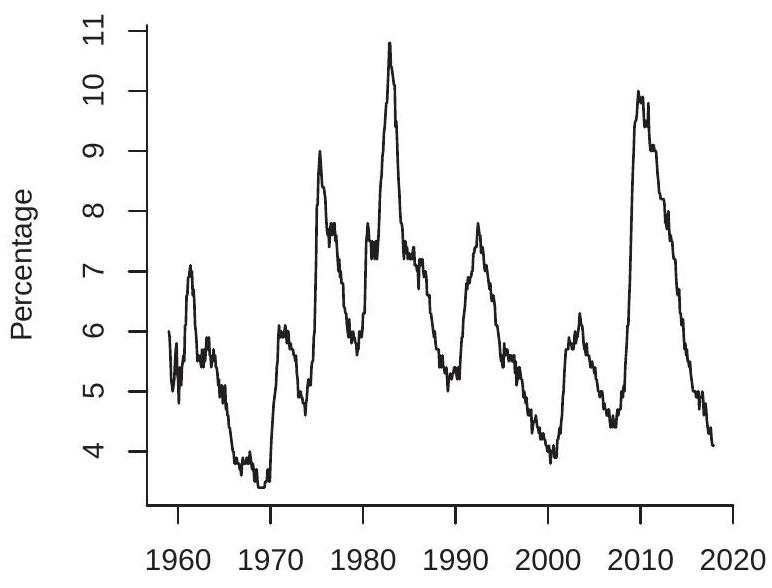
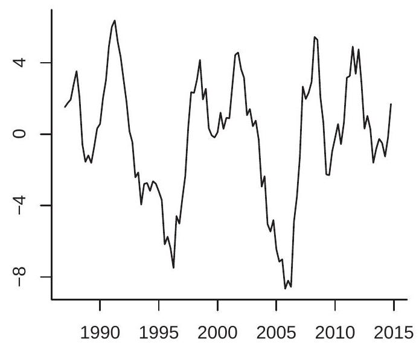

14 Time Series
14.1 Introduction
A time series \(Y_{t} \in \mathbb{R}^{m}\) is a process which is sequentially ordered over time. In this textbook we focus on discrete time series where \(t\) is an integer, though there is also a considerable literature on continuoustime processes. To denote the time period it is typical to use the subscript \(t\). The time series is univariate if \(m=1\) and multivariate if \(m>1\). This chapter is primarily focused on univariate time series models, though we describe the concepts for the multivariate case when the added generality does not add extra complication.
Most economic time series are recorded at discrete intervals such as annual, quarterly, monthly, weekly, or daily. The number of observaed periods \(s\) per year is called the frequency. In most cases we will denote the observed sample by the periods \(t=1, \ldots, n\).
Because of the sequential nature of time series we expect that observations close in calender time, e.g. \(Y_{t}\) and its lagged value \(Y_{t-1}\), will be dependent. This type of dependence structure requires a different distributional theory than for cross-sectional and clustered observations since we cannot divide the sample into independent groups. Many of the issues which distinguish time series from cross-section econometrics concern the modeling of these dependence relationships.
There are many excellent textbooks for time series analysis. The encyclopedic standard is Hamilton (1994). Others include Harvey (1990), Tong (1990), Brockwell and Davis (1991), Fan and Yao (2003), Lütkepohl (2005), Enders (2014), and Kilian and Lütkepohl (2017). For textbooks on the related subject of forecasting see Granger and Newbold (1986), Granger (1989), and Elliott and Timmermann (2016).
14.2 Examples
Many economic time series are macroeconomic variables. An excellent resource for U.S. macroeconomic data are the FRED-MD and FRED-QD databases which contain a wide set of monthly and quarterly variables, assembled and maintained by the St. Louis Federal Reserve Bank. See McCracken and Ng (2016, 2021). The datasets FRED-MD and FRED-QD for 1959-2017 are posted on the textbook website. FRED-MD has 129 variables over 708 months. FRED-QD has 248 variables over 236 quarters.
When working with time series data one of the first tasks is to plot the series against time. In Figures 14.1-14.2 we plot eight example time series from FRED-QD and FRED-MD. As is conventional, the x-axis displays calendar dates (in this case years) and the y-axis displays the level of the series. The series plotted are: (1a) Real U.S. GDP ( \(g d p c 1)\); (1b) U.S.-Canada exchange rate (excausx); (1c) Interest rate on U.S. 10-year Treasury bond (gs10); (1d) Real crude oil price (oilpricex); (2a) U.S. unemployment rate (unrate); (2b) U.S. real non-durables consumption growth rate (growth rate of \(p c n d x\) ); (2c) U.S. CPI inflation rate
- U.S. Real GDP
- Interest Rate on 10-Year Treasury
- U.S.-Canada Exchange Rate
- Real Crude Oil Price
Figure 14.1: GDP, Exchange Rate, Interest Rate, Oil Price
(growth rate of cpiaucsl); (2d) S&P 500 return (growth rate of \(s p 500\) ). (1a) and (2b) are quarterly series, the rest are monthly.
Many of the plots are smooth, meaning that the neighboring values (in calendar time) are similar to one another and hence are serially correlated. Some of the plots are non-smooth, meaning that the neighboring values are less similar and hence less correlated. At least one plot (real GDP) displays an upward trend.

- U.S. Unemployment Rate
- U.S. Inflation Rate
- Consumption Growth Rate
- S&P 500 Return
Figure 14.2: Unemployment Rate, Consumption Growth Rate, Inflation Rate, and S&P 500 Return
14.3 Differences and Growth Rates
It is common to transform series by taking logarithms, differences, and/or growth rates. Three of the series in Figure \(14.2\) (consumption growth, inflation [growth rate of CPI index], and S&P 500 return) are displayed as growth rates. This may be done for a number of reasons. The most credible is that this is the suitable transformation for the desired analysis.
Many aggregate series such as real GDP are transformed by taking natural logarithms. This flattens the apparent exponential growth and makes fluctuations proportionate.
The first difference of a series \(Y_{t}\) is
\[ \Delta Y_{t}=Y_{t}-Y_{t-1} \]
The second difference is
\[ \Delta^{2} Y_{t}=\Delta Y_{t}-\Delta Y_{t-1} . \]
Higher-order differences can be defined similarly but are not used in practice. The annual, or year-onyear, change of a series \(Y_{t}\) with frequency \(s\) is
\[ \Delta_{s} Y_{t}=Y_{t}-Y_{t-s} . \]
There are several methods to calculate growth rates. The one-period growth rate is the percentage change from period \(t-1\) to period \(t\) :
\[ Q_{t}=100\left(\frac{\Delta Y_{t}}{Y_{t-1}}\right)=100\left(\frac{Y_{t}}{Y_{t-1}}-1\right) . \]
The multiplication by 100 is not essential but scales \(Q_{t}\) so that it is a percentage. This is the transformation used for the plots in Figures \(14.2\) (b)-(d). For quarterly data, \(Q_{t}\) is the quarterly growth rate. For monthly data, \(Q_{t}\) is the monthly growth rate.
For non-annual data the one-period growth rate (14.1) may be unappealing for interpretation. Consequently, statistical agencies commonly report “annualized” growth rates which is the annual growth which would occur if the one-period growth rate is compounded for a full year. For a series with frequency \(s\) the annualized growth rate is
\[ A_{t}=100\left(\left(\frac{Y_{t}}{Y_{t-1}}\right)^{s}-1\right) . \]
Notice that \(A_{t}\) is a nonlinear function of \(Q_{t}\).
Year-on-year growth rates are
\[ G_{t}=100\left(\frac{\Delta_{s} Y_{t}}{Y_{t-s}}\right)=100\left(\frac{Y_{t}}{Y_{t-s}}-1\right) . \]
These do not need annualization.
Growth rates are closely related to logarithmic transformations. For small growth rates, \(Q_{t}, A_{t}\) and \(G_{t}\) are approximately first differences in logarithms:
\[ \begin{aligned} Q_{t} & \simeq 100 \Delta \log Y_{t} \\ A_{t} & \simeq s \times 100 \Delta \log Y_{t} \\ G_{t} & \simeq 100 \Delta_{s} \log Y_{t} . \end{aligned} \]
For analysis using growth rates I recommend the one-period growth rates (14.1) or differenced logarithms rather than the annualized growth rates (14.2). While annualized growth rates are preferred for reporting, they are a highly nonlinear transformation which is unnatural for statistical analysis. Differenced logarithms are the most common choice and are recommended for models which combine log-levels and growth rates for then the models are linear in all variables.
14.4 Stationarity
Recall that cross-sectional observations are conventionally treated as random draws from an underlying population. This is not an appropriate model for time series processes due to serial dependence. Instead, we treat the observed sample \(\left\{Y_{1}, \ldots, Y_{n}\right\}\) as a realization of a dependent stochastic process. It is often useful to view \(\left\{Y_{1}, \ldots, Y_{n}\right\}\) as a subset of an underlying doubly-infinite sequence \(\left\{\ldots, Y_{t-1}, Y_{t}, Y_{t+1}, \ldots\right\}\).
A random vector \(Y_{t}\) can be characterized by its distribution. A set such as \(\left(Y_{t}, Y_{t+1}, \ldots, Y_{t+\ell}\right)\) can be characterized by its joint distribution. Important features of these distributions are their means, variances, and covariances. Since there is only one observed time series sample, in order to learn about these distributions there needs to be some sort of constancy. This may only hold after a suitable transformation such as growth rates (as discussed in the previous section).
The most commonly assumed form of constancy is stationarity. There are two definitions. The first is sufficient for construction of linear models.
Definition \(14.1\left\{Y_{t}\right\}\) is covariance or weakly stationary if the expectation \(\mu=\) \(\mathbb{E}\left[Y_{t}\right]\) and covariance matrix \(\Sigma=\operatorname{var}\left[Y_{t}\right]=\mathbb{E}\left[\left(Y_{t}-\mu\right)\left(Y_{t}-\mu\right)^{\prime}\right]\) are finite and are independent of \(t\), and the autocovariances
\[ \Gamma(k)=\operatorname{cov}\left(Y_{t}, Y_{t-k}\right)=\mathbb{E}\left[\left(Y_{t}-\mu\right)\left(Y_{t-k}-\mu\right)^{\prime}\right] \]
are independent of \(t\) for all \(k\)
In the univariate case we typically write the variance as \(\sigma^{2}\) and autocovariances as \(\gamma(k)\).
The expectation \(\mu\) and variance \(\Sigma\) are features of the marginal distribution of \(Y_{t}\) (the distribution of \(Y_{t}\) at a specific time period \(t\) ). Their constancy as stated in the above definition means that these features of the distribution are stable over time.
The autocovariances \(\Gamma(k)\) are features of the bivariate distributions of \(\left(Y_{t}, Y_{t-k}\right)\). Their constancy as stated in the definition means that the correlation patterns between adjacent \(Y_{t}\) are stable over time and only depend on the number of time periods \(k\) separating the variables. By symmetry we have \(\Gamma(-k)=\) \(\Gamma(k)^{\prime}\). In the univariate case this simplifies to \(\gamma(-k)=\gamma(k)\). The autocovariances \(\Gamma(k)\) are finite under the assumption that the covariance matrix \(\Sigma\) is finite by the Cauchy-Schwarz inequality.
The autocovariances summarize the linear dependence between \(Y_{t}\) and its lags. A scale-free measure of linear dependence in the univariate case are the autocorrelations
\[ \rho(k)=\operatorname{corr}\left(Y_{t}, Y_{t-k}\right)=\frac{\operatorname{cov}\left(Y_{t}, Y_{t-k}\right)}{\sqrt{\operatorname{var}\left[Y_{t}\right] \operatorname{var}\left[Y_{t-1}\right]}}=\frac{\gamma(k)}{\sigma^{2}}=\frac{\gamma(k)}{\gamma(0)} . \]
Notice by symmetry that \(\rho(-k)=\rho(k)\).
The second definition of stationarity concerns the entire joint distribution.
Definition 14.2 \(\left\{Y_{t}\right\}\) is strictly stationary if the joint distribution of \(\left(Y_{t}, \ldots, Y_{t+\ell}\right)\) is independent of \(t\) for all \(\ell\). This is the natural generalization of the cross-section definition of identical distributions. Strict stationarity implies that the (marginal) distribution of \(Y_{t}\) does not vary over time. It also implies that the bivariate distributions of \(\left(Y_{t}, Y_{t+1}\right)\) and multivariate distributions of \(\left(Y_{t}, \ldots, Y_{t+\ell}\right)\) are stable over time. Under the assumption of a bounded variance a strictly stationary process is covariance stationary \({ }^{1}\).
For formal statistical theory we generally require the stronger assumption of strict stationarity. Therefore if we label a process as “stationary” you should interpret it as meaning “strictly stationary”.
The core meaning of both weak and strict stationarity is the same - that the distribution of \(Y_{t}\) is stable over time. To understand the concept it may be useful to review the plots in Figures 14.1-14.2. Are these stationary processes? If so, we would expect that the expectation and variance to be stable over time. This seems unlikely to apply to the series in Figure 14.1, as in each case it is difficult to describe what is the “typical” value of the series. Stationarity may be appropriate for the series in Figure \(14.2\) as each oscillates with a fairly regular pattern. It is difficult, however, to know whether or not a given time series is stationary simply by examining a time series plot.
A straightforward but essential relationship is that an i.i.d. process is strictly stationary.
Theorem 14.1 If \(Y_{t}\) is i.i.d., then it strictly stationary.
Here are some examples of strictly stationary scalar processes. In each, \(e_{t}\) is i.i.d. and \(\mathbb{E}\left[e_{t}\right]=0\).
Example 14.1 \(Y_{t}=e_{t}+\theta e_{t-1}\).
Example 14.2 \(Y_{t}=Z\) for some random variable \(Z\).
Example 14.3 \(Y_{t}=(-1)^{t} Z\) for a random variable \(Z\) which is symmetrically distributed about 0 .
Here are some examples of processes which are not stationary.
Example 14.4 \(Y_{t}=t\).
Example 14.5 \(Y_{t}=(-1)^{t}\).
Example 14.6 \(Y_{t}=\cos (\theta t)\).
Example 14.7 \(Y_{t}=\sqrt{t} e_{t}\).
Example 14.8 \(Y_{t}=e_{t}+t^{-1 / 2} e_{t-1}\).
Example 14.9 \(Y_{t}=Y_{t-1}+e_{t}\) with \(Y_{0}=0\).
From the examples we can see that stationarity means that the distribution is constant over time. It does not mean, however, that the process has some sort of limited dependence, nor that there is an absence of periodic patterns. These restrictions are associated with the concepts of ergodicity and mixing which we shall introduce in subsequent sections.
\({ }^{1}\) More generally, the two classes are non-nested since strictly stationary infinite variance processes are not covariance stationary.
14.5 Transformations of Stationary Processes
One of the important properties of strict stationarity is that it is preserved by transformation. That is, transformations of strictly stationary processes are also strictly stationary. This includes transformations which include the full history of \(Y_{t}\).
Theorem 14.2 If \(Y_{t}\) is strictly stationary and \(X_{t}=\phi\left(Y_{t}, Y_{t-1}, Y_{t-2}, \ldots\right) \in \mathbb{R}^{q}\) is a random vector then \(X_{t}\) is strictly stationary.
Theorem \(14.2\) is extremely useful both for the study of stochastic processes which are constructed from underlying errors and for the study of sample statistics such as linear regression estimators which are functions of sample averages of squares and cross-products of the original data.
We give the proof of Theorem \(14.2\) in Section 14.47.
14.6 Convergent Series
A transformation which includes the full past history is an infinite-order moving average. For scalar \(Y\) and coefficients \(a_{j}\) define the vector process
\[ X_{t}=\sum_{j=0}^{\infty} a_{j} Y_{t-j} . \]
Many time-series models involve representations and transformations of the form (14.3).
The infinite series (14.3) exists if it is convergent, meaning that the sequence \(\sum_{j=0}^{N} a_{j} Y_{t-j}\) has a finite limit as \(N \rightarrow \infty\). Since the inputs \(Y_{t}\) are random we define this as a probability limit.
Definition 14.3 The infinite series (14.3) converges almost surely if \(\sum_{j=0}^{N} a_{j} Y_{t-j}\) has a finite limit as \(N \rightarrow \infty\) with probability one. In this case we describe \(X_{t}\) as convergent.
Theorem 14.3 If \(Y_{t}\) is strictly stationary, \(\mathbb{E}|Y|<\infty\), and \(\sum_{j=0}^{\infty}\left|a_{j}\right|<\infty\), then (14.3) converges almost surely. Furthermore, \(X_{t}\) is strictly stationary.
The proof of Theorem \(14.3\) is provided in Section \(14.47\).
14.7 Ergodicity
Stationarity alone is not sufficient for the weak law of large numbers as there are strictly stationary processes with no time series variation. As we described earlier, an example of a stationary process is \(Y_{t}=Z\) for some random variable \(Z\). This is random but constant over all time. An implication is that the sample mean of \(Y_{t}=Z\) will be inconsistent for the population expectation.
What is a minimal assumption beyond stationarity so that the law of large numbers applies? This topic is called ergodicity. It is sufficiently important that it is treated as a separate area of study. We mention only a few highlights here. For a rigorous treatment see a standard textbook such as Walters (1982).
A time series \(Y_{t}\) is ergodic if all invariant events are trivial, meaning that any event which is unaffected by time-shifts has probability either zero or one. This definition is rather abstract and difficult to grasp but fortunately it is not needed by most economists.
A useful intuition is that if \(Y_{t}\) is ergodic then its sample paths will pass through all parts of the sample space never getting “stuck” in a subregion.
We will first describe the properties of ergodic series which are relevant for our needs and follow with the more rigorous technical definitions. For proofs of the results see Section 14.47.
First, many standard time series processes can be shown to be ergodic. A useful starting point is the observation that an i.i.d. sequence is ergodic.
Theorem 14.4 If \(Y_{t} \in \mathbb{R}^{m}\) is i.i.d. then it strictly stationary and ergodic.
Second, ergodicity, like stationarity, is preserved by transformation.
Theorem 14.5 If \(Y_{t} \in \mathbb{R}^{m}\) is strictly stationary and ergodic and \(X_{t}=\) \(\phi\left(Y_{t}, Y_{t-1}, Y_{t-2}, \ldots\right)\) is a random vector, then \(X_{t}\) is strictly stationary and ergodic.
As an example, the infinite-order moving average transformation (14.3) is ergodic if the input is ergodic and the coefficients are absolutely convergent.
Theorem 14.6 If \(Y_{t}\) is strictly stationary, ergodic, \(\mathbb{E}|Y|<\infty\), and \(\sum_{j=0}^{\infty}\left|a_{j}\right|<\infty\) then \(X_{t}=\sum_{j=0}^{\infty} a_{j} Y_{t-j}\) is strictly stationary and ergodic.
We now present a useful property. It is that the Cesàro sum of the autocovariances limits to zero.
Theorem 14.7 If \(Y_{t} \in \mathbb{R}\) is strictly stationary, ergodic, and \(\mathbb{E}\left[Y^{2}\right]<\infty\), then
\[ \lim _{n \rightarrow \infty} \frac{1}{n} \sum_{\ell=1}^{n} \operatorname{cov}\left(Y_{t}, Y_{t+\ell}\right)=0 . \]
The result (14.4) can be interpreted as that the autocovariances “on average” tend to zero. Some authors have mis-stated ergodicity as implying that the covariances tend to zero but this is not correct, as (14.4) allows, for example, the non-convergent sequence \(\operatorname{cov}\left(Y_{t}, Y_{t+\ell}\right)=(-1)^{\ell}\). The reason why (14.4) is particularly useful is because it is sufficient for the WLLN as we discover later in Theorem 14.9.
We now give the formal definition of ergodicity for interested readers. As the concepts will not be used again most readers can safely skip this discussion.
As we stated above, by definition the series \(Y_{t} \in \mathbb{R}^{m}\) is ergodic if all invariant events are trivial. To understand this we introduce some technical definitions. First, we can write an event as \(A=\left\{\widetilde{Y}_{t} \in G\right\}\) where \(\widetilde{Y}_{t}=\left(\ldots, Y_{t-1}, Y_{t}, Y_{t+1}, \ldots\right)\) is an infinite history and \(G \subset \mathbb{R}^{m \infty}\). Second, the \(\ell^{t h}\) time-shift of \(\widetilde{Y}_{t}\) is defined as \(\widetilde{Y}_{t+\ell}=\left(\ldots, Y_{t-1+\ell}, Y_{t+\ell}, Y_{t+1+\ell}, \ldots\right)\). Thus \(\widetilde{Y}_{t+\ell}\) replaces each observation in \(\widetilde{Y}_{t}\) by its \(\ell^{t h}\) shifted value \(Y_{t+\ell}\). A time-shift of the event \(A=\left\{\widetilde{Y}_{t} \in G\right\}\) is \(A_{\ell}=\left\{\widetilde{Y}_{t+\ell} \in G\right\}\). Third, an event \(A\) is called invariant if it is unaffected by a time-shift, so that \(A_{\ell}=A\). Thus replacing any history \(\widetilde{Y}_{t}\) with its shifted history \(\widetilde{Y}_{t+\ell}\) doesn’t change the event. Invariant events are rather special. An example of an invariant event is \(A=\left\{\max _{-\infty<t<\infty} Y_{t} \leq 0\right\}\). Fourth, an event \(A\) is called trivial if either \(\mathbb{P}[A]=0\) or \(\mathbb{P}[A]=1\). You can think of trivial events as essentially non-random. Recall, by definition \(Y_{t}\) is ergodic if all invariant events are trivial. This means that any event which is unaffected by a time shift is trivial-is essentially non-random. For example, again consider the invariant event \(A=\left\{\max _{-\infty<t<\infty} Y_{t} \leq 0\right\}\). If \(Y_{t}=Z \sim \mathrm{N}(0,1)\) for all \(t\) then \(\mathbb{P}[A]=\mathbb{P}[Z \leq 0]=0.5\). Since this does not equal 0 or 1 then \(Y_{t}=Z\) is not ergodic. However, if \(Y_{t}\) is i.i.d. \(\mathrm{N}(0,1)\) then \(\mathbb{P}\left[\max _{-\infty<t<\infty} Y_{t} \leq 0\right]=0\). This is a trivial event. For \(Y_{t}\) to be ergodic (it is in this case) all such invariant events must be trivial.
An important technical result is that ergodicity is equivalent to the following property.
Theorem 14.8 A stationary series \(Y_{t} \in \mathbb{R}^{m}\) is ergodic iff for all events \(A\) and \(B\)
\[ \lim _{n \rightarrow \infty} \frac{1}{n} \sum_{\ell=1}^{n} \mathbb{P}\left[A_{\ell} \cap B\right]=\mathbb{P}[A] \mathbb{P}[B] . \]
This result is rather deep so we do not prove it here. See Walters (1982), Corollary 1.14.2, or Davidson (1994), Theorem 14.7. The limit in (14.5) is the Cesàro sum of \(\mathbb{P}\left[A_{\ell} \cap B\right]\). The Theorem of Cesàro Means (Theorem A.4 of Probability and Statistics for Economists) shows that a sufficient condition for (14.5) is that \(\mathbb{P}\left[A_{\ell} \cap B\right] \rightarrow \mathbb{P}[A] \mathbb{P}[B]\) which is known as mixing. Thus mixing implies ergodicity. Mixing, roughly, means that separated events are asymptotically independent. Ergodicity is weaker, only requiring that the events are asymptotically independent “on average”. We discuss mixing in Section 14.12.
14.8 Ergodic Theorem
The ergodic theorem is one of the most famous results in time series theory. There are actually several forms of the theorem, most of which concern almost sure convergence. For simplicity we state the theorem in terms of convergence in probability. Theorem 14.9 Ergodic Theorem.
If \(Y_{t} \in \mathbb{R}^{m}\) is strictly stationary, ergodic, and \(\mathbb{E}\|Y\|<\infty\), then as \(n \rightarrow \infty\),
\[ \mathbb{E}\|\bar{Y}-\mu\| \longrightarrow 0 \]
and
\[ \bar{Y} \underset{p}{\longrightarrow} \mu \]
where \(\mu=\mathbb{E}[Y]\).
The ergodic theorem shows that ergodicity is sufficient for consistent estimation. The moment condition \(\mathbb{E}\|Y\|<\infty\) is the same as in the WLLN for i.i.d. observations.
We now provide a proof of the ergodic theorem for the scalar case under the additional assumption that \(\operatorname{var}[Y]=\sigma^{2}<\infty\). A proof which relaxes this assumption is provided in Section 14.47.
By direct calculation
\[ \operatorname{var}[\bar{Y}]=\frac{1}{n^{2}} \sum_{t=1}^{n} \sum_{j=1}^{n} \gamma(t-j) \]
where \(\gamma(\ell)=\operatorname{cov}\left(Y_{t}, Y_{t+\ell}\right)\). The double sum is over all elements of an \(n \times n\) matrix whose \(t j^{t h}\) element is \(\gamma(t-j)\). The diagonal elements are \(\gamma(0)=\sigma^{2}\), the first off-diagonal elements are \(\gamma(1)\), the second offdiagonal elements are \(\gamma(2)\) and so on. This means that there are precisely \(n\) diagonal elements equalling \(\sigma^{2}, 2(n-1)\) equalling \(\gamma(1)\), etc. Thus the above equals
\[ \begin{aligned} \operatorname{var}[\bar{Y}] &=\frac{1}{n^{2}}\left(n \sigma^{2}+2(n-1) \gamma(1)+2(n-2) \gamma(2)+\cdots+2 \gamma(n-1)\right) \\ &=\frac{\sigma^{2}}{n}+\frac{2}{n} \sum_{\ell=1}^{n}\left(1-\frac{\ell}{n}\right) \gamma(\ell) . \end{aligned} \]
This is a rather intruiging expression. It shows that the variance of the sample mean precisely equals \(\sigma^{2} / n\) (which is the variance of the sample mean under i.i.d. sampling) plus a weighted Cesàro mean of the autocovariances. The latter is zero under i.i.d. sampling but is non-zero otherwise. Theorem \(14.7\) shows that the Cesàro mean of the autocovariances converges to zero. Let \(w_{n \ell}=2\left(\ell / n^{2}\right)\), which satisfy the conditions of the Toeplitz Lemma (Theorem A.5 of Probability and Statistics for Economists). Then
\[ \frac{2}{n} \sum_{\ell=1}^{n}\left(1-\frac{\ell}{n}\right) \gamma(\ell)=\frac{2}{n^{2}} \sum_{\ell=1}^{n-1} \sum_{j=1}^{\ell} \gamma(j)=\sum_{\ell=1}^{n-1} w_{n \ell}\left(\frac{1}{\ell} \sum_{j=1}^{\ell} \gamma(j)\right) \longrightarrow 0 \]
Together, we have shown that (14.8) is \(o(1)\) under ergodicity. Hence \(\operatorname{var}[\bar{Y}] \rightarrow 0\). Markov’s inequality establishes that \(\bar{Y} \underset{p}{\longrightarrow} \mu\).
14.9 Conditioning on Information Sets
In the past few sections we have introduced the concept of the infinite histories. We now consider conditional expectations given infinite histories.
First, some basics. Recall from probability theory that an outcome is an element of a sample space. An event is a set of outcomes. A probability law is a rule which assigns non-negative real numbers to events. When outcomes are infinite histories then events are collections of such histories and a probability law is a rule which assigns numbers to collections of infinite histories.
Now we wish to define a conditional expectation given an infinite past history. Specifically, we wish to define
\[ \mathbb{E}_{t-1}\left[Y_{t}\right]=\mathbb{E}\left[Y_{t} \mid Y_{t-1}, Y_{t-2}, \ldots\right] \text {. } \]
the expected value of \(Y_{t}\) given the history \(\widetilde{Y}_{t-1}=\left(Y_{t-1}, Y_{t-2}, \ldots\right)\) up to time \(t\). Intuitively, \(\mathbb{E}_{t-1}\left[Y_{t}\right]\) is the mean of the conditional distribution, the latter reflecting the information in the history. Mathematically this cannot be defined using (2.6) as the latter requires a joint density for \(\left(Y_{t}, Y_{t-1}, Y_{t-2}, \ldots\right)\) which does not make much sense. Instead, we can appeal to Theorem \(2.13\) which states that the conditional expectation (14.10) exists if \(\mathbb{E}\left|Y_{t}\right|<\infty\) and the probabilities \(\mathbb{P}\left[\widetilde{Y}_{t-1} \in A\right]\) are defined. The latter events are discussed in the previous paragraph. Thus the conditional expectation is well defined.
In this textbook we have avoided measure-theoretic terminology to keep the presentation accessible, and because it is my belief that measure theory is more distracting than helpful. However, it is standard in the time series literature to follow the measure-theoretic convention of writing (14.10) as the conditional expectation given a \(\sigma\)-field. So at the risk of being overly-technical we will follow this convention and write the expectation (14.10) as \(\mathbb{E}\left[Y_{t} \mid \mathscr{F}_{t-1}\right]\) where \(\mathscr{F}_{t-1}=\sigma\left(\widetilde{Y}_{t-1}\right)\) is the \(\sigma\)-field generated by the history \(\widetilde{Y}_{t-1}\). A \(\sigma\)-field (also known as a \(\sigma\)-algebra) is a collection of sets satisfying certain regularity conditions \({ }^{2}\). See Probability and Statistics for Economists, Section 1.14. The \(\sigma\)-field generated by a random variable \(Y\) is the collection of measurable events involving \(Y\). Similarly, the \(\sigma\)-field generated by an infinite history is the collection of measurable events involving this history. Intuitively, \(\mathscr{F}_{t-1}\) contains all the information available in the history \(\widetilde{Y}_{t-1}\). Consequently, economists typically call \(\mathscr{F}_{t-1}\) an information set rather than a \(\sigma\)-field. As I said, in this textbook we endeavor to avoid measure theoretic complications so will follow the economists’ label rather than the probabilists’, but use the latter’s notation as is conventional. To summarize, we will write \(\mathscr{F}_{t}=\sigma\left(Y_{t}, Y_{t-1}, \ldots\right)\) to indicate the information set generated by an infinite history \(\left(Y_{t}, Y_{t-1}, \ldots\right)\), and will write \((14.10)\) as \(\mathbb{E}\left[Y_{t} \mid \mathscr{F}_{t-1}\right]\).
We now describe some properties about information sets \(\mathscr{F}_{t}\).
First, they are nested: \(\mathscr{F}_{t-1} \subset \mathscr{F}\). This means that information accumulates over time. Information is not lost.
Second, it is important to be precise about which variables are contained in the information set. Some economists are sloppy and refer to “the information set at time \(t\)” without specifying which variables are in the information set. It is better to be specific. For example, the information sets \(\mathscr{F}_{1 t}=\) \(\sigma\left(Y_{t}, Y_{t-1}, \ldots\right)\) and \(\mathscr{F}_{2 t}=\sigma\left(Y_{t}, X_{t}, Y_{t-1}, X_{t-1} \ldots\right)\) are distinct even though they are both dated at time \(t\).
Third, the conditional expectations (14.10) follow the law of iterated expectations and the conditioning theorem, thus
\[ \begin{aligned} \mathbb{E}\left[\mathbb{E}\left[Y_{t} \mid \mathscr{F}_{t-1}\right] \mid \mathscr{F}_{t-2}\right] &=\mathbb{E}\left[Y_{t} \mid \mathscr{F}_{t-2}\right] \\ \mathbb{E}\left[\mathbb{E}\left[Y_{t} \mid \mathscr{F}_{t-1}\right]\right] &=\mathbb{E}\left[Y_{t}\right] \end{aligned} \]
and
\[ \mathbb{E}\left[Y_{t-1} Y_{t} \mid \mathscr{F}_{t-1}\right]=Y_{t-1} \mathbb{E}\left[Y_{t} \mid \mathscr{F}_{t-1}\right] \]
14.10 Martingale Difference Sequences
An important concept in economics is unforecastability, meaning that the conditional expectation is the unconditional expectation. This is similar to the properties of a regression error. An unforecastable process is called a martingale difference sequence (MDS).
\({ }^{2} \mathrm{~A} \sigma\)-field contains the universal set, is closed under complementation, and closed under countable unions. A MDS \(e_{t}\) is defined with respect to a specific sequence of information sets \(\mathscr{F}_{t}\). Most commonly the latter are the natural filtration \(\mathscr{F}_{t}=\sigma\left(e_{t}, e_{t-1}, \ldots\right)\) (the past history of \(\left.e_{t}\right)\) but it could be a larger information set. The only requirement is that \(e_{t}\) is adapted to \(\mathscr{F}_{t}\), meaning that \(\mathbb{E}\left[e_{t} \mid \mathscr{F}_{t}\right]=e_{t}\).
Definition 14.4 The process \(\left(e_{t}, \mathscr{F}_{t}\right)\) is a Martingale Difference Sequence (MDS) if \(e_{t}\) is adapted to \(\mathscr{F}_{t}\), EE \(\left|e_{t}\right|<\infty\), and \(\mathbb{E}\left[e_{t} \mid \mathscr{F}_{t-1}\right]=0\).
In words, a MDS \(e_{t}\) is unforecastable in the mean. It is useful to notice that if we apply iterated expectations \(\mathbb{E}\left[e_{t}\right]=\mathbb{E}\left[\mathbb{E}\left[e_{t} \mid \mathscr{F}_{t-1}\right]\right]=0\). Thus a MDS is mean zero.
The definition of a MDS requires the information sets \(\mathscr{F}_{t}\) to contain the information in \(e_{t}\), but is broader in the sense that it can contain more information. When no explicit definition is given it is standard to assume that \(\mathscr{F}_{t}\) is the natural filtration. However, it is best to explicitly specify the information sets so there is no confusion.
The term “martingale difference sequence” refers to the fact that the summed process \(S_{t}=\sum_{j=1}^{t} e_{j}\) is a martingale and \(e_{t}\) is its first-difference. A martingale \(S_{t}\) is a process which has a finite mean and \(\mathbb{E}\left[S_{t} \mid \mathscr{F}_{t-1}\right]=S_{t-1}\)
If \(e_{t}\) is i.i.d. and mean zero it is a MDS but the reverse is not the case. To see this, first suppose that \(e_{t}\) is i.i.d. and mean zero. It is then independent of \(\mathscr{F}_{t-1}=\sigma\left(e_{t-1}, e_{t-2}, \ldots\right)\) so \(\mathbb{E}\left[e_{t} \mid \mathscr{F}_{t-1}\right]=\mathbb{E}\left[e_{t}\right]=0\). Thus an i.i.d. shock is a MDS as claimed.
To show that the reverse is not true let \(u_{t}\) be i.i.d. \(\mathrm{N}(0,1)\) and set
\[ e_{t}=u_{t} u_{t-1} \]
By the conditioning theorem
\[ \mathbb{E}\left[e_{t} \mid \mathscr{F}_{t-1}\right]=u_{t-1} \mathbb{E}\left[u_{t} \mid \mathscr{F}_{t-1}\right]=0 \]
so \(e_{t}\) is a MDS. The process (14.11) is not, however, i.i.d. One way to see this is to calculate the first autocovariance of \(e_{t}^{2}\), which is
\[ \begin{aligned} \operatorname{cov}\left(e_{t}^{2}, e_{t-1}^{2}\right) &=\mathbb{E}\left[e_{t}^{2} e_{t-1}^{2}\right]-\mathbb{E}\left[e_{t}^{2}\right] \mathbb{E}\left[e_{t-1}^{2}\right] \\ &=\mathbb{E}\left[u_{t}^{2}\right] \mathbb{E}\left[u_{t-1}^{4}\right] \mathbb{E}\left[u_{t-2}^{2}\right]-1 \\ &=2 \neq 0 . \end{aligned} \]
Since the covariance is non-zero, \(e_{t}\) is not an independent sequence. Thus \(e_{t}\) is a MDS but not i.i.d.
An important property of a square integrable MDS is that it is serially uncorrelated. To see this, observe that by iterated expectations, the conditioning theorem, and the definition of a MDS, for \(k>0\),
\[ \begin{aligned} \operatorname{cov}\left(e_{t}, e_{t-k}\right) &=\mathbb{E}\left[e_{t} e_{t-k}\right] \\ &=\mathbb{E}\left[\mathbb{E}\left[e_{t} e_{t-k} \mid \mathscr{F}_{t-1}\right]\right] \\ &=\mathbb{E}\left[\mathbb{E}\left[e_{t} \mid \mathscr{F}_{t-1}\right] e_{t-k}\right] \\ &=\mathbb{E}\left[0 e_{t-k}\right] \\ &=0 . \end{aligned} \]
Thus the autocovariances and autocorrelations are zero. A process that is serially uncorrelated, however, is not necessarily a MDS. Take the process \(e_{t}=u_{t}+\) \(u_{t-1} u_{t-2}\) with \(u_{t}\) i.i.d. \(\mathrm{N}(0,1)\). The process \(e_{t}\) is not a MDS because \(\mathbb{E}\left[e_{t} \mid \mathscr{F}_{t-1}\right]=u_{t-1} u_{t-2} \neq 0\). However,
\[ \begin{aligned} \operatorname{cov}\left(e_{t}, e_{t-1}\right) &=\mathbb{E}\left[e_{t} e_{t-1}\right] \\ &=\mathbb{E}\left[\left(u_{t}+u_{t-1} u_{t-2}\right)\left(u_{t-1}+u_{t-2} u_{t-3}\right)\right] \\ &=\mathbb{E}\left[u_{t} u_{t-1}+u_{t} u_{t-2} u_{t-3}+u_{t-1}^{2} u_{t-2}+u_{t-1} u_{t-2}^{2} u_{t-3}\right] \\ &=\mathbb{E}\left[u_{t}\right] \mathbb{E}\left[u_{t-1}\right]+\mathbb{E}\left[u_{t}\right] \mathbb{E}\left[u_{t-2}\right] \mathbb{E}\left[u_{t-3}\right] \\ &+\mathbb{E}\left[u_{t-1}^{2}\right] \mathbb{E}\left[u_{t-2}\right]+\mathbb{E}\left[u_{t-1}\right] \mathbb{E}\left[u_{t-2}^{2}\right] \mathbb{E}\left[u_{t-3}\right] \\ &=0 . \end{aligned} \]
Similarly, \(\operatorname{cov}\left(e_{t}, e_{t-k}\right)=0\) for \(k \neq 0\). Thus \(e_{t}\) is serially uncorrelated. We have proved the following.
Theorem 14.10 If \(\left(e_{t}, \mathscr{F}_{t}\right)\) is a MDS and \(\mathbb{E}\left[e_{t}^{2}\right]<\infty\) then \(e_{t}\) is serially uncorrelated.
Another important special case is a homoskedastic martingale difference sequence.
Definition 14.5 The MDS \(\left(e_{t}, \mathscr{F}_{t}\right)\) is a Homoskedastic Martingale Difference Sequence if \(\mathbb{E}\left[e_{t}^{2} \mid \mathscr{F}_{t-1}\right]=\sigma^{2}\).
A homoskedastic MDS should more properly be called a conditionally homoskedastic MDS because the property concerns the conditional distribution rather than the unconditional. That is, any strictly stationary MDS satisfies a constant variance \(\mathbb{E}\left[e_{t}^{2}\right]\) but only a homoskedastic MDS has a constant conditional variance \(\mathbb{E}\left[e_{t}^{2} \mid \mathscr{F}_{t-1}\right]\)
A homoskedatic MDS is analogous to a conditionally homoskedastic regression error. It is intermediate between a MDS and an i.i.d. sequence. Specifically, a square integrable and mean zero i.i.d. sequence is a homoskedastic MDS and the latter is a MDS.
The reverse is not the case. First, a MDS is not necessarily conditionally homoskedastic. Consider the example \(e_{t}=u_{t} u_{t-1}\) given previously which we showed is a MDS. It is not conditionally homoskedastic, however, because
\[ \mathbb{E}\left[e_{t}^{2} \mid \mathscr{F}_{t-1}\right]=u_{t-1}^{2} \mathbb{E}\left[u_{t}^{2} \mid \mathscr{F}_{t-1}\right]=u_{t-1}^{2} \]
which is time-varying. Thus this MDS \(e_{t}\) is conditionally heteroskedastic. Second, a homoskedastic MDS is not necessarily i.i.d. Consider the following example. Set \(e_{t}=\sqrt{1-2 / \eta_{t-1}} T_{t}\), where \(T_{t}\) is distributed as student \(t\) with degree of freedom parameter \(\eta_{t-1}=2+e_{t-1}^{2}\). This is scaled so that \(\mathbb{E}\left[e_{t} \mid \mathscr{F}_{t-1}\right]=0\) and \(\mathbb{E}\left[e_{t}^{2} \mid \mathscr{F}_{t-1}\right]=1\), and is thus a homoskedastic MDS. The conditional distribution of \(e_{t}\) depends on \(e_{t-1}\) through the degree of freedom parameter. Hence \(e_{t}\) is not an independent sequence.
One way to think about the difference between MDS and i.i.d. shocks is in terms of forecastability. An i.i.d. process is fully unforecastable in that no function of an i.i.d. process is forecastable. A MDS is unforecastable in the mean but other moments may be forecastable.
As we mentioned above, the definition of a MDS \(e_{t}\) allows for conditional heteroskedasticity, meaning that the conditional variance \(\sigma_{t}^{2}=\mathbb{E}\left[e_{t}^{2} \mid \mathscr{F}_{t-1}\right]\) may be time-varying. In financial econometrics there are many models for conditional heteroskedasticity, including autoregressive conditional heteroskedasticity (ARCH), generalized ARCH (GARCH), and stochastic volatility. A good reference for this class of models is Campbell, Lo, and MacKinlay (1997).
14.11 CLT for Martingale Differences
We are interested in an asymptotic approximation for the distribution of the normalized sample mean
\[ S_{n}=\frac{1}{\sqrt{n}} \sum_{t=1}^{n} u_{t} \]
where \(u_{t}\) is mean zero with variance \(\mathbb{E}\left[u_{t} u_{t}^{\prime}\right]=\Sigma<\infty\). In this section we present a CLT for the case where \(u_{t}\) is a martingale difference sequence.
Theorem 14.11 MDS CLT If \(u_{t}\) is a strictly stationary and ergodic martingale difference sequence and \(\mathbb{E}\left[u_{t} u_{t}^{\prime}\right]=\Sigma<\infty\), then as \(n \rightarrow \infty\),
\[ S_{n}=\frac{1}{\sqrt{n}} \sum_{t=1}^{n} u_{t} \underset{d}{\longrightarrow} \mathrm{N}(0, \Sigma) \text {. } \]
The conditions for Theorem \(14.11\) are similar to the Lindeberg-Lévy CLT. The only difference is that the i.i.d. assumption has been replaced by the assumption of a strictly stationarity and ergodic MDS.
The proof of Theorem \(14.11\) is technically advanced so we do not present the full details, but instead refer readers to Theorem \(3.2\) of Hall and Heyde (1980) or Theorem \(25.3\) of Davidson (1994) (which are more general than Theorem 14.11, not requiring strict stationarity). To illustrate the role of the MDS assumption we give a sketch of the proof in Section 14.47.
14.12 Mixing
For many results, including a CLT for correlated (non-MDS) series, we need a stronger restriction on the dependence between observations than ergodicity.
Recalling the property (14.5) of ergodic sequences we can measure the dependence between two events \(A\) and \(B\) by the discrepancy
\[ \alpha(A, B)=|\mathbb{P}[A \cap B]-\mathbb{P}[A] \mathbb{P}[B]| . \]
This equals 0 when \(A\) and \(B\) are independent and is positive otherwise. In general, \(\alpha(A, B)\) can be used to measure the degree of dependence between the events \(A\) and \(B\).
Now consider the two information sets ( \(\sigma\)-fields)
\[ \begin{aligned} \mathscr{F}_{-\infty}^{t} &=\sigma\left(\ldots, Y_{t-1}, Y_{t}\right) \\ \mathscr{F}_{t}^{\infty} &=\sigma\left(Y_{t}, Y_{t+1}, \ldots\right) . \end{aligned} \]
The first is the history of the series up until period \(t\) and the second is the history of the series starting in period \(t\) and going forward. We then separate the information sets by \(\ell\) periods, that is, take \(\mathscr{F}_{-\infty}^{t-\ell}\) and \(\mathscr{F}_{t}^{\infty}\). We can measure the degree of dependence between the information sets by taking all events in each and then taking the largest discrepancy (14.13). This is
\[ \alpha(\ell)=\sup _{A \in \mathscr{F}_{-\infty}^{t-\ell}, B \in \mathscr{F}_{t}^{\infty}} \alpha(A, B) . \]
The constants \(\alpha(\ell)\) are known as the strong mixing coefficients. We say that \(Y_{t}\) is strong mixing if \(\alpha(\ell) \rightarrow 0\) as \(\ell \rightarrow \infty\). This means that as the time separation increases between the information sets, the degree of dependence decreases, eventually reaching independence.
From the Theorem of Cesàro Means (Theorem A.4 of Probability and Statistics for Economists), strong mixing implies (14.5) which is equivalent to ergodicity. Thus a mixing process is ergodic.
An intuition concerning mixing can be colorfully illustrated by the following example due to Halmos (1956). A martini is a drink consisting of a large portion of gin and a small part of vermouth. Suppose that you pour a serving of gin into a martini glass, pour a small amount of vermouth on top, and then stir the drink with a swizzle stick. If your stirring process is mixing, with each turn of the stick the vermouth will become more evenly distributed throughout the gin, and asymptotically (as the number of stirs tends to infinity) the vermouth and gin distributions will become independent \({ }^{3}\). If so, this is a mixing process.
For applications, mixing is often useful when we can characterize the rate at which the coefficients \(\alpha(\ell)\) decline to zero. There are two types of conditions which are seen in asymptotic theory: rates and summation. Rate conditions take the form \(\alpha(\ell)=O\left(\ell^{-r}\right)\) or \(\alpha(\ell)=o\left(\ell^{-r}\right)\). Summation conditions take the form \(\sum_{\ell=0}^{\infty} \alpha(\ell)^{r}<\infty\) or \(\sum_{\ell=0}^{\infty} \ell^{s} \alpha(\ell)^{r}<\infty\).
There are alternative measures of dependence beyond (14.13) and many have been proposed. Strong mixing is one of the weakest (and thus embraces a wide set of time series processes) but is insufficiently strong for some applications. Another popular dependence measure is known as absolute regularity or \(\beta\)-mixing. The \(\beta\)-mixing coefficients are
\[ \beta(\ell)=\sup _{A \in \mathscr{F}_{t}^{\infty}} \mathbb{E}\left|\mathbb{P}\left[A \mid \mathscr{F}_{-\infty}^{t-\ell}\right]-\mathbb{P}[A]\right| . \]
Absolute regularity is stronger than strong mixing in the sense that \(\beta(\ell) \rightarrow 0\) implies \(\alpha(\ell) \rightarrow 0\), and rate conditions for the \(\beta\)-mixing coefficients imply the same rates for the strong mixing coefficients.
One reason why mixing is useful for applications is that it is preserved by transformations.
Theorem 14.12 If \(Y_{t}\) has mixing coefficients \(\alpha_{Y}(\ell)\) and \(X_{t}=\) \(\phi\left(Y_{t}, Y_{t-1}, Y_{t-2}, \ldots, Y_{t-q}\right)\) then \(X_{t}\) has mixing coefficients \(\alpha_{X}(\ell) \leq \alpha_{Y}(\ell-q)\) (for \(\ell \geq q)\). The coefficients \(\alpha_{X}(\ell)\) satisfy the same summation and rate conditions as \(\alpha_{Y}(\ell)\).
A limitation of the above result is that it is confined to a finite number of lags unlike the transformation results for stationarity and ergodicity.
Mixing can be a useful tool because of the following inequalities.
\({ }^{3}\) Of course, if you really make an asymptotic number of stirs you will never finish stirring and you won’t be able to enjoy the martini. Hence in practice it is advised to stop stirring before the number of stirs reaches infinity. Theorem 14.13 Let \(\mathscr{F}_{-\infty}^{t}\) and \(\mathscr{F}_{t}^{\infty}\) be constructed from the pair \(\left(X_{t}, Z_{t}\right)\).
- If \(\left|X_{t}\right| \leq C_{1}\) and \(\left|Z_{t}\right| \leq C_{2}\) then
\[ \left|\operatorname{cov}\left(X_{t-\ell}, Z_{t}\right)\right| \leq 4 C_{1} C_{2} \alpha(\ell) . \]
1. If \(\mathbb{E}\left|X_{t}\right|^{r}<\infty\) and \(\mathbb{E}\left|Z_{t}\right|^{q}<\infty\) for \(1 / r+1 / q<1\) then
\[ \left|\operatorname{cov}\left(X_{t-\ell}, Z_{t}\right)\right| \leq 8\left(\mathbb{E}\left|X_{t}\right|^{r}\right)^{1 / r}\left(\mathbb{E}\left|Z_{t}\right|^{q}\right)^{1 / q} \alpha(\ell)^{1-1 / r-1 / q} . \]
1. If \(\mathbb{E}\left[Z_{t}\right]=0\) and \(\mathbb{E}\left|Z_{t}\right|^{r}<\infty\) for \(r \geq 1\) then
\[ \mathbb{E}\left|\mathbb{E}\left[Z_{t} \mid \mathscr{F}_{-\infty}^{t-\ell}\right]\right| \leq 6\left(\mathbb{E}\left|Z_{t}\right|^{r}\right)^{1 / r} \alpha(\ell)^{1-1 / r} . \]
The proof is given in Section 14.47. Our next result follows fairly directly from the definition of mixing.
Theorem 14.14 If \(Y_{t}\) is i.i.d. then it is strong mixing and ergodic.
14.14 Linear Projection
In Chapter 2 we extensively studied the properties of linear projection models. In the context of stationary time series we can use similar tools. An important extension is to allow for projections onto infinite dimensional random vectors. For this analysis we assume that \(Y_{t}\) is covariance stationary.
Recall that when \((Y, X)\) have a joint distribution with bounded variances the linear projection of \(Y\) onto \(X\) (the best linear predictor) is the minimizer of \(S(\beta)=\mathbb{E}\left[\left(Y-\beta^{\prime} X\right)^{2}\right]\) and has the solution
\[ \mathscr{P}[Y \mid X]=X^{\prime}\left(\mathbb{E}\left[X X^{\prime}\right]\right)^{-1} \mathbb{E}[X Y] \text {. } \]
This projection is unique and has a unique projection error \(e=Y-\mathscr{P}[Y \mid X]\).
This idea extends to any Hilbert space including the infinite past history \(\widetilde{Y}_{t-1}=\left(\ldots, Y_{t-2}, Y_{t-1}\right)\). From the projection theorem for Hilbert spaces (see Theorem 2.3.1 of Brockwell and Davis (1991)) the projection \(\mathscr{P}_{t-1}\left[Y_{t}\right]=\mathscr{P}\left[Y_{t} \mid \tilde{Y}_{t-1}\right]\) of \(Y_{t}\) onto \(\widetilde{Y}_{t-1}\) is unique and has a unique projection error
\[ e_{t}=Y_{t}-\mathscr{P}_{t-1}\left[Y_{t}\right] . \]
The projection error is mean zero, has finite variance \(\sigma^{2}=\mathbb{E}\left[e_{t}^{2}\right] \leq \mathbb{E}\left[Y_{t}^{2}\right]<\infty\), and is serially uncorrelated. By Theorem 14.2, if \(Y_{t}\) is strictly stationary then \(\mathscr{P}_{t-1}\left[Y_{t}\right]\) and \(e_{t}\) are strictly stationary.
The property (14.18) implies that the projection errors are serially uncorrelated. We state these results formally.
Theorem 14.16 If \(Y_{t} \in \mathbb{R}\) is covariance stationary it has the projection equation
\[ Y_{t}=\mathscr{P}_{t-1}\left[Y_{t}\right]+e_{t} . \]
The projection error \(e_{t}\) satisfies
\[ \begin{aligned} \mathbb{E}\left[e_{t}\right] &=0 \\ \mathbb{E}\left[e_{t-j} e_{t}\right] &=0 \quad j \geq 1 \end{aligned} \]
and
\[ \sigma^{2}=\mathbb{E}\left[e_{t}^{2}\right] \leq \mathbb{E}\left[Y_{t}^{2}\right]<\infty . \]
If \(Y_{t}\) is strictly stationary then \(e_{t}\) is strictly stationary.
14.15 White Noise
The projection error \(e_{t}\) is mean zero, has a finite variance, and is serially uncorrelated. This describes what is known as a white noise process.
Definition 14.6 The process \(e_{t}\) is white noise if \(\mathbb{E}\left[e_{t}\right]=0, \mathbb{E}\left[e_{t}^{2}\right]=\sigma^{2}<\infty\), and \(\operatorname{cov}\left(e_{t}, e_{t-k}\right)=0\) for \(k \neq 0\).
A MDS is white noise (Theorem 14.10) but the reverse is not true as shown by the example \(e_{t}=\) \(u_{t}+u_{t-1} u_{t-2}\) given in Section 14.10, which is white noise but not a MDS. Therefore, the following types of shocks are nested: i.i.d., MDS, and white noise, with i.i.d. being the most narrow class and white noise the broadest. It is helpful to observe that a white noise process can be conditionally heteroskedastic as the conditional variance is unrestricted.
14.16 The Wold Decomposition
In Section \(14.14\) we showed that a covariance stationary process has a white noise projection error. This result can be used to express the series as an infinite linear function of the projection errors. This is a famous result known as the Wold decomposition. Theorem 14.17 The Wold Decomposition If \(Y_{t}\) is covariance stationary and \(\sigma^{2}>0\) where \(\sigma^{2}\) is the projection error variance (14.19), then \(Y_{t}\) has the linear representation
\[ Y_{t}=\mu_{t}+\sum_{j=0}^{\infty} b_{j} e_{t-j} \]
where \(e_{t}\) are the white noise projection errors (14.18), \(b_{0}=1\),
\[ \sum_{j=1}^{\infty} b_{j}^{2}<\infty, \]
and
\[ \mu_{t}=\lim _{m \rightarrow \infty} \mathscr{P}_{t-m}\left[Y_{t}\right] \]
The Wold decomposition shows that \(Y_{t}\) can be written as a linear function of the white noise projection errors plus \(\mu_{t}\). The infinite sum in (14.20) is also known as a linear process. The Wold decomposition is a foundational result for linear time series analysis. Since any covariance stationary process can be written in this format this justifies linear models as approximations.
The series \(\mu_{t}\) is the projection of \(Y_{t}\) on the history from the infinite past. It is the part of \(Y_{t}\) which is perfectly predictable from its past values and is called the deterministic component. In most cases \(\mu_{t}=\mu\), the unconditional mean of \(Y_{t}\). However, it is possible for stationary processes to have more substantive deterministic components. An example is
\[ \mu_{t}=\left\{\begin{array}{cc} (-1)^{t} & \text { with probability } 1 / 2 \\ (-1)^{t+1} & \text { with probability } 1 / 2 . \end{array}\right. \]
This series is strictly stationary, mean zero, and variance one. However, it is perfectly predictable given the previous history as it simply oscillates between \(-1\) and 1 .
In practical applied time series analysis, deterministic components are typically excluded by assumption. We call a stationary time series non-deterministic \({ }^{4}\) if \(\mu_{t}=\mu\), a constant. In this case the Wold decomposition has a simpler form.
Theorem 14.18 If \(Y_{t}\) is covariance stationary and non-deterministic then \(Y_{t}\) has the linear representation
\[ Y_{t}=\mu+\sum_{j=0}^{\infty} b_{j} e_{t-j}, \]
where \(b_{j}\) satisfy (14.21) and \(e_{t}\) are the white noise projection errors (14.18).
A limitation of the Wold decomposition is the restriction to linearity. While it shows that there is a valid linear approximation, it may be that a nonlinear model provides a better approximation.
For a proof of Theorem \(14.17\) see Section 14.47.
\({ }^{4}\) Most authors define purely non-deterministic as the case \(\mu_{t}=0\). We allow for a non-zero mean so to accomodate practical time series applications.
14.17 Lag Operator
An algebraic construct which is useful for the analysis of time series models is the lag operator.
Definition 14.7 The lag operator L satisfies L \(Y_{t}=Y_{t-1}\).
Defining \(\mathrm{L}^{2}=\mathrm{LL}\), we see that \(\mathrm{L}^{2} Y_{t}=\mathrm{L} Y_{t-1}=Y_{t-2}\). In general, \(\mathrm{L}^{k} Y_{t}=Y_{t-k}\).
Using the lag operator the Wold decomposition can be written in the format
\[ \begin{aligned} Y_{t} &=\mu+b_{0} e_{t}+b_{1} \mathrm{~L} e_{t}+b_{2} \mathrm{~L}^{2} e_{t}+\cdots \\ &=\mu+\left(b_{0}+b_{1} \mathrm{~L}+b_{2} \mathrm{~L}^{2}+\cdots\right) e_{t} \\ &=\mu+b(\mathrm{~L}) e_{t} \end{aligned} \]
where \(b(z)=b_{0}+b_{1} z+b_{2} z^{2}+\cdots\) is an infinite-order polynomial. The expression \(Y_{t}=\mu+b(\mathrm{~L}) e_{t}\) is compact way to write the Wold representation.
14.18 Autoregressive Wold Representation
From Theorem 14.16, \(Y_{t}\) satisfies a projection onto its infinite past. Theorem \(14.18\) shows that this projection equals a linear function of the lagged projection errors. An alternative is to write the projection as a linear function of the lagged \(Y_{t}\). It turns out that to obtain a unique and convergent representation we need a strengthening of the conditions.
Theorem 14.19 If \(Y_{t}\) is covariance stationary, non-deterministic, with Wold representation \(Y_{t}=b(\mathrm{~L}) e_{t}\), such that \(|b(z)| \geq \delta>0\) for all complex \(|z| \leq 1\), and for some integer \(s \geq 0\) the Wold coefficients satisfy \(\sum_{j=0}^{\infty}\left(\sum_{k=0}^{\infty} k^{s} b_{j+k}\right)^{2}<\infty\), then \(Y_{t}\) has the representation
\[ Y_{t}=\mu+\sum_{j=1}^{\infty} a_{j} Y_{t-j}+e_{t} \]
for some coefficients \(\mu\) and \(a_{j}\). The coefficients satisfy \(\sum_{k=0}^{\infty} k^{s}\left|a_{k}\right|<\infty\) so (14.23) is convergent.
Equation (14.23) is known as an infinite-order autoregressive representation with autoregressive coefficients \(a_{j}\).
A solution to the equation \(b(z)=0\) is a root of the polynomial \(b(z)\). The assumption \(|b(z)|>0\) for \(|z| \leq 1\) means that the roots of \(b(z)\) lie outside the unit circle \(|z|=1\) (the circle in the complex plane with radius one). Theorem \(14.19\) makes the stronger restriction that \(|b(z)|\) is bounded away from 0 for \(z\) on or within the unit circle. The need for this strengthening is less intuitive but essentially excludes the possibility of an infinite number of roots outside but arbitrarily close to the unit circle. The summability assumption on the Wold coefficients ensures convergence of the autoregressive coefficients \(a_{j}\). To understand the restriction on the roots of \(b(z)\) consider the simple case \(b(z)=1-b_{1} z\). (Below we call this a MA(1) model.) The requirement \(|b(z)| \geq \delta\) for \(|z| \leq 1\) means \({ }^{5}\left|b_{1}\right| \leq 1-\delta\). Thus the assumption in Theorem \(14.19\) bounds the coefficient strictly below 1 . Now consider an infinite polynomial case \(b(z)=\prod_{j=1}^{\infty}\left(1-b_{j} z\right)\). The assumption in Theorem \(14.19\) requires \(\sup _{j}\left|b_{j}\right|<1\).
Theorem \(14.19\) is attributed to Wiener and Masani (1958). For a recent treatment and proof see Corollary 6.1.17 of Politis and McElroy (2020). These authors (as is common in the literature) state their assumptions differently than we do in Theorem 14.19. First, instead of the condition on \(b(z)\) they bound from below the spectral density function \(f(\lambda)\) of \(Y_{t}\). We do not define the spectral density in this text so we restate their condition in terms of the linear process polynomial \(b(z)\). Second, instead of the condition on the Wold coefficients they require that the autocovariances satisfy \(\sum_{k=0}^{\infty} k^{s}|\gamma(k)|<\infty\). This is implied by our stated summability condition on the \(b_{j}\) (using the expression for \(\gamma(k)\) in Section \(14.21\) below and simplifying).
14.19 Linear Models
In the previous two sections we showed that any non-deterministic covariance stationary time series has the projection representation
\[ Y_{t}=\mu+\sum_{j=0}^{\infty} b_{j} e_{t-j} \]
and under a restriction on the projection coefficients satisfies the autoregressive representation
\[ Y_{t}=\mu+\sum_{j=1}^{\infty} a_{j} Y_{t-j}+e_{t} . \]
In both equations the errors \(e_{t}\) are white noise projection errors. These representations help us understand that linear models can be used as approximations for stationary time series.
For the next several sections we reverse the analysis. We will assume a specific linear model and then study the properties of the resulting time series. In particular we will be seeking conditions under which the stated process is stationary. This helps us understand the properties of linear models. Throughout, we assume that the error \(e_{t}\) is a strictly stationary and ergodic white noise process. This allows as a special case the stronger assumption that \(e_{t}\) is i.i.d. but is less restrictive. In particular, it allows for conditional heteroskedasticity.
14.20 Moving Average Processes
The first-order moving average process, denoted MA(1), is
\[ Y_{t}=\mu+e_{t}+\theta e_{t-1} \]
where \(e_{t}\) is a strictly stationary and ergodic white noise process with var \(\left[e_{t}\right]=\sigma^{2}\). The model is called a “moving average” because \(Y_{t}\) is a weighted average of the shocks \(e_{t}\) and \(e_{t-1}\).
\({ }^{5}\) To see this, focus on the case \(b_{1} \geq 0\). The requirement \(\left|1-b_{1} z\right| \geq \delta\) for \(|z| \leq 1\) means \(\min _{|z| \leq 1}\left|1-b_{1} z\right|=1-b_{1} \geq \delta\) or \(b_{1} \leq 1-\delta\). It is straightforward to calculate that a MA(1) has the following moments.
\[ \begin{aligned} \mathbb{E}\left[Y_{t}\right] &=\mu \\ \operatorname{var}\left[Y_{t}\right] &=\left(1+\theta^{2}\right) \sigma^{2} \\ \gamma(1) &=\theta \sigma^{2} \\ \rho(1) &=\frac{\theta}{1+\theta^{2}} \\ \gamma(k) &=\rho(k)=0, \quad k \geq 2 . \end{aligned} \]
Thus the MA(1) process has a non-zero first autocorrelation with the remainder zero.
A MA(1) process with \(\theta \neq 0\) is serially correlated with each pair of adjacent observations \(\left(Y_{t-1}, Y_{t}\right)\) correlated. If \(\theta>0\) the pair are positively correlated, while if \(\theta<0\) they are negatively correlated. The serial correlation is limited in that observations separated by multiple periods are mutually independent.
The \(\mathbf{q}^{t h}\)-order moving average process, denoted \(\mathbf{M A}(\mathbf{q})\), is
\[ Y_{t}=\mu+\theta_{0} e_{t}+\theta_{1} e_{t-1}+\theta_{2} e_{t-2}+\cdots+\theta_{q} e_{t-q} \]
where \(\theta_{0}=1\). It is straightforward to calculate that a MA(q) has the following moments.
\[ \begin{aligned} \mathbb{E}\left[Y_{t}\right] &=\mu \\ \operatorname{var}\left[Y_{t}\right] &=\left(\sum_{j=0}^{q} \theta_{j}^{2}\right) \sigma^{2} \\ \gamma(k) &=\left(\sum_{j=0}^{q-k} \theta_{j+k} \theta_{j}\right) \sigma^{2}, \quad k \leq q \\ \rho(k) &=\frac{\sum_{j=0}^{q-k} \theta_{j+k} \theta_{j}}{\sum_{j=0}^{q} \theta_{j}^{2}} \\ \gamma(k) &=\rho(k)=0, \quad k>q . \end{aligned} \]
In particular, a MA(q) has \(q\) non-zero autocorrelations with the remainder zero.
A MA(q) process \(Y_{t}\) is strictly stationary and ergodic.
A MA(q) process with moderately large \(q\) can have considerably more complicated dependence relations than a MA(1) process. One specific pattern which can be induced by a MA process is smoothing. Suppose that the coefficients \(\theta_{j}\) all equal 1. Then \(Y_{t}\) is a smoothed version of the shocks \(e_{t}\).
To illustrate, Figure \(14.3(\) a) displays a plot of a simulated white noise (i.i.d. \(\mathrm{N}(0,1)\) ) process with \(n=120\) observations. Figure 14.3(b) displays a plot of a MA(8) process constructed with the same innovations, with \(\theta_{j}=1, j=1, \ldots, 8\). You can see that the white noise has no predictable behavior while the \(\mathrm{MA}(8)\) is smooth.
14.21 Infinite-Order Moving Average Process
An infinite-order moving average process, denoted MA( \(\infty\) ), also known as a linear process, is
\[ Y_{t}=\mu+\sum_{j=0}^{\infty} \theta_{j} e_{t-j} \]
- White Noise

- MA(8)
Figure 14.3: White Noise and MA(8)
where \(e_{t}\) is a strictly stationary and ergodic white noise process, \(\operatorname{var}\left[e_{t}\right]=\sigma^{2}\), and \(\sum_{j=0}^{\infty}\left|\theta_{j}\right|<\infty\). From Theorem 14.6, \(Y_{t}\) is strictly stationary and ergodic. A linear process has the following moments:
\[ \begin{aligned} \mathbb{E}\left[Y_{t}\right] &=\mu \\ \operatorname{var}\left[Y_{t}\right] &=\left(\sum_{j=0}^{\infty} \theta_{j}^{2}\right) \sigma^{2} \\ \gamma(k) &=\left(\sum_{j=0}^{\infty} \theta_{j+k} \theta_{j}\right) \sigma^{2} \\ \rho(k) &=\frac{\sum_{j=0}^{\infty} \theta_{j+k} \theta_{j}}{\sum_{j=0}^{\infty} \theta_{j}^{2}} . \end{aligned} \]
14.22 First-Order Autoregressive Process
The first-order autoregressive process, denoted AR(1), is
\[ Y_{t}=\alpha_{0}+\alpha_{1} Y_{t-1}+e_{t} \]
where \(e_{t}\) is a strictly stationary and ergodic white noise process with var \(\left[e_{t}\right]=\sigma^{2}\). The AR(1) model is probably the single most important model in econometric time series analysis.
As a simple motivating example let \(Y_{t}\) be is the employment level (number of jobs) in an economy. Suppose that a fixed fraction \(1-\alpha_{1}\) of employees lose their job and a random number \(u_{t}\) of new employees are hired each period. Setting \(\alpha_{0}=\mathbb{E}\left[u_{t}\right]\) and \(e_{t}=u_{t}-\alpha_{0}\), this implies the law of motion (14.25).
To illustrate the behavior of the AR(1) process, Figure \(14.4\) plots two simulated AR(1) processes. Each is generated using the white noise process \(e_{t}\) displayed in Figure 14.3(a). The plot in Figure 14.4(a) sets
- \(\operatorname{AR}(1)\) with \(\alpha_{1}=0.5\)
- \(\operatorname{AR}(1)\) with \(\alpha_{1}=0.95\)
Figure 14.4: AR(1) Processes
\(\alpha_{1}=0.5\) and the plot in Figure 14.4(b) sets \(\alpha_{1}=0.95\). You can see how both are more smooth than the white noise process and that the smoothing increases with \(\alpha\).
Our first goal is to obtain conditions under which (14.25) is stationary. We can do so by showing that \(Y_{t}\) can be written as a convergent linear process and then appealing to Theorem 14.5. To find a linear process representation for \(Y_{t}\) we can use backward recursion. Notice that \(Y_{t}\) in (14.25) depends on its previous value \(Y_{t-1}\). If we take (14.25) and lag it one period we find \(Y_{t-1}=\alpha_{0}+\alpha_{1} Y_{t-2}+e_{t-1}\). Substituting this into (14.25) we find
\[ \begin{aligned} Y_{t} &=\alpha_{0}+\alpha_{1}\left(\alpha_{0}+\alpha_{1} Y_{t-2}+e_{t-1}\right)+e_{t} \\ &=\alpha_{0}+\alpha_{1} \alpha_{0}+\alpha_{1}^{2} Y_{t-2}+\alpha_{1} e_{t-1}+e_{t} . \end{aligned} \]
Similarly we can lag (14.31) twice to find \(Y_{t-2}=\alpha_{0}+\alpha_{1} Y_{t-3}+e_{t-2}\) and can be used to substitute out \(Y_{t-2}\). Continuing recursively \(t\) times, we find
\[ \begin{aligned} Y_{t} &=\alpha_{0}\left(1+\alpha_{1}+\alpha_{1}^{2}+\cdots+\alpha_{1}^{t-1}\right)+\alpha_{1}^{t} Y_{0}+\alpha_{1}^{t-1} e_{1}+\alpha_{1}^{t-2} e_{2}+\cdots+e_{t} \\ &=\alpha_{0} \sum_{j=0}^{t-1} \alpha_{1}^{j}+\alpha_{1}^{t} Y_{0}+\sum_{j=0}^{t-1} \alpha_{1}^{j} e_{t-j} . \end{aligned} \]
Thus \(Y_{t}\) equals an intercept plus the scaled initial condition \(\alpha_{1}^{t} Y_{0}\) and the moving average \(\sum_{j=0}^{t-1} \alpha_{1}^{j} e_{t-j}\).
Now suppose we continue this recursion into the infinite past. By Theorem \(14.3\) this converges if \(\sum_{j=0}^{\infty}\left|\alpha_{1}\right|^{j}<\infty\). The limit is provided by the following well-known result.
Theorem \(14.20 \sum_{k=0}^{\infty} \beta^{k}=\frac{1}{1-\beta}\) is absolutely convergent if \(|\beta|<1\) The series converges by the ratio test (see Theorem A.3 of Probability and Statistics for Economists). To find the limit,
\[ A=\sum_{k=0}^{\infty} \beta^{k}=1+\sum_{k=1}^{\infty} \beta^{k}=1+\beta \sum_{k=0}^{\infty} \beta^{k}=1+\beta A . \]
Solving, we find \(A=1 /(1-\beta)\).
Thus the intercept in (14.26) converges to \(\alpha_{0} /\left(1-\alpha_{1}\right)\). We deduce the following:
Theorem 14.21 If \(\mathbb{E}\left|e_{t}\right|<\infty\) and \(\left|\alpha_{1}\right|<1\) then the AR(1) process (14.25) has the convergent representation
\[ Y_{t}=\mu+\sum_{j=0}^{\infty} \alpha_{1}^{j} e_{t-j} \]
where \(\mu=\alpha_{0} /\left(1-\alpha_{1}\right)\). The AR(1) process \(Y_{t}\) is strictly stationary and ergodic.
We can compute the moments of \(Y_{t}\) from (14.27)
\[ \begin{gathered} \mathbb{E}\left[Y_{t}\right]=\mu+\sum_{k=0}^{\infty} \alpha_{1}^{k} \mathbb{E}\left[e_{t-k}\right]=\mu \\ \operatorname{var}\left[Y_{t}\right]=\sum_{k=0}^{\infty} \alpha_{1}^{2 k} \operatorname{var}\left[e_{t-k}\right]=\frac{\sigma^{2}}{1-\alpha_{1}^{2}} . \end{gathered} \]
One way to calculate the moments is as follows. Apply expectations to both sides of (14.25)
\[ \mathbb{E}\left[Y_{t}\right]=\alpha_{0}+\alpha_{1} \mathbb{E}\left[Y_{t-1}\right]+\mathbb{E}\left[e_{t}\right]=\alpha_{0}+\alpha_{1} \mathbb{E}\left[Y_{t-1}\right] . \]
Stationarity implies \(\mathbb{E}\left[Y_{t-1}\right]=\mathbb{E}\left[Y_{t}\right]\). Solving we find \(\mathbb{E}\left[Y_{t}\right]=\alpha_{0} /\left(1-\alpha_{1}\right)\). Similarly,
\[ \operatorname{var}\left[Y_{t}\right]=\operatorname{var}\left[\alpha Y_{t-1}+e_{t}\right]=\alpha_{1}^{2} \operatorname{var}\left[Y_{t-1}\right]+\operatorname{var}\left[e_{t}\right]=\alpha_{1}^{2} \operatorname{var}\left[Y_{t-1}\right]+\sigma^{2} . \]
Stationarity implies \(\operatorname{var}\left[Y_{t-1}\right]=\operatorname{var}\left[Y_{t}\right]\). Solving we find \(\operatorname{var}\left[Y_{t}\right]=\sigma^{2} /\left(1-\alpha_{1}^{2}\right)\). This method is useful for calculation of autocovariances and autocorrelations. For simplicity set \(\alpha_{0}=0\) so that \(\mathbb{E}\left[Y_{t}\right]=0\) and \(\mathbb{E}\left[Y_{t}^{2}\right]=\operatorname{var}\left[Y_{t}\right]\). We find
\[ \gamma(1)=\mathbb{E}\left[Y_{t-1} Y_{t}\right]=\mathbb{E}\left[Y_{t-1}\left(\alpha_{1} Y_{t-1}+e_{t}\right)\right]=\alpha_{1} \operatorname{var}\left[Y_{t}\right] \]
so
\[ \rho(1)=\gamma(1) / \operatorname{var}\left[Y_{t}\right]=\alpha_{1} . \]
Furthermore,
\[ \gamma(k)=\mathbb{E}\left[Y_{t-k} Y_{t}\right]=\mathbb{E}\left[Y_{t-k}\left(\alpha_{1} Y_{t-1}+e_{t}\right)\right]=\alpha_{1} \gamma(k-1) \]
By recursion we obtain
\[ \begin{aligned} &\gamma(k)=\alpha_{1}^{k} \operatorname{var}\left[Y_{t}\right] \\ &\rho(k)=\alpha_{1}^{k} . \end{aligned} \]
Thus the AR(1) process with \(\alpha_{1} \neq 0\) has non-zero autocorrelations of all orders which decay to zero geometrically as \(k\) increases. For \(\alpha_{1}>0\) the autocorrelations are all positive. For \(\alpha_{1}<0\) the autocorrelations alternate in sign.
We can also express the AR(1) process using the lag operator notation:
\[ \left(1-\alpha_{1} \mathrm{~L}\right) Y_{t}=\alpha_{0}+e_{t} \]
We can write this as \(\alpha(\mathrm{L}) Y_{t}=\alpha_{0}+e_{t}\) where \(\alpha(\mathrm{L})=1-\alpha_{1} \mathrm{~L}\). We call \(\alpha(z)=1-\alpha_{1} z\) the autoregressive polynomial of \(Y_{t}\).
This suggests an alternative way of obtaining the representation (14.27). We can invert the operator (1- \(\left.\alpha_{1} \mathrm{~L}\right)\) to write \(Y_{t}\) as a function of lagged \(e_{t}\). That is, suppose that the inverse operator \(\left(1-\alpha_{1} \mathrm{~L}\right)^{-1}\) exists. Then we can use this operator on (14.28) to find
\[ Y_{t}=\left(1-\alpha_{1} \mathrm{~L}\right)^{-1}\left(1-\alpha_{1} \mathrm{~L}\right) Y_{t}=\left(1-\alpha_{1} \mathrm{~L}\right)^{-1}\left(\alpha_{0}+e_{t}\right) . \]
What is the operator \(\left(1-\alpha_{1} \mathrm{~L}\right)^{-1}\) ? Recall from Theorem \(14.20\) that for \(|x|<1\),
\[ \sum_{j=0}^{\infty} x^{j}=\frac{1}{1-x}=(1-x)^{-1} . \]
Evaluate this expression at \(x=\alpha_{1} z\). We find
\[ \left(1-\alpha_{1} z\right)^{-1}=\sum_{j=0}^{\infty} \alpha_{1}^{j} z^{j} . \]
Setting \(z=\mathrm{L}\) this is
\[ \left(1-\alpha_{1} \mathrm{~L}\right)^{-1}=\sum_{j=0}^{\infty} \alpha_{1}^{j} \mathrm{~L}^{j} . \]
Substituted into (14.29) we obtain
\[ \begin{aligned} Y_{t} &=\left(1-\alpha_{1} \mathrm{~L}\right)^{-1}\left(\alpha_{0}+e_{t}\right) \\ &=\left(\sum_{j=0}^{\infty} \alpha^{j} \mathrm{~L}^{j}\right)\left(\alpha_{0}+e_{t}\right) \\ &=\sum_{j=0}^{\infty} \alpha_{1}^{j} \mathrm{~L}^{j}\left(\alpha_{0}+e_{t}\right) \\ &=\sum_{j=0}^{\infty} \alpha_{1}^{j}\left(\alpha_{0}+e_{t-j}\right) \\ &=\frac{\alpha_{0}}{1-\alpha_{1}}+\sum_{j=0}^{\infty} \alpha_{1}^{j} e_{t-j} \end{aligned} \]
which is (14.27). This is valid for \(\left|\alpha_{1}\right|<1\).
This illustrates another important concept. We say that a polynomial \(\alpha(z)\) is invertible if
\[ \alpha(z)^{-1}=\sum_{j=0}^{\infty} a_{j} z^{j} \]
is absolutely convergent. In particular, the \(\operatorname{AR}(1)\) autoregressive polynomial \(\alpha(z)=1-\alpha_{1} z\) is invertible if \(\left|\alpha_{1}\right|<1\). This is the same condition as for stationarity of the AR(1) process. Invertibility turns out to be a useful property.
14.23 Unit Root and Explosive AR(1) Processes
The AR(1) process (14.25) is stationary if \(\left|\alpha_{1}\right|<1\). What happens otherwise?
If \(\alpha_{0}=0\) and \(\alpha_{1}=1\) the model is known as a random walk.
\[ Y_{t}=Y_{t-1}+e_{t} . \]
This is also called a unit root process, a martingale, or an integrated process. By back-substitution
\[ Y_{t}=Y_{0}+\sum_{j=1}^{t} e_{j} . \]
Thus the initial condition does not disappear for large \(t\). Consequently the series is non-stationary. The autoregressive polynomial \(\alpha(z)=1-z\) is not invertible, meaning that \(Y_{t}\) cannot be written as a convergent function of the infinite past history of \(e_{t}\).
The stochastic behavior of a random walk is noticably different from a stationary AR(1) process. It wanders up and down with equal likelihood and is not mean-reverting. While it has no tendency to return to its previous values the wandering nature of a random walk can give the illusion of mean reversion. The difference is that a random walk will take a very large number of time periods to “revert”.
- Example 1
- Example 2
Figure 14.5: Random Walk Processes
To illustrate, Figure \(14.5\) plots two independent random walk processes. The plot in panel (a) uses the innovations from Figure 14.3(a). The plot in panel (b) uses an independent set of i.i.d. \(N(0,1)\) errors. You can see that the plot in panel (a) appears similar to the MA(8) and AR(1) plots in the sense that the series is smooth with long swings, but the difference is that the series does not return to a longterm mean. It appears to have drifted down over time. The plot in panel (b) appears to have quite different behavior, falling dramatically over a 5-year period, and then appearing to stabilize. These are both common behaviors of random walk processes. If \(\alpha_{1}>1\) the process is explosive. The model (14.25) with \(\alpha_{1}>1\) exhibits exponential growth and high sensitivity to initial conditions. Explosive autoregressive processes do not seem to be good descriptions for most economic time series. While aggregate time series such as the GDP process displayed in Figure 14.1 (a) exhibit a similar exponential growth pattern, the exponential growth can typically be removed by taking logarithms.
The case \(\alpha_{1}<-1\) induces explosive oscillating growth and does not appear to be empirically relevant for economic applications.
14.24 Second-Order Autoregressive Process
The second-order autoregressive process, denoted \(\mathbf{A R}(2)\), is
\[ Y_{t}=\alpha_{0}+\alpha_{1} Y_{t-1}+\alpha_{2} Y_{t-2}+e_{t} \]
where \(e_{t}\) is a strictly stationary and ergodic white noise process. The dynamic patterns of an AR(2) process are more complicated than an AR(1) process.
As a motivating example consider the multiplier-accelerator model of Samuelson (1939). It might be a bit dated as a model but it is simple so hopefully makes the point. Aggregate output (in an economy with no trade) is defined as \(Y_{t}=\) Consumption \(_{t}+\) Investment \(_{t}+\) Gov \(_{t}\). Suppose that individuals make their consumption decisions on the previous period’s income Consumption \(t=b Y_{t-1}\), firms make their investment decisions on the change in consumption Investment \(t_{t}=d \Delta C_{t}\), and government spending is random \(G o v_{t}=a+e_{t}\). Then aggregate output follows
\[ Y_{t}=a+b(1+d) Y_{t-1}-b d Y_{t-2}+e_{t} \]
which is an \(\operatorname{AR}(2)\) process.
Using the lag operator we can write (14.31) as
\[ Y_{t}-\alpha_{1} \mathrm{~L} Y_{t}-\alpha_{2} \mathrm{~L}^{2} Y_{t}=\alpha_{0}+e_{t} \]
or \(\alpha(\mathrm{L}) Y_{t}=\alpha_{0}+e_{t}\) where \(\alpha(\mathrm{L})=1-\alpha_{1} \mathrm{~L}-\alpha_{2} \mathrm{~L}^{2}\). We call \(\alpha(z)\) the autoregressive polynomial of \(Y_{t}\).
We would like to find the conditions for the stationarity of \(Y_{t}\). It turns out that it is convenient to transform the process (14.31) into a VAR(1) process (to be studied in the next chapter). Set \(\widetilde{Y}_{t}=\left(Y_{t}, Y_{t-1}\right)^{\prime}\), which is stationary if and only if \(Y_{t}\) is stationary. Equation (14.31) implies that \(\widetilde{Y}_{t}\) satisfies
\[ \left(\begin{array}{c} Y_{t} \\ Y_{t-1} \end{array}\right)=\left(\begin{array}{cc} \alpha_{1} & \alpha_{2} \\ 1 & 0 \end{array}\right)\left(\begin{array}{c} Y_{t-1} \\ Y_{t-2} \end{array}\right)+\left(\begin{array}{c} a_{0}+e_{t} \\ 0 \end{array}\right) \]
or
\[ \widetilde{Y}_{t}=\boldsymbol{A} \widetilde{Y}_{t-1}+\widetilde{e}_{t} \]
where \(\boldsymbol{A}=\left(\begin{array}{cc}\alpha_{1} & \alpha_{2} \\ 1 & 0\end{array}\right)\) and \(\widetilde{e}_{t}=\left(a_{0}+e_{t}, 0\right)^{\prime}\). Equation (14.33) falls in the class of VAR(1) models studied in Section 15.6. Theorem \(15.6\) shows that the \(\operatorname{VAR}(1)\) process is strictly stationary and ergodic if the innovations satisfy \(\mathbb{E}\left\|\widetilde{e}_{t}\right\|<\infty\) and all eigenvalues \(\lambda\) of \(\boldsymbol{A}\) are less than one in absolute value. The eigenvalues satisfy \(\operatorname{det}\left(\boldsymbol{A}-\boldsymbol{I}_{2} \lambda\right)=0\), where
\[ \operatorname{det}\left(\boldsymbol{A}-\boldsymbol{I}_{2} \lambda\right)=\operatorname{det}\left(\begin{array}{cc} \alpha_{1}-\lambda & \alpha_{2} \\ 1 & -\lambda \end{array}\right)=\lambda^{2}-\lambda \alpha_{1}-\alpha_{2}=\lambda^{2} \alpha(1 / \lambda) \]
and \(\alpha(z)=1-\alpha_{1} z-\alpha_{2} z^{2}\) is the autoregressive polynomial. Thus the eigenvalues satisfy \(\alpha(1 / \lambda)=0\). Factoring the autoregressive polynomial as \(\alpha(z)=\left(1-\lambda_{1} z\right)\left(1-\lambda_{2} z\right)\) the solutions \(\alpha(1 / \lambda)=0\) must equal \(\lambda_{1}\) and \(\lambda_{2}\). The quadratic formula shows that these equal
\[ \lambda_{j}=\frac{\alpha_{1} \pm \sqrt{\alpha_{1}^{2}+4 \alpha_{2}}}{2} . \]
These eigenvalues are real if \(\alpha_{1}^{2}+4 \alpha_{2} \geq 0\) and are complex conjugates otherwise. The AR(2) process is stationary if the solutions (14.34) satisfy \(\left|\lambda_{j}\right|<1\).
Figure 14.6: Stationarity Region for \(\operatorname{AR}(2)\)
Using (14.34) to solve for the AR coefficients in terms of the eigenvalues we find \(\alpha_{1}=\lambda_{1}+\lambda_{2}\) and \(\alpha_{2}=-\lambda_{1} \lambda_{2}\). With some algebra (the details are deferred to Section 14.47) we can show that \(\left|\lambda_{1}\right|<1\) and \(\left|\lambda_{2}\right|<1\) iff the following restrictions hold on the autoregressive coefficients:
\[ \begin{aligned} \alpha_{1}+\alpha_{2} &<1 \\ \alpha_{2}-\alpha_{1}<1 \\ \alpha_{2} &>-1 . \end{aligned} \]
These restrictions describe a triangle in \(\left(\alpha_{1}, \alpha_{2}\right)\) space which is shown in Figure 14.6. Coefficients within this triangle correspond to a stationary \(\operatorname{AR}(2)\) process.
Take the Samuelson multiplier-accelerator model (14.32). You can calculate that (14.35)-(14.37) are satisfied (and thus the process is strictly stationary) if \(0 \leq b<1\) and \(0 \leq d \leq 1\), which are reasonable restrictions on the model parameters. The most important restriction is \(b<1\), which in the language of old-school macroeconomics is that the marginal propensity to consume out of income is less than one.
Furthermore, the triangle is divided into two regions as marked in Figure 14.6: the region above the parabola \(\alpha_{1}^{2}+4 \alpha_{2}=0\) producing real eigenvalues \(\lambda_{j}\), and the region below the parabola producing complex eigenvalues \(\lambda_{j}\). This is interesting because when the eigenvalues are complex the autocorrelations of \(Y_{t}\) display damped oscillations. For this reason the dynamic patterns of an AR(2) can be much more complicated than those of an AR(1).
Again, take the Samuelson multiplier-accelerator model (14.32). You can calculate that if \(b \geq 0\), the model has real eigenvalues iff \(b \geq 4 d /(1+d)^{2}\), which holds for \(b\) large and \(d\) small, which are “stable” parameterizations. On the other hand, the model has complex eigenvalues (and thus oscillations) for sufficiently small \(b\) and large \(d\).
Theorem 14.22 If \(\mathbb{E}\left|e_{t}\right|<\infty\) and \(\left|\lambda_{j}\right|<1\) for \(\lambda_{j}\) defined in (14.34), or equivalently if the inequalities (14.35)-(14.37) hold, then the \(\mathrm{AR}(2)\) process (14.31) is absolutely convergent, strictly stationary, and ergodic.
The proof is presented in Section \(14.47\).
- \(\operatorname{AR}(2)\)
- \(\operatorname{AR}(2)\) with Complex Roots
Figure 14.7: AR(2) Processes
To illustrate, Figure \(14.7\) displays two simulated AR(2) processes. The plot in panel (a) sets \(\alpha_{1}=\alpha_{2}=\) 0.4. These coefficients produce real factors so the process displays behavior similar to that of the AR(1) processes. The plot in panel (b) sets \(\alpha_{1}=1.3\) and \(\alpha_{2}=-0.8\). These coefficients produce complex factors so the process displays oscillations.
14.25 AR(p) Processes
The \(\mathbf{p}^{\text {th }}\)-order autoregressive process, denoted \(\mathbf{A R}(\mathbf{p})\), is
\[ Y_{t}=\alpha_{0}+\alpha_{1} Y_{t-1}+\alpha_{2} Y_{t-2}+\cdots+\alpha_{p} Y_{t-p}+e_{t} \]
where \(e_{t}\) is a strictly stationary and ergodic white noise process.
Using the lag operator,
\[ Y_{t}-\alpha_{1} \mathrm{~L} Y_{t}-\alpha_{2} \mathrm{~L}^{2} Y_{t}-\cdots-\alpha_{p} \mathrm{~L}^{p} Y_{t}=\alpha_{0}+e_{t} \]
or \(\alpha(\mathrm{L}) Y_{t}=\alpha_{0}+e_{t}\) where
\[ \alpha(\mathrm{L})=1-\alpha_{1} \mathrm{~L}-\alpha_{2} \mathrm{~L}^{2}-\cdots-\alpha_{p} \mathrm{~L}^{p} . \]
We call \(\alpha(z)\) the autoregressive polynomial of \(Y_{t}\).
We find conditions for the stationarity of \(Y_{t}\) by a technique similar to that used for the AR(2) process. Set \(\widetilde{Y}_{t}=\left(Y_{t}, Y_{t-1}, \ldots, Y_{t-p+1}\right)^{\prime}\) and \(\widetilde{e}_{t}=\left(a_{0}+e_{t}, 0, \ldots, 0\right)^{\prime}\). Equation (14.38) implies that \(\widetilde{Y}_{t}\) satisfies the VAR(1) equation (14.33) with
\[ \boldsymbol{A}=\left(\begin{array}{ccccc} \alpha_{1} & \alpha_{2} & \cdots & \alpha_{p-1} & \alpha_{p} \\ 1 & 0 & \cdots & 0 & 0 \\ 0 & 1 & \cdots & 0 & 0 \\ \vdots & \vdots & \ddots & \vdots & \vdots \\ 0 & 0 & \cdots & 1 & 0 \end{array}\right) \]
As shown in the proof of Theorem \(14.23\) below, the eigenvalues \(\lambda_{j}\) of \(\boldsymbol{A}\) are the reciprocals of the roots \(r_{j}\) of the autoregressive polynomial (14.39). The roots \(r_{j}\) are the solutions to \(\alpha\left(r_{j}\right)=0\). Theorem \(15.6\) shows that stationarity of \(\widetilde{Y}_{t}\) holds if the eigenvalues \(\lambda_{j}\) are less than one in absolute value, or equivalently when the roots \(r_{j}\) are greater than one in absolute value. For complex numbers the equation \(|z|=1\) defines the unit circle (the circle with radius of unity). We therefore say that ” \(z\) lies outside the unit circle” if \(|z|>1\).
Theorem 14.23 If \(\mathbb{E}\left|e_{t}\right|<\infty\) and all roots of \(\alpha(z)\) lie outside the unit circle then the AR(p) process (14.38) is absolutely convergent, strictly stationary, and ergodic.
When the roots of \(\alpha(z)\) lie outside the unit circle then the polynomial \(\alpha(z)\) is invertible. Inverting the autoregressive representation \(\alpha(\mathrm{L}) Y_{t}=\alpha_{0}+e_{t}\) we obtain an infinite-order moving average representation
\[ Y_{t}=\mu+b(\mathrm{~L}) e_{t} \]
where
\[ b(z)=\alpha(z)^{-1}=\sum_{j=0}^{\infty} b_{j} z^{j} \]
and \(\mu=\alpha(1)^{-1} a_{0}\).
We have the following characterization of the moving average coefficients. Theorem 14.24 If all roots \(r_{j}\) of the autoregressive polynomial \(\alpha(z)\) satisfy \(\left|r_{j}\right|>1\) then (14.41) holds with \(\left|b_{j}\right| \leq(j+1)^{p} \lambda^{j}\) and \(\sum_{j=0}^{\infty}\left|b_{j}\right|<\infty\) where \(\lambda=\max _{1 \leq j \leq p}\left|r_{j}^{-1}\right|<1\)
The proof is presented in Section \(14.47\).
14.26 Impulse Response Function
The coefficients of the moving average representation
\[ \begin{aligned} Y_{t} &=b(\mathrm{~L}) e_{t} \\ &=\sum_{j=0}^{\infty} b_{j} e_{t-j} \\ &=b_{0} e_{t}+b_{1} e_{t-1}+b_{2} e_{t-2}+\cdots \end{aligned} \]
are known among economists as the impulse response function (IRF). Often the IRF is scaled by the standard deviation of \(e_{t}\). We discuss this scaling at the end of the section. In linear models the impulse response function is defined as the change in \(Y_{t+j}\) due to a shock at time \(t\). This is
\[ \frac{\partial}{\partial e_{t}} Y_{t+j}=b_{j} . \]
This means that the coefficient \(b_{j}\) can be interpreted as the magnitude of the impact of a time \(t\) shock on the time \(t+j\) variable. Plots of \(b_{j}\) can be used to assess the time-propagation of shocks.
It is desirable to have a convenient method to calculate the impulse responses \(b_{j}\) from the coefficients of an autoregressive model (14.38). There are two methods which we now describe.
The first uses a simple recursion. In the linear \(\operatorname{AR}(\mathrm{p})\) model, we can see that the coefficient \(b_{j}\) is the simple derivative
\[ b_{j}=\frac{\partial}{\partial e_{t}} Y_{t+j}=\frac{\partial}{\partial e_{0}} Y_{j} \]
We can calculate \(b_{j}\) by generating a history and perturbing the shock \(e_{0}\). Since this calculation is unaffected by all other shocks we can simply set \(e_{t}=0\) for \(t \neq 0\) and set \(e_{0}=1\). This implies the recursion
\[ \begin{aligned} b_{0} &=1 \\ b_{1} &=\alpha_{1} b_{0} \\ b_{2} &=\alpha_{1} b_{1}+\alpha_{2} b_{0} \\ & \vdots \\ b_{j} &=\alpha_{1} b_{j-1}+\alpha_{2} b_{j-2}+\cdots+\alpha_{p} b_{j-p} . \end{aligned} \]
This recursion is conveniently calculated by the following simulation. Set \(Y_{t}=0\) for \(t \leq 0\). Set \(e_{0}=1\) and \(e_{t}=0\) for \(t \geq 1\). Generate \(Y_{t}\) for \(t \geq 0\) by \(Y_{t}=\alpha_{1} Y_{t-1}+\alpha_{2} Y_{t-2}+\cdots+\alpha_{p} Y_{t-p}+e_{t}\). Then \(Y_{j}=b_{j}\).
A second method uses the vector representation (14.33) of the AR(p) model with coefficient matrix (14.40). By recursion
\[ \widetilde{Y}_{t}=\sum_{j=0}^{\infty} \boldsymbol{A}^{j} \widetilde{e}_{t-j} \]
Here, \(\boldsymbol{A}^{j}=\boldsymbol{A} \cdots \boldsymbol{A}\) means the \(\boldsymbol{j}^{t h}\) matrix product of \(\boldsymbol{A}\) with itself. Setting \(S=(1,0, \ldots 0)^{\prime}\) we find
\[ Y_{t}=\sum_{j=0}^{\infty} S^{\prime} A^{j} S e_{t-j} . \]
By linearity
\[ b_{j}=\frac{\partial}{\partial e_{t}} Y_{t+j}=S^{\prime} A^{j} S . \]
Thus the coefficient \(b_{j}\) can be calculated by forming the matrix \(\boldsymbol{A}\), its \(j\)-fold product \(\boldsymbol{A}^{j}\), and then taking the upper-left element.
As mentioned at the beginning of the section it is often desirable to scale the IRF so that it is the response to a one-deviation shock. Let \(\sigma^{2}=\operatorname{var}\left[e_{t}\right]\) and define \(\varepsilon_{t}=e_{t} / \sigma\) which has unit variance. Then the IRF at lag \(j\) is
\[ \operatorname{IRF}_{j}=\frac{\partial}{\partial \varepsilon_{t}} Y_{t+j}=\sigma b_{j} . \]
14.27 ARMA and ARIMA Processes
The autoregressive-moving-average process, denoted ARMA(p,q), is
\[ Y_{t}=\alpha_{0}+\alpha_{1} Y_{t-1}+\alpha_{2} Y_{t-2}+\cdots+\alpha_{p} Y_{t-p}+\theta_{0} e_{t}+\theta_{1} e_{t-1}+\theta_{2} e_{t-2}+\cdots+\theta_{q} e_{t-q} \]
where \(e_{t}\) is a strictly stationary and erogodic white noise process. It can be written using lag operator notation as \(\alpha(\mathrm{L}) Y_{t}=\alpha_{0}+\theta(\mathrm{L}) e_{t}\).
Theorem 14.25 The ARMA(p,q) process (14.43) is strictly stationary and ergodic if all roots of \(\alpha(z)\) lie outside the unit circle. In this case we can write
\[ Y_{t}=\mu+b(\mathrm{~L}) e_{t} \]
where \(b_{j}=O\left(j^{p} \beta^{j}\right)\) and \(\sum_{j=0}^{\infty}\left|b_{j}\right|<\infty\).
The process \(Y_{t}\) follows an autoregressive-integrated moving-average process, denoted ARIMA(p,d,q), if \(\Delta^{d} Y_{t}\) is ARMA(p,q). It can be written using lag operator notation as \(\alpha(\mathrm{L})(1-\mathrm{L})^{d} Y_{t}=\alpha_{0}+\theta(\mathrm{L}) e_{t}\).
14.28 Mixing Properties of Linear Processes
There is a considerable probability literature investigating the mixing properties of time series processes. One challenge is that as autoregressive processes depend on the infinite past sequence of innovations \(e_{t}\) it is not immediately obvious if they satisfy the mixing conditions.
In fact, a simple AR(1) is not necessarily mixing. A counter-example was developed by Andrews (1984). He showed that if the error \(e_{t}\) has a two-point discrete distribution then an AR(1) is not strong mixing. The reason is that a discrete innovation combined with the autoregressive structure means that by observing \(Y_{t}\) you can deduce with near certainty the past history of the shocks \(e_{t}\). The example seems rather special but shows the need to be careful with the theory. The intuition stemming from Andrews’ example is that for an autoregressive process to be mixing it is necessary for the errors \(e_{t}\) to be continuous.
A useful characterization was provided by Pham and Tran (1985).
Theorem 14.26 Suppose that \(Y_{t}=\mu+\sum_{j=0}^{\infty} \theta_{j} e_{t-j}\) satisfies the following conditions:
- \(e_{t}\) is i.i.d. with \(\mathbb{E}\left|e_{t}\right|^{r}<\infty\) for some \(r>0\) and density \(f(x)\) which satisfies
\[ \int_{-\infty}^{\infty}|f(x-u)-f(x)| d x \leq C|u| \]
for some \(C<\infty\).
1. All roots of \(\theta(z)=0\) lie outside the unit circle and \(\sum_{j=0}^{\infty}\left|\theta_{j}\right|<\infty\).
- \(\sum_{k=1}^{\infty}\left(\sum_{j=k}^{\infty}\left|\theta_{j}\right|\right)^{r /(1+r)}<\infty\).
Then for some \(B<\infty\)
\[ \alpha(\ell) \leq 4 \beta(\ell) \leq B \sum_{k=\ell}^{\infty}\left(\sum_{j=k}^{\infty}\left|\theta_{j}\right|\right)^{r /(1+r)} \]
and \(Y_{t}\) is absolutely regular and strong mixing.
The condition (14.44) is rather unusual, but specifies that \(e_{t}\) has a smooth density. This rules out Andrews’ counter-example.
The summability condition on the coefficients in part 3 involves a trade-off with the number of moments \(r\). If \(e_{t}\) has all moments finite (e.g. normal errors) then we can set \(r=\infty\) and this condition simplifies to \(\sum_{k=1}^{\infty} k\left|\theta_{k}\right|<\infty\). For any finite \(r\) the summability condition holds if \(\theta_{j}\) has geometric decay.
It is instructive to deduce how the decay in the coefficients \(\theta_{j}\) affects the rate for the mixing coefficients \(\alpha(\ell)\). If \(\left|\theta_{j}\right| \leq O\left(j^{-\eta}\right)\) then \(\sum_{j=k}^{\infty}\left|\theta_{j}\right| \leq O\left(k^{-(\eta-1)}\right)\) so the rate is \(\alpha(\ell) \leq 4 \beta(\ell) \leq O\left(\ell^{-s}\right)\) for \(s=(\eta-1) r /(1+r)-1\). Mixing requires \(s>0\), which holds for sufficiently large \(\eta\). For example, if \(r=4\) it holds for \(\eta>9 / 4\).
The primary message from this section is that linear processes, including autoregressive and ARMA processes, are mixing if the innovations satisfy suitable conditions. The mixing coefficients decay at rates related to the decay rates of the moving average coefficients.
14.29 Identification
The parameters of a model are identified if the parameters are uniquely determined by the probability distribution of the observations. In the case of linear time series analysis we typically focus on the first two moments of the observations (means, variances, covariances). We therefore say that the coefficients of a stationary MA, AR, or ARMA model are identified if they are uniquely determined by the autocorrelation function. That is, given the autocorrelation function \(\rho(k)\), are the coefficients unique? It turns out that the answer is that MA and ARMA models are generally not identified. Identification is achieved by restricting the class of polynomial operators. In contrast, AR models are generally identified.
Let us start with the MA(1) model
\[ Y_{t}=e_{t}+\theta e_{t-1} . \]
It has first-order autocorrelation
\[ \rho(1)=\frac{\theta}{1+\theta^{2}} . \]
Set \(\omega=1 / \theta\). Then
\[ \frac{\omega}{1+\omega^{2}}=\frac{1 / \omega}{1+(1 / \omega)^{2}}=\frac{\theta}{1+\theta^{2}}=\rho(1) . \]
Thus the MA(1) model with coefficient \(\omega=1 / \theta\) produces the same autocorrelations as the MA(1) model with coefficient \(\theta\). For example, \(\theta=1 / 2\) and \(\omega=2\) each yield \(\rho(1)=2 / 5\). There is no empirical way to distinguish between the models \(Y_{t}=e_{t}+\theta e_{t-1}\) and \(Y_{t}=e_{t}+\omega e_{t-1}\). Thus the coefficient \(\theta\) is not identified.
The standard solution is to select the parameter which produces an invertible moving average polynomial. Since there is only one such choice this yields a unique solution. This may be sensible when there is reason to believe that shocks have their primary impact in the contemporaneous period and secondary (lesser) impact in the second period.
Now consider the MA(2) model
\[ Y_{t}=e_{t}+\theta_{1} e_{t-1}+\theta_{2} e_{t-2} . \]
The moving average polynomial can be factored as
\[ \theta(z)=\left(1-\beta_{1} z\right)\left(1-\beta_{2} z\right) \]
so that \(\beta_{1} \beta_{2}=\theta_{2}\) and \(\beta_{1}+\beta_{2}=-\theta_{1}\). The process has first- and second-order autocorrelations
\[ \begin{aligned} &\rho(1)=\frac{\theta_{1}+\theta_{1} \theta_{2}}{1+\theta_{1}^{2}+\theta_{2}^{2}}=\frac{-\beta_{1}-\beta_{2}-\beta_{1}^{2} \beta_{2}-\beta_{1} \beta_{2}^{2}}{1+\beta_{1}^{2}+\beta_{2}^{2}+2 \beta_{1} \beta_{2}+\beta_{1}^{2} \beta_{2}^{2}} \\ &\rho(2)=\frac{\theta_{2}}{1+\theta_{1}^{2}+\theta_{2}^{2}}=\frac{\beta_{1} \beta_{2}}{1+\beta_{1}^{2}+\beta_{2}^{2}+2 \beta_{1} \beta_{2}+\beta_{1}^{2} \beta_{2}^{2}} . \end{aligned} \]
If we replace \(\beta_{1}\) with \(\omega_{1}=1 / \beta_{1}\) we obtain
\[ \begin{aligned} &\rho(1)=\frac{-1 / \beta_{1}-\beta_{2}-\beta_{2} / \beta_{1}^{2}-\beta_{2}^{2} / \beta_{1}}{1+1 / \beta_{1}^{2}+\beta_{2}^{2}+2 \beta_{2} / \beta_{1}+\beta_{2}^{2} / \beta_{1}^{2}}=\frac{-\beta_{1}-\beta_{2} \beta_{1}^{2}-\beta_{2}-\beta_{2}^{2} \beta_{1}}{\beta_{1}^{2}+1+\beta_{2}^{2} \beta_{1}^{2}+2 \beta_{2} \beta_{1}+\beta_{2}^{2}} \\ &\rho(2)=\frac{\beta_{2} / \beta_{1}}{1+1 / \beta_{1}^{2}+\beta_{2}^{2}+2 \beta_{2} / \beta_{1}+\beta_{2}^{2} / \beta_{1}^{2}}=\frac{\beta_{1} \beta_{2}}{\beta_{1}^{2}+1+\beta_{1}^{2} \beta_{2}^{2}+2 \beta_{1} \beta_{2}+\beta_{2}^{2}} \end{aligned} \]
which is unchanged. Similarly if we replace \(\beta_{2}\) with \(\omega_{2}=1 / \beta_{2}\) we obtain unchanged first- and secondorder autocorrelations. It follows that in the MA(2) model the factors \(\beta_{1}\) and \(\beta_{2}\) nor the coefficients \(\theta_{1}\) and \(\theta_{2}\) are identified. Consequently there are four distinct \(\mathrm{MA}(2)\) models which are identifiably indistinguishable.
This analysis extends to the MA(q) model. The factors of the MA polynomial can be replaced by their inverses and consequently the coefficients are not identified.
The standard solution is to confine attention to MA(q) models with invertible roots. This technically solves the identification dilemma. This solution corresponds to the Wold decomposition, as it is defined in terms of the projection errors which correspond to the invertible representation.
A deeper identification failure occurs in ARMA models. Consider an ARMA(1,1) model
\[ Y_{t}=\alpha Y_{t-1}+e_{t}+\theta e_{t-1} . \]
Written in lag operator notation
\[ (1-\alpha \mathrm{L}) Y_{t}=(1+\theta \mathrm{L}) e_{t} . \]
The identification failure is that when \(\alpha=-\theta\) then the model simplifies to \(Y_{t}=e_{t}\). This means that the continuum of models with \(\alpha=-\theta\) are all identical and the coefficients are not identified.
This extends to higher order ARMA models. Take the ARMA \((2,2)\) model written in factored lag operator notation
\[ \left(1-\alpha_{1} \mathrm{~L}\right)\left(1-\alpha_{2} \mathrm{~L}\right) Y_{t}=\left(1+\theta_{1} \mathrm{~L}\right)\left(1+\theta_{2} \mathrm{~L}\right) e_{t} . \]
The models with \(\alpha_{1}=-\theta_{1}, \alpha_{1}=-\theta_{2}, \alpha_{2}=-\theta_{1}\), or \(\alpha_{2}=-\theta_{2}\) all simplify to an ARMA(1,1). Thus all these models are identical and hence the coefficients are not identified.
The problem is called “cancelling roots” due to the fact that it arises when there are two identical lag polynomial factors in the AR and MA polynomials.
The standard solution in the ARMA literature is to assume that there are no cancelling roots. The trouble with this solution is that this is an assumption about the true process which is unknown. Thus it is not really a solution to the identification problem. One recommendation is to be careful when using ARMA models and be aware that highly parameterized models may not have unique coefficients.
Now consider the \(\operatorname{AR}(\mathrm{p})\) model (14.38). It can be written as
\[ Y_{t}=X_{t}^{\prime} \alpha+e_{t} \]
where \(\alpha=\left(\alpha_{0}, \alpha_{1}, \ldots \alpha_{p}\right)^{\prime}\) and \(X_{t}=\left(1, Y_{t-1}, \ldots, Y_{t-p}\right)^{\prime}\). The MDS assumption implies that \(\mathbb{E}\left[e_{t}\right]=0\) and \(\mathbb{E}\left[X_{t} e_{t}\right]=0\). This means that the coefficient \(\alpha\) satisfies
\[ \alpha=\left(\mathbb{E}\left[X_{t} X_{t}^{\prime}\right]\right)^{-1}\left(\mathbb{E}\left[X_{t} Y_{t}\right]\right) . \]
This equation is unique if \(\boldsymbol{Q}=\mathbb{E}\left[X_{t} X_{t}^{\prime}\right]\) is positive definite. It turns out that this is generically true so \(\alpha\) is unique and identified.
Theorem 14.27 In the AR(p) model (14.38), if \(0<\sigma^{2}<\infty\) then \(\boldsymbol{Q}>0\) and \(\alpha\) is unique and identified.
The assumption \(\sigma^{2}>0\) means that \(Y_{t}\) is not purely deterministic.
We can extend this result to approximating \(\operatorname{AR}(\mathrm{p})\) models. That is, consider the equation (14.45) without the assumption that \(Y_{t}\) is necessarily a true AR(p) with a MDS error. Instead, suppose that \(Y_{t}\) is a non-deterministic stationary process. (Recall, non-deterministic means that \(\sigma^{2}>0\) where \(\sigma^{2}\) is the projection error variance (14.19).) We then define the coefficient \(\alpha\) as the best linear predictor, which is (14.46). The error \(e_{t}\) is defined by the equation (14.45). This is a linear projection model.
As in the case of any linear projection, the error \(e_{t}\) satisfies \(\mathbb{E}\left[X_{t} e_{t}\right]=0\). This means that \(\mathbb{E}\left[e_{t}\right]=0\) and \(\mathbb{E}\left[Y_{t-j} e_{t}\right]=0\) for \(j=1, \ldots, p\). However, the error \(e_{t}\) is not necessarily a MDS nor white noise.
The coefficient \(\alpha\) is identified if \(\boldsymbol{Q}>0\). The proof of Theorem \(14.27\) (presented in Section 14.47) does not make use of the assumption that \(Y_{t}\) is an \(\operatorname{AR}(\mathrm{p})\) with a MDS error. Rather, it only uses the assumption that \(\sigma^{2}>0\). This holds in the approximate \(\operatorname{AR}(\mathrm{p})\) model as well under the assumption that \(Y_{t}\) is nondeterministic. We conclude that any approximating AR(p) is identified.
Theorem 14.28 If \(Y_{t}\) is strictly stationary, not purely deterministic, and \(\mathbb{E}\left[Y_{t}^{2}\right]<\infty\), then for any \(p, \boldsymbol{Q}=\mathbb{E}\left[X_{t} X_{t}^{\prime}\right]>0\) and thus the coefficient vector (14.46) is identified.
14.30 Estimation of Autoregressive Models
We consider estimation of an \(\mathrm{AR}(\mathrm{p})\) model for stationary, ergodic, and non-deterministic \(Y_{t}\). The model is (14.45) where \(X_{t}=\left(1, Y_{t-1}, \ldots, Y_{t-p}\right)^{\prime}\). The coefficient \(\alpha\) is defined by projection in (14.46). The error is defined by (14.45) and has variance \(\sigma^{2}=\mathbb{E}\left[e_{t}^{2}\right]\). This allows \(Y_{t}\) to follow a true AR(p) process but it is not necessary.
The least squares estimator is
\[ \widehat{\alpha}=\left(\sum_{t=1}^{n} X_{t} X_{t}^{\prime}\right)^{-1}\left(\sum_{t=1}^{n} X_{t} Y_{t}\right) . \]
This notation presumes that there are \(n+p\) total observations on \(Y_{t}\) from which the first \(p\) are used as initial conditions so that \(X_{1}=\left(1, Y_{0}, Y_{-1}, \ldots, Y_{-p+1}\right)\) is defined. Effectively, this redefines the sample period. (An alternative notational choice is to define the periods so the sums range from observations \(p+1\) to \(n\).)
The least squares residuals are \(\widehat{e}_{t}=Y_{t}-X_{t}^{\prime} \widehat{\alpha}\). The error variance can be estimated by \(\widehat{\sigma}^{2}=n^{-1} \sum_{t=1}^{n} \widehat{e}_{t}^{2}\) or \(s^{2}=(n-p-1)^{-1} \sum_{t=1}^{n} \widehat{e}_{t}^{2}\).
If \(Y_{t}\) is strictly stationary and ergodic then so are \(X_{t} X_{t}^{\prime}\) and \(X_{t} Y_{t}\). They have finite means if \(\mathbb{E}\left[Y_{t}^{2}\right]<\infty\). Under these assumptions the Ergodic Theorem implies that
\[ \frac{1}{n} \sum_{t=1}^{n} X_{t} Y_{t} \underset{p}{\longrightarrow} \mathbb{E}\left[X_{t} Y_{t}\right] \]
and
\[ \frac{1}{n} \sum_{t=1}^{n} X_{t} X_{t}^{\prime} \underset{p}{\longrightarrow} \mathbb{E}\left[X_{t} X_{t}^{\prime}\right]=\boldsymbol{Q} . \]
Theorem \(14.28\) shows that \(\boldsymbol{Q}>0\). Combined with the continuous mapping theorem we see that
\[ \widehat{\alpha}=\left(\frac{1}{n} \sum_{t=1}^{n} X_{t} X_{t}^{\prime}\right)^{-1}\left(\frac{1}{n} \sum_{t=1}^{n} X_{t} Y_{t}\right) \underset{p}{\longrightarrow}\left(\mathbb{E}\left[X_{t} X_{t}^{\prime}\right]\right)^{-1} \mathbb{E}\left[X_{t} Y_{t}\right]=\alpha . \]
It is straightforward to show that \(\widehat{\sigma}^{2}\) is consistent as well.
Theorem 14.29 If \(Y_{t}\) is strictly stationary, ergodic, not purely deterministic, and \(\mathbb{E}\left[Y_{t}^{2}\right]<\infty\), then for any \(p, \widehat{\alpha} \underset{p}{\longrightarrow} \alpha\) and \(\widehat{\sigma}^{2} \underset{p}{\longrightarrow} \sigma^{2}\) as \(n \rightarrow \infty\).
This shows that under very mild conditions the coefficients of an AR(p) model can be consistently estimated by least squares. Once again, this does not require that the series \(Y_{t}\) is actually an \(\mathrm{AR}(\mathrm{p})\) process. It holds for any stationary process with the coefficient defined by projection.
14.31 Asymptotic Distribution of Least Squares Estimator
The asymptotic distribution of the least squares estimator \(\widehat{\alpha}\) depends on the stochastic assumptions. In this section we derive the asymptotic distribution under the assumption of correct specification.
Specifically, we assume that the error \(e_{t}\) is a MDS. An important implication of the MDS assumption is that since \(X_{t}=\left(1, Y_{t-1}, \ldots, Y_{t-p}\right)^{\prime}\) is part of the information set \(\mathscr{F}_{t-1}\), by the conditioning theorem,
\[ \mathbb{E}\left[X_{t} e_{t} \mid \mathscr{F}_{t-1}\right]=X_{t} \mathbb{E}\left[e_{t} \mid \mathscr{F}_{t-1}\right]=0 . \]
Thus \(X_{t} e_{t}\) is a MDS. It has a finite variance if \(e_{t}\) has a finite fourth moment. To see this, by Theorem \(14.24, Y_{t}=\mu+\sum_{j=0}^{\infty} b_{j} e_{t-j}\) with \(\sum_{j=0}^{\infty}\left|b_{j}\right|<\infty\). Using Minkowski’s Inequality,
\[ \left(\mathbb{E}\left|Y_{t}\right|^{4}\right)^{1 / 4} \leq \sum_{j=0}^{\infty}\left|b_{j}\right|\left(\mathbb{E}\left|e_{t-j}\right|^{4}\right)^{1 / 4}<\infty . \]
Thus \(\mathbb{E}\left[Y_{t}^{4}\right]<\infty\). The Cauchy-Schwarz inequality then shows that \(\mathbb{E}\left\|X_{t} e_{t}\right\|^{2}<\infty\). We can then apply the martingale difference CLT (Theorem 14.11) to see that
\[ \frac{1}{\sqrt{n}} \sum_{t=1}^{n} X_{t} e_{t} \underset{d}{\longrightarrow} \mathrm{N}(0, \Sigma) \]
where \(\Sigma=\mathbb{E}\left[X_{t} X_{t}^{\prime} e_{t}^{2}\right]\)
Theorem 14.30 If \(Y_{t}\) follows the AR(p) model (14.38), all roots of \(a(z)\) lie outside the unit circle, \(\mathbb{E}\left[e_{t} \mid \mathscr{F}_{t-1}\right]=0, \mathbb{E}\left[e_{t}^{4}\right]<\infty\), and \(\mathbb{E}\left[e_{t}^{2}\right]>0\), then as \(n \rightarrow \infty\), \(\sqrt{n}(\widehat{\alpha}-\alpha) \underset{d}{\rightarrow} \mathrm{N}(0, \boldsymbol{V})\) where \(\boldsymbol{V}=\boldsymbol{Q}^{-1} \Sigma \boldsymbol{Q}^{-1}\).
This is identical in form to the asymptotic distribution of least squares in cross-section regression. The implication is that asymptotic inference is the same. In particular, the asymptotic covariance matrix is estimated just as in the cross-section case.
14.32 Distribution Under Homoskedasticity
In cross-section regression we found that the covariance matrix simplifies under the assumption of conditional homoskedasticity. The same occurs in the time series context. Assume that the error is a homoskedastic MDS:
\[ \begin{aligned} \mathbb{E}\left[e_{t} \mid \mathscr{F}_{t-1}\right] &=0 \\ \mathbb{E}\left[e_{t}^{2} \mid \mathscr{F}_{t-1}\right] &=\sigma^{2} . \end{aligned} \]
In this case
\[ \Sigma=\mathbb{E}\left[X_{t} X_{t}^{\prime} \mathbb{E}\left[e_{t}^{2} \mid \mathscr{F}_{t-1}\right]\right]=\boldsymbol{Q} \sigma^{2} \]
and the asymptotic distribution simplifies.
Theorem 14.31 Under the assumptions of Theorem 14.30, if in addition \(\mathbb{E}\left[e_{t}^{2} \mid \mathscr{F}_{t-1}\right]=\sigma^{2}\), then as \(n \rightarrow \infty, \sqrt{n}(\widehat{\alpha}-\alpha) \underset{d}{\longrightarrow} \mathrm{N}\left(0, \boldsymbol{V}^{0}\right)\) where \(\boldsymbol{V}^{0}=\sigma^{2} \boldsymbol{Q}^{-1}\).
These results show that under correct specification (a MDS error) the format of the asymptotic distribution of the least squares estimator exactly parallels the cross-section case. In general the covariance matrix takes a sandwich form with components exactly equal to the cross-section case. Under conditional homoskedasticity the covariance matrix simplies exactly as in the cross-section case. A particularly useful insight which can be derived from Theorem \(14.31\) is to focus on the simple AR(1) with no intercept. In this case \(Q=\mathbb{E}\left[Y_{t}^{2}\right]=\sigma^{2} /\left(1-\alpha_{1}^{2}\right)\) so the asymptotic distribution simplifies to
\[ \sqrt{n}\left(\widehat{\alpha}_{1}-\alpha_{1}\right) \underset{d}{\longrightarrow} \mathrm{N}\left(0,1-\alpha_{1}^{2}\right) . \]
Thus the asymptotic variance depends only on \(\alpha_{1}\) and is decreasing with \(\alpha_{1}^{2}\). An intuition is that larger \(\alpha_{1}^{2}\) means greater signal and hence greater estimation precision. This result also shows that the asymptotic distribution is non-similar: the variance is a function of the parameter of interest. This means that we can expect (from advanced statistical theory) asymptotic inference to be less accurate than indicated by nominal levels.
In the context of cross-section data we argued that the homoskedasticity assumption was dubious except for occassional theoretical insight. For practical applications it is recommended to use heteroskedasticityrobust theory and methods when possible. The same argument applies to the time series case. While the distribution theory simplifies under conditional homoskedasticity there is no reason to expect homoskedasticity to hold in practice. Therefore in applications it is better to use the heteroskedasticityrobust distributional theory when possible.
Unfortunately, many existing time series textbooks report the distribution theory from (14.31). This has influenced computer software packages many of which also by default (or exclusively) use the homoskedastic distribution theory. This is unfortunate.
14.33 Asymptotic Distribution Under General Dependence
If the \(\mathrm{AR}(\mathrm{p})\) model (14.38) holds with white noise errors or if the \(\mathrm{AR}(\mathrm{p})\) is an approximation with \(\alpha\) defined as the best linear predictor then the MDS central limit theory does not apply. Instead, if \(Y_{t}\) is strong mixing we can use the central limit theory for mixing processes (Theorem 14.15).
Theorem 14.32 Assume that \(Y_{t}\) is strictly stationary, ergodic, and for some \(r>\) \(4, \mathbb{E}\left|Y_{t}\right|^{r}<\infty\) and the mixing coefficients satisfy \(\sum_{\ell=1}^{\infty} \alpha(\ell)^{1-4 / r}<\infty\). Let \(\alpha\) be defined as the best linear projection coefficients (14.46) from an AR(p) model with projection errors \(e_{t}\). Let \(\widehat{\alpha}\) be the least squares estimator of \(\alpha\). Then
\[ \Omega=\sum_{\ell=-\infty}^{\infty} \mathbb{E}\left[X_{t-\ell} X_{t}^{\prime} e_{t} e_{t-\ell}\right] \]
is convergent and \(\sqrt{n}(\widehat{\alpha}-\alpha) \underset{d}{\longrightarrow} \mathrm{N}(0, \boldsymbol{V})\) as \(n \rightarrow \infty\), where \(\boldsymbol{V}=\boldsymbol{Q}^{-1} \Omega \boldsymbol{Q}^{-1}\).
This result is substantially different from the cross-section case. It shows that model misspecification (including misspecifying the order of the autoregression) renders invalid the conventional “heteroskedasticityrobust” covariance matrix formula. Misspecified models do not have unforecastable (martingale difference) errors so the regression scores \(X_{t} e_{t}\) are potentially serially correlated. The asymptotic variance takes a sandwich form with the central component \(\Omega\) the long-run variance (recall Section 14.13) of the regression scores \(X_{t} e_{t}\).
14.34 Covariance Matrix Estimation
Under the assumption of correct specification covariance matrix estimation is identical to the crosssection case. The asymptotic covariance matrix estimator under homoskedasticity is
\[ \begin{aligned} \widehat{\boldsymbol{V}}^{0} &=\widehat{\sigma}^{2} \widehat{\boldsymbol{Q}}^{-1} \\ \widehat{\boldsymbol{Q}} &=\frac{1}{n} \sum_{t=1}^{n} X_{t} X_{t}^{\prime} \end{aligned} \]
The estimator \(s^{2}\) may be used instead of \(\widehat{\sigma}^{2}\).
The heteroskedasticity-robust asymptotic covariance matrix estimator is
\[ \widehat{\boldsymbol{V}}=\widehat{\boldsymbol{Q}}^{-1} \widehat{\Sigma} \widehat{\boldsymbol{Q}}^{-1} \]
where
\[ \widehat{\Sigma}=\frac{1}{n} \sum_{t=1}^{n} X_{t} X_{t}^{\prime} \widehat{e}_{t}^{2} . \]
Degree-of-freedom adjustments may be made as in the cross-section case though a theoretical justification has not been developed.
Standard errors \(s\left(\widehat{\alpha}_{j}\right)\) for individual coefficient estimates can be formed by taking the scaled diagonal elements of \(\widehat{\boldsymbol{V}}\)
Theorem 14.33 Under the assumptions of Theorem 14.32, as \(n \rightarrow \infty, \widehat{\boldsymbol{V}} \underset{p}{\rightarrow} \boldsymbol{V}\) and \(\left(\widehat{\alpha}_{j}-\alpha_{j}\right) / s\left(\widehat{\alpha}_{j}\right) \longrightarrow \underset{d}{\longrightarrow} \mathrm{N}(0,1)\)
Theorem \(14.33\) shows that standard covariance matrix estimation is consistent and the resulting tratios are asymptotically normal. This means that for stationary autoregressions, inference can proceed using conventional regression methods.
14.35 Covariance Matrix Estimation Under General Dependence
Under the assumptions of Theorem \(14.32\) the conventional covariance matrix estimators are inconsistent as they do not capture the serial dependence in the regression scores \(X_{t} e_{t}\). To consistently estimate the covariance matrix we need an estimator of the long-run variance \(\Omega\). The appropriate class of estimators are called Heteroskedasticity and Autocorrelation Consistent (HAC) or Heteroskedasticity and Autocorrelation Robust (HAR) covariance matrix estimators.
To understand the methods it is helpful to define the vector series \(u_{t}=X_{t} e_{t}\) and autocovariance matrices \(\Gamma(\ell)=\mathbb{E}\left[u_{t-\ell} u_{t}^{\prime}\right]\) so that
\[ \Omega=\sum_{\ell=-\infty}^{\infty} \Gamma(\ell) . \]
Since this sum is convergent the autocovariance matrices converge to zero as \(\ell \rightarrow \infty\). Therefore \(\Omega\) can be approximated by taking a finite sum of autocovariances such as
\[ \Omega_{M}=\sum_{\ell=-M}^{M} \Gamma(\ell) . \]
The number \(M\) is sometimes called the lag truncation number. Other authors call it the bandwidth. An estimator of \(\Gamma(\ell)\) is
\[ \widehat{\Gamma}(\ell)=\frac{1}{n} \sum_{1 \leq t-\ell \leq n} \widehat{u}_{t-\ell} \widehat{u}_{t}^{\prime} \]
where \(\widehat{u}_{t}=X_{t} \widehat{e}_{t}\). By the ergodic theorem we can show that for any \(\ell, \widehat{\Gamma}(\ell) \underset{p}{\longrightarrow} \Gamma(\ell)\). Thus for any fixed \(M\), the estimator
\[ \widehat{\Omega}_{M}=\sum_{\ell=-M}^{M} \widehat{\Gamma}(\ell) \]
is consistent for \(\Omega_{M}\).
If the serial correlation in \(X_{t} e_{t}\) is known to be zero after \(M\) lags, then \(\Omega_{M}=\Omega\) and the estimator (14.49) is consistent for \(\Omega\). This estimator was proposed by L. Hansen and Hodrick (1980) in the context of multiperiod forecasts and by L. Hansen (1982) for the generalized method of moments.
In the general case we can select \(M\) to increase with sample size \(n\). If the rate at which \(M\) increases is sufficiently slow then \(\widehat{\Omega}_{M}\) will be consistent for \(\Omega\), as first shown by White and Domowitz (1984).
Once we view the lag truncation number \(M\) as a choice the estimator (14.49) has two potential deficiencies. One is that \(\widehat{\Omega}_{M}\) can change non-smoothly with \(M\) which makes estimation results sensitive to the choice of \(M\). The other is that \(\widehat{\Omega}_{M}\) may not be positive semi-definite and is therefore not a valid covariance matrix estimator. We can see this in the simple case of scalar \(u_{t}\) and \(M=1\). In this case \(\widehat{\Omega}_{1}=\widehat{\gamma}(0)(1+2 \widehat{\rho}(1))\) which is negative when \(\widehat{\rho}(1)<-1 / 2\). Thus if the data are strongly negatively autocorrelated the variance estimator can be negative. A negative variance estimator means that standard errors are ill-defined (a naïve computation will produce a complex standard error which makes no sense \({ }^{6}\) ).
These two deficiencies can be resolved if we amend (14.49) by a weighted sum of autocovariances. Newey and West (1987b) proposed
\[ \widehat{\Omega}_{\mathrm{nW}}=\sum_{\ell=-M}^{M}\left(1-\frac{|\ell|}{M+1}\right) \widehat{\Gamma}(\ell) \]
This is a weighted sum of the autocovariances. Other weight functions can be used; the one in (14.50) is known as the Bartlett kernel \({ }^{7}\). Newey and West (1987b) showed that this estimator has the algebraic property that \(\widehat{\Omega}_{\mathrm{nw}} \geq 0\) (it is positive semi-definite), solving the negative variance problem, and it is also a smooth function of \(M\). Thus this estimator solves the two problems described above.
For \(\widehat{\Omega}_{n w}\) to be consistent for \(\Omega\) the lag trunction number \(M\) must increase to infinity with \(n\). Sufficient conditions were established by B. E. Hansen (1992).
Theorem 14.34 Under the assumptions of Theorem \(14.32\) plus \(\sum_{\ell=1}^{\infty} \alpha(\ell)^{1 / 2-4 / r}<\infty\), if \(M \rightarrow \infty\) yet \(M^{3} / n=O(1)\), then as \(n \rightarrow \infty, \widehat{\Omega}_{\mathrm{nw}} \underset{p}{\rightarrow} \Omega\)
The assumption \(M^{3} / n=O(1)\) technically means that \(M\) grows no faster than \(n^{1 / 3}\) but this does not have a practical counterpart other than the implication that ” \(M\) should be much smaller than \(n\) “. The assumption on the mixing coefficients is slightly stronger than in Theorem 14.32, due to the technical nature of the derivation.
\({ }^{6}\) A common computational mishap is a complex standard error. This occurs when a covariance matrix estimator has negative elements on the diagonal.
\({ }^{7}\) See Andrews (1991b) for a description of popular options. In practice, the choice of weight function is much less important than the choice of lag truncation number \(M\). A important practical issue is how to select \(M\). One way to think about it is that \(M\) impacts the precision of the estimator \(\widehat{\Omega}_{\mathrm{nw}}\) through its bias and variance. Since \(\widehat{\Gamma}(\ell)\) is a sample average its variance is \(O(1 / n)\) so we expect the variance of \(\widehat{\Omega}_{M}\) to be of order \(O(M / n)\). The bias of \(\widehat{\Omega}_{\mathrm{nw}}\) for \(\Omega\) is harder to calculate but depends on the rate at which the covariances \(\Gamma(\ell)\) decay to zero. Andrews (1991b) found that the \(M\) which minimizes the mean squared error of \(\widehat{\Omega}_{\mathrm{nw}}\) satisfies the rate \(M=C n^{1 / 3}\) where the constant \(C\) depends on the autocovariances. Practical rules to estimate and implement this optimal lag truncation parameter have been proposed by Andrews (1991b) and Newey and West (1994). Andrews’ rule for the Newey-West estimator (14.50) can be written as
\[ M=\left(6 \frac{\rho^{2}}{\left(1-\rho^{2}\right)^{2}}\right)^{1 / 3} n^{1 / 3} \]
where \(\rho\) is a serial correlation parameter. When \(u_{t}\) is scalar, \(\rho\) is the first autocorrelation of \(u_{t}\). Andrews suggested using an estimator of \(\rho\) to plug into this formula to find \(M\). An alternative is to use a default value of \(\rho\). For example, if we set \(\rho=0.5\) then the Andrews rule is \(M=1.4 n^{1 / 3}\), which is a useful benchmark.
14.36 Testing the Hypothesis of No Serial Correlation
In some cases it may be of interest to test the hypothesis that the series \(Y_{t}\) is serially uncorrelated against the alternative that it is serially correlated. There have been many proposed tests of this hypothesis. The most appropriate is based on the least squares regression of an AR(p) model. Take the model
\[ Y_{t}=\alpha_{0}+\alpha_{1} Y_{t-1}+\alpha_{2} Y_{t-2}+\cdots+\alpha_{p} Y_{t-p}+e_{t} \]
with \(e_{t}\) a MDS. In this model the series \(Y_{t}\) is serially uncorrelated if the slope coefficients are all zero. Thus the hypothesis of interest is
\[ \begin{aligned} &\mathbb{H}_{0}: \alpha_{1}=\cdots=\alpha_{p}=0 \\ &\mathbb{H}_{1}: \alpha_{j} \neq 0 \text { for some } j \geq 1 . \end{aligned} \]
The test can be implemented by a Wald or F test. Estimate the AR(p) model by least squares. Form the Wald or F statistic using the variance estimator (14.48). (The Newey-West estimator should not be used as there is no serial correlation under the null hypothesis.) Accept the hypothesis if the test statistic is smaller than a conventional critical value (or if the p-value exceeds the significance level) and reject the hypothesis otherwise.
Implementation of this test requires a choice of autoregressive order \(p\). This choice affects the power of the test. A sufficient number of lags should be included so to pick up potential serial correlation patterns but not so many that the power of the test is diluted. A reasonable choice in many applications is to set \(p\) to equals \(s\), the seasonal periodicity. Thus include four lags for quarterly data or twelve lags for monthly data.
14.37 Testing for Omitted Serial Correlation
When using an AR(p) model it may be of interest to know if there is any remaining serial correlation. This can be expressed as a test for serial correlation in the error or equivalently as a test for a higher-order autogressive model. Take the \(\operatorname{AR}(\mathrm{p})\) model
\[ Y_{t}=\alpha_{0}+\alpha_{1} Y_{t-1}+\alpha_{2} Y_{t-2}+\cdots+\alpha_{p} Y_{t-p}+u_{t} . \]
The null hypothesis is that \(u_{t}\) is serially uncorrelated and the alternative hypothesis is that it is serially correlated. We can model the latter as a mean-zero autoregressive process
\[ u_{t}=\theta_{1} u_{t-1}+\cdots+\theta_{q} u_{t-q}+e_{t} . \]
The hypothesis is
\[ \begin{aligned} &\mathbb{H}_{0}: \theta_{1}=\cdots=\theta_{q}=0 \\ &\mathbb{H}_{1}: \theta_{j} \neq 0 \text { for some } j \geq 1 . \end{aligned} \]
A seemingly natural test for \(\mathbb{H}_{0}\) uses a two-step method. First estimate (14.52) by least squares and obtain the residuals \(\widehat{u}_{t}\). Second, estimate (14.53) by least squares by regressing \(\widehat{u}_{t}\) on its lagged values and obtain the Wald or \(F\) test for \(\mathbb{M}_{0}\). This seems like a natural approach but it is muddled by the fact that the distribution of the Wald statistic is distorted by the two-step procedure. The Wald statistic is not asymptotically chi-square so it is inappropriate to make a decision based on the conventional critical values. One approach to obtain the correct asymptotic distribution is to use the generalized method of moments, treating (14.52)-(14.53) as a two-equation just-identified system.
An easier solution is to re-write (14.52)-(14.53) as a higher-order autoregression so that we can use a standard test statistic. To illustrate how this works take the case \(q=1\). Take (14.52) and lag the equation once:
\[ Y_{t-1}=\alpha_{0}+\alpha_{1} Y_{t-2}+\alpha_{2} Y_{t-3}+\cdots+\alpha_{p} Y_{t-p-1}+u_{t-1} . \]
Multiply this by \(\theta_{1}\) and subtract from (14.52) to find
\[ \begin{aligned} Y_{t}-\theta_{1} Y_{t-1} &=\alpha_{0}+\alpha_{1} Y_{t-1}+\alpha_{2} Y_{t-2}+\cdots+\alpha_{p} Y_{t-p}+u_{t} \\ &-\theta_{1} \alpha_{0}-\theta_{1} \alpha_{1} Y_{t-2}-\theta_{1} \alpha_{2} Y_{t-3}-\cdots-\theta_{1} \alpha_{p} Y_{t-p-1}-\theta_{1} u_{t-1} \end{aligned} \]
or
\[ Y_{t}=\alpha_{0}\left(1-\theta_{1}\right)+\left(\alpha_{1}+\theta_{1}\right) Y_{t-1}+\left(\alpha_{2}-\theta_{1} \alpha_{1}\right) Y_{t-2}+\cdots-\theta_{1} \alpha_{p} Y_{t-p-1}+e_{t} . \]
This is an \(\operatorname{AR}(\mathrm{p}+1)\). It simplifies to an \(\operatorname{AR}(\mathrm{p})\) when \(\theta_{1}=0\). Thus \(\mathbb{H}_{0}\) is equivalent to the restriction that the coefficient on \(Y_{t-p-1}\) is zero.
Thus testing the null hypothesis of an \(\operatorname{AR}(\mathrm{p})\) (14.52) against the alternative that the error is an \(\operatorname{AR}(1)\) is equivalent to testing an \(\operatorname{AR}(\mathrm{p})\) against an \(\operatorname{AR}(\mathrm{p}+1)\). The latter test is implemented as a t test on the coefficient on \(Y_{t-p-1}\).
More generally, testing the null hypothesis of an \(\operatorname{AR}(\mathrm{p})\) (14.52) against the alternative that the error is an \(\operatorname{AR}(\mathrm{q})\) is equivalent to testing that \(Y_{t}\) is an \(\mathrm{AR}(\mathrm{p})\) against the alternative that \(Y_{t}\) is an \(\mathrm{AR}(\mathrm{p}+\mathrm{q})\). The latter test is implemented as a Wald (or F) test on the coefficients on \(Y_{t-p-1}, \ldots, Y_{t-p-q}\). If the statistic is smaller than the critical values (or the p-value is larger than the significance level) then we reject the hypothesis that the \(\operatorname{AR}(\mathrm{p})\) is correctly specified in favor of the alternative that there is omitted serial correlation. Otherwise we accept the hypothesis that the AR(p) model is correctly specified.
Another way of deriving the test is as follows. Write (14.52) and (14.53) using lag operator notation \(\alpha(\mathrm{L}) Y_{t}=\alpha_{0}+u_{t}\) with \(\theta(\mathrm{L}) u_{t}=e_{t}\). Applying the operator \(\theta(\mathrm{L})\) to the first equation we obtain \(\theta(\mathrm{L}) \alpha(\mathrm{L}) Y_{t}=\) \(\alpha_{0}^{*}+e_{t}\) where \(\alpha_{0}^{*}=\theta(1) \alpha_{0}\). The product \(\theta(\mathrm{L}) \alpha(\mathrm{L})\) is a polynomial of order \(p+q\) so \(Y_{t}\) is an AR(p+q).
While this discussion is all good fun, it is unclear if there is good reason to use the test described in this section. Economic theory does not typically produce hypotheses concerning the autoregressive order. Consequently there is rarely a case where there is scientific interest in testing, say, the hypothesis that a series is an AR(4) or any other specific autoregressive order. Instead, practitioners tend to use hypothesis tests for another purpose - model selection. That is, in practice users want to know “What autoregressive model should be used” in a specific application and resort to hypothesis tests to aid in this decision. This is an inappropriate use of hypothesis tests because tests are designed to provide answers to scientific questions rather than being designed to select models with good approximation properties. Instead, model selection should be based on model selection tools. One is described in the following section.
14.38 Model Selection
What is an appropriate choice of autoregressive order \(p\) ? This is the problem of model selection. A good choice is to minimize the Akaike information criterion (AIC)
\[ \operatorname{AIC}(p)=n \log \widehat{\sigma}^{2}(p)+2 p \]
where \(\widehat{\sigma}^{2}(p)\) is the estimated residual variance from an \(\operatorname{AR}(\mathrm{p})\). The AIC is a penalized version of the Gaussian log-likelihood function for the estimated regression model. It is an estimator of the divergence between the fitted model and the true conditional density (see Section 28.4). By selecting the model with the smallest value of the AIC you select the model with the smallest estimated divergence - the highest estimated fit between the estimated and true densities.
The AIC is also a monotonic transformation of an estimator of the one-step-ahead forecast mean squared error. Thus selecting the model with the smallest value of the AIC you are selecting the model with the smallest estimated forecast error.
One possible hiccup in computing the AIC criterion for multiple models is that the sample size available for estimation changes as \(p\) changes. (If you increase \(p\), you need more initial conditions.) This renders AIC comparisons inappropriate. The same sample - the same number of observations - should be used for estimation of all models. This is because AIC is a penalized likelihood, and if the samples are different then the likelihoods are not the same. The appropriate remedy is to fix a upper value \(\bar{p}\), and then reserve the first \(\bar{p}\) as initial conditions. Then estimate the models \(\operatorname{AR}(1), \operatorname{AR}(2), \ldots, \operatorname{AR}(\bar{p})\) on this (unified) sample.
The AIC of an estimated regression model can be displayed in Stata by using the estimates stats command.
14.39 Illustrations
We illustrate autoregressive estimation with three empirical examples using U.S. quarterly time series from the FRED-QD data file.
The first example is real GDP growth rates (growth rate of \(g d p c 1\) ). We estimate autoregressive models of order 0 through 4 using the sample from \(1980-2017^{8}\). This is a commonly estimated model in applied macroeconomic practice and is the empirical version of the Samuelson multiplier-accelerator model discussed in Section 14.24. The coefficient estimates, conventional (heteroskedasticity-robust) standard errors, Newey-West (with \(M=5\) ) standard errors, and AIC, are displayed in Table 14.1. This sample has 152 observations. The model selected by the AIC criterion is the AR(2). The estimated model has positive and small values for the first two autoregressive coefficients. This means that quarterly output growth
\({ }^{8}\) This sub-sample was used for estimation as it has been argued that the growth rate of U.S. GDP slowed around this period. The goal was to estimate the model over a period of time when the series is plausibly stationary. Table 14.1: U.S. GDP AR Models
| \(\alpha_{0}\) | AR(0) | AR(1) | AR(2) | AR(3) | AR(4) |
|---|---|---|---|---|---|
| \(0.65\) | \(0.40\) | \(0.34\) | \(0.34\) | \(0.34\) | |
| \((0.06)\) | \((0.08)\) | \((0.10)\) | \((0.10)\) | \((0.11)\) | |
| \([0.09]\) | \([0.08]\) | \([0.09]\) | \([0.09]\) | \([0.09]\) | |
| \(0.39\) | \(0.34\) | \(0.33\) | \(0.34\) | ||
| \((0.09)\) | \((0.10)\) | \((0.10)\) | \((0.10)\) | ||
| \(\alpha_{2}\) | \([0.10]\) | \([0.10]\) | \([0.10]\) | \([0.10]\) | |
| \(0.14\) | \(0.13\) | \(0.13\) | |||
| \((0.11)\) | \((0.13)\) | \((0.14)\) | |||
| \(\alpha_{3}\) | \([0.10]\) | \([0.10]\) | \([0.11]\) | ||
| \(0.02\) | \(0.03\) | ||||
| \((0.11)\) | \((0.12)\) | ||||
| \(\alpha_{4}\) | \([0.07]\) | \([0.09]\) | |||
| \(-0.02\) | |||||
| \((0.12)\) | |||||
| AIC | 329 | 306 | 305 | 307 | 309 |
Standard errors robust to heteroskedasticity in parenthesis.
Newey-West standard errors in square brackets, with \(M=5\).
rates are positively correlated from quarter to quarter, but only mildly so, and most of the correlation is captured by the first lag. The coefficients of this model are in the real section of Figure 14.6, meaning that the dynamics of the estimated model do not display oscillations. The coefficients of the estimated AR(4) model are nearly identical to the AR(2) model. The conventional and Newey-West standard errors are somewhat different from one another for the AR(0) and AR(4) models, but are nearly identical to one another for the \(\operatorname{AR}(1)\) and \(\operatorname{AR}(2)\) models
Our second example is real non-durables consumption growth rates \(C_{t}\) (growth rate of \(p c n d x\) ). This is motivated by an influential paper by Robert Hall (1978) who argued that the permanent income hypothesis implies that changes in consumption should be unpredictable (martingale differences). To test this model Hall (1978) estimated an AR(4) model. Our estimated regression using the full sample \((n=231)\) is reported in the following equation.
Here, we report heteroskedasticity-robust standard errors. Hall’s hypothesis is that all autoregressive coefficients should be zero. We test this joint hypothesis with an \(F\) statistic and find \(\mathrm{F}=3.32\) with a p-value of \(p=0.012\). This is significant at the \(5 %\) level and close to the \(1 %\) level. The first three autoregressive coefficients appear to be positive, but small, indicating positive serial correlation. This evidence is (mildly) inconsistent with Hall’s hypothesis. We report heteroskedasticity-robust standard errors (not Newey-West standard errors) since the purpose was to test the hypothesis of no serial correlation. Table 14.2: U.S. Inflation AR Models
| \(\alpha_{0}\) | AR(1) | AR(2) | AR(3) | AR(4) | AR(5) |
|---|---|---|---|---|---|
| \(0.004\) | \(0.003\) | \(0.003\) | \(0.003\) | \(0.003\) | |
| \((0.034)\) | \((0.032)\) | \((0.032)\) | \((0.032)\) | \((0.032)\) | |
| \([0.023]\) | \([0.028]\) | \([0.029]\) | \([0.031]\) | \([0.032]\) | |
| \(\alpha_{1}\) | \(-0.26\) | \(-0.36\) | \(-0.36\) | \(-0.36\) | \(-0.37\) |
| \((0.08)\) | \((0.07)\) | \((0.07)\) | \((0.07)\) | \((0.07)\) | |
| \([0.05]\) | \([0.07]\) | \([0.07]\) | \([0.07]\) | \([0.07]\) | |
| \(\alpha_{2}\) | \(-0.36\) | \(-0.37\) | \(-0.42\) | \(-0.43\) | |
| \((0.07)\) | \((0.06)\) | \((0.06)\) | \((0.06)\) | ||
| \([0.06]\) | \([0.05]\) | \([0.07]\) | \([0.07]\) | ||
| \(\alpha_{3}\) | \(-0.00\) | \(-0.06\) | \(-0.08\) | ||
| \((0.09)\) | \((0.10)\) | \((0.11)\) | |||
| \([0.09]\) | \([0.12]\) | \([0.13]\) | |||
| \(\alpha_{4}\) | \(-0.16\) | \(-0.18\) | |||
| \((0.08)\) | \((0.08)\) | ||||
| \([0.09]\) | \([0.09]\) | ||||
| \(\alpha_{5}\) | \(-0.04\) | ||||
| \((0.07)\) | |||||
| \([0.06]\) | |||||
| AIC | 342 | 312 | 314 | 310 | 312 |
Standard errors robust to heteroskedasticity in parenthesis.
Newey-West standard errors in square brackets, with \(M=5\).
The third example is the first difference of CPI inflation (first difference of growth rate of cpiaucsl). This is motivated by Stock and Watson (2007) who examined forecasting models for inflation rates. We estimate autoregressive models of order 1 through 8 using the full sample ( \(n=226)\); we report models 1 through 5 in Table 14.2. The model with the lowest AIC is the AR(4). All four estimated autoregressive coefficients are negative, most particularly the first two. The two sets of standard errors are quite similar for the AR(4) model. There are meaningful differences only for the lower order AR models.
14.40 Time Series Regression Models
Least squares regression methods can be used broadly with stationary time series. Interpretation and usefulness can depend, however, on constructive dynamic specifications. Furthermore, it is necessary to be aware of the serial correlation properties of the series involved, and to use the appropriate covariance matrix estimator when the dynamics have not been explicitly modeled.
Let \(\left(Y_{t}, X_{t}\right)\) be paired observations with \(Y_{t}\) the dependent variable and \(X_{t}\) a vector of regressors including an intercept. The regressors can contain lagged \(Y_{t}\) so this framework includes the autoregressive model as a special case. A linear regression model takes the form
\[ Y_{t}=X_{t}^{\prime} \beta+e_{t} . \]
The coefficient vector is defined by projection and therefore equals
\[ \beta=\left(\mathbb{E}\left[X_{t} X_{t}^{\prime}\right]\right)^{-1} \mathbb{E}\left[X_{t} Y_{t}\right] . \]
The error \(e_{t}\) is defined by (14.54) and thus its properties are determined by that relationship. Implicitly the model assumes that the variables have finite second moments and \(\mathbb{E}\left[X_{t} X_{t}^{\prime}\right]>0\), otherwise the model is not uniquely defined and a regressor could be eliminated. By the property of projection the error is uncorrelated with the regressors \(\mathbb{E}\left[X_{t} e_{t}\right]=0\).
The least squares estimator of \(\beta\) is
\[ \widehat{\beta}=\left(\sum_{t=1}^{n} X_{t} X_{t}^{\prime}\right)^{-1}\left(\sum_{t=1}^{n} X_{t} Y_{t}\right) . \]
Under the assumption that the joint series \(\left(Y_{t}, X_{t}\right)\) is strictly stationary and ergodic the estimator is consistent. Under the mixing and moment conditions of Theorem \(14.32\) the estimator is asymptotically normal with a general covariance matrix
However, under the stronger assumption that the error is a MDS the asymptotic covariance matrix simplifies. It is worthwhile investigating this condition further. The necessary condition is \(\mathbb{E}\left[e_{t} \mid \mathscr{F}_{t-1}\right]=\) 0 where \(\mathscr{F}_{t-1}\) is an information set to which \(\left(e_{t-1}, X_{t}\right)\) is adapted. This notation may appear somewhat odd but recall in the autoregessive context that \(X_{t}=\left(1, Y_{t-1}, \ldots, Y_{t-p}\right)\) contains variables dated time \(t-1\) and previously, thus \(X_{t}\) in this context is a “time \(t-1\)” variable. The reason why we need \(\left(e_{t-1}, X_{t}\right)\) to be adapted to \(\mathscr{F}_{t-1}\) is that for the regression function \(X_{t}^{\prime} \beta\) to be the conditional mean of \(Y_{t}\) given \(\mathscr{F}_{t-1}, X_{t}\) must be part of the information set \(\mathscr{F}_{t-1}\). Under this assumption
\[ \mathbb{E}\left[X_{t} e_{t} \mid \mathscr{F}_{t-1}\right]=X_{t} \mathbb{E}\left[e_{t} \mid \mathscr{F}_{t-1}\right]=0 \]
so \(\left(X_{t} e_{t}, \mathscr{F}_{t}\right)\) is a MDS. This means we can apply the MDS CLT to obtain the asymptotic distribution.
We summarize this discussion with the following formal statement.
Theorem 14.35 If \(\left(Y_{t}, X_{t}\right)\) is strictly stationary, ergodic, with finite second moments, and \(\boldsymbol{Q}=\mathbb{E}\left[X_{t} X_{t}^{\prime}\right]>0\), then \(\beta\) in (14.55) is uniquely defined and the least squares estimator is consistent, \(\widehat{\beta} \underset{p}{\longrightarrow} \beta\).
If in addition, \(\mathbb{E}\left[e_{t} \mid \mathscr{F}_{t-1}\right]=0\), where \(\mathscr{F}_{t-1}\) is an information set to which \(\left(e_{t-1}, X_{t}\right)\) is adapted, \(\mathbb{E}\left|Y_{t}\right|^{4}<\infty\), and \(\mathbb{E}\left\|X_{t}\right\|^{4}<\infty\), then
\[ \sqrt{n}(\widehat{\beta}-\beta) \underset{d}{\longrightarrow} \mathrm{N}\left(0, \boldsymbol{Q}^{-1} \Omega \boldsymbol{Q}^{-1}\right) \]
as \(n \rightarrow \infty\), where \(\Omega=\mathbb{E}\left[X_{t} X_{t}^{\prime} e_{t}^{2}\right]\)
Alternatively, if for some \(r>4\), \(\mathbb{E}\left|Y_{t}\right|^{r}<\infty\), \(\mathbb{E}\left\|X_{t}\right\|^{r}<\infty\), and the mixing coefficients for \(\left(Y_{t}, X_{t}\right)\) satisfy \(\sum_{\ell=1}^{\infty} \alpha(\ell)^{1-4 / r}<\infty\), then (14.56) holds with
\[ \Omega=\sum_{\ell=-\infty}^{\infty} \mathbb{E}\left[X_{t-\ell} X_{t}^{\prime} e_{t} e_{t-\ell}\right] . \]
14.41 Static, Distributed Lag, and Autoregressive Distributed Lag Models
In this section we describe standard linear time series regression models.
Let \(\left(Y_{t}, Z_{t}\right)\) be paired observations with \(Y_{t}\) the dependent variable and \(Z_{t}\) an observed regressor vector which does not include lagged \(Y_{t}\).
The simplest regression model is the static equation
\[ Y_{t}=\alpha+Z_{t}^{\prime} \beta+e_{t} . \]
This is (14.54) by setting \(X_{t}=\left(1, Z_{t}^{\prime}\right)^{\prime}\). Static models are motivated to describe how \(Y_{t}\) and \(Z_{t}\) co-move. Their advantage is their simplicity. The disadvantage is that they are difficult to interpret. The coefficient is the best linear predictor (14.55) but almost certainly is dynamically misspecified. The regression of \(Y_{t}\) on contemporeneous \(Z_{t}\) is difficult to interpret without a causal framework since the two may be simultaneous. If this regression is estimated it is important that the standard errors be calculated using the Newey-West method to account for serial correlation in the error.
A model which allows the regressor to have impact over several periods is called a distributed lag (DL) model. It takes the form
\[ Y_{t}=\alpha+Z_{t-1}^{\prime} \beta_{1}+Z_{t-2}^{\prime} \beta_{2}+\cdots+Z_{t-q}^{\prime} \beta_{q}+e_{t} . \]
It is also possible to include the contemporenous regressor \(Z_{t}\). In this model the leading coefficient \(\beta_{1}\) represents the initial impact of \(Z_{t}\) on \(Y_{t}, \beta_{2}\) represents the impact in the second period, and so on. The cumulative impact is the sum of the coefficients \(\beta_{1}+\cdots+\beta_{q}\) which is called the long-run multiplier.
The distributed lag model falls in the class (14.54) by setting \(X_{t}=\left(1, Z_{t-1}^{\prime}, Z_{t-2}^{\prime}, \ldots, Z_{t-q}^{\prime}\right)^{\prime}\). While it allows for a lagged impact of \(Z_{t}\) on \(Y_{t}\), the model does not incorporate serial correlation so the error \(e_{t}\) should be expected to be serially correlated. Thus the model is (typically) dynamically misspecified which can make interpretation difficult. It is also necessary to use Newey-West standard errors to account for the serial correlation.
A more complete model combines autoregressive and distributed lags. It takes the form
\[ Y_{t}=\alpha_{0}+\alpha_{1} Y_{t-1}+\cdots+\alpha_{p} Y_{t-p}+Z_{t-1}^{\prime} \beta_{1}+\cdots+Z_{t-q}^{\prime} \beta_{q}+e_{t} . \]
This is called an autoregressive distributed lag (AR-DL) model. It nests both the autoregressive and distributed lag models thereby combining serial correlation and dynamic impact. The AR-DL model falls in the class (14.54) by setting \(X_{t}=\left(1, Y_{t-1}, \ldots, Y_{t-p}, Z_{t-1}^{\prime}, \ldots, Z_{t-q}^{\prime}\right)^{\prime}\).
If the lag orders \(p\) and \(q\) are selected sufficiently large the AR-DL model will have an error which is approximately white noise in which case the model can be interpreted as dynamically well-specified and conventional standard error methods can be used.
In an AR-DL specification the long-run multiplier is
\[ \frac{\beta_{1}+\cdots+\beta_{q}}{1-\alpha_{1}-\cdots-\alpha_{p}} \]
which is a nonlinear function of the coefficients.
14.42 Time Trends
Many economic time series have means which change over time. A useful way to think about this is the components model
\[ Y_{t}=T_{t}+u_{t} \]
where \(T_{t}\) is the trend component and \(u_{t}\) is the stochastic component. The latter can be modeled by a linear process or autoregression
\[ \alpha(\mathrm{L}) u_{t}=e_{t} \]
The trend component is often modeled as a linear function in the time index
\[ T_{t}=\beta_{0}+\beta_{1} t \]
or a quadratic function in time
\[ T_{t}=\beta_{0}+\beta_{1} t+\beta_{2} t^{2} . \]
These models are typically not thought of as being literally true but rather as useful approximations.
When we write down time series models we write the index as \(t=1, \ldots, n\). But in practical applications the time index corresponds to a date, e.g. \(t=1960,1961, \ldots, 2017\). Furthermore, if the data is at a higher frequency than annual then it is incremented in fractional units. This is not of fundamental importance; it merely changes the meaning of the intercept \(\beta_{0}\) and slope \(\beta_{1}\). Consequently these should not be interpreted outside of how the time index is defined.
One traditional way of dealing with time trends is to “detrend” the data. This means using an estimation method to estimate the trend and subtract it off. The simplest method is least squares linear detrending. Given the linear model
\[ Y_{t}=\beta_{0}+\beta_{1} t+u_{t} \]
the coefficients are estimated by least squares. The detrended series is the residual \(\widehat{u}_{t}\). More intricate methods can be used but they have a similar flavor.
To understand the properties of the detrending method we can apply an asymptotic approximation. A time trend is not a stationary process so we should be thoughtful before applying standard theory. We will study asymptotics for non-stationary processes in more detail in Chapter 16 so our treatment here will be brief. It turns out that most of our conventional procedures work just fine with time trends (and quadratics in time) as regressors. The rates of convergence change but this does not affect anything of practical importance.
Let us demonstrate that the least squares estimator of the coefficients in (14.57) is consistent. We can write the estimator as
\[ \left(\begin{array}{c} \widehat{\beta}_{0}-\beta_{0} \\ \widehat{\beta}_{1}-\beta_{1} \end{array}\right)=\left(\begin{array}{cc} n & \sum_{t=1}^{n} t \\ \sum_{t=1}^{n} t & \sum_{t=1}^{n} t^{2} \end{array}\right)^{-1}\left(\begin{array}{c} \sum_{t=1}^{n} u_{t} \\ \sum_{t=1}^{n} t u_{t} \end{array}\right) . \]
We need to study the behavior of the sums in the design matrix. For this the following result is useful, which follows by taking the limit of the Riemann sum for the integral \(\int_{0}^{1} x^{r} d x=1 /(1+r)\).
Theorem 14.36 For any \(r>0\), as \(n \rightarrow \infty, n^{-1-r} \sum_{t=1}^{n} t^{r} \longrightarrow 1 /(1+r)\).
Theorem \(14.36\) implies that
\[ \frac{1}{n^{2}} \sum_{t=1}^{n} t \rightarrow \frac{1}{2} \]
and
\[ \frac{1}{n^{3}} \sum_{t=1}^{n} t^{2} \rightarrow \frac{1}{3} . \]
What is interesting about these results is that the sums require normalizations other than \(n^{-1}\) ! To handle this in multiple regression it is convenient to define a scaling matrix which normalizes each element in the regression by its convergence rate. Define the matrix \(D_{n}=\left[\begin{array}{ll}1 & 0 \\ 0 & n\end{array}\right]\). The first diagonal element is the intercept and second for the time trend. Then
\[ \begin{aligned} D_{n}\left(\begin{array}{c} \widehat{\beta}_{0}-\beta_{0} \\ \widehat{\beta}_{1}-\beta_{1} \end{array}\right) &=D_{n}\left(\begin{array}{cc} n & \sum_{t=1}^{n} t \\ \sum_{t=1}^{n} t & \sum_{t=1}^{n} t^{2} \end{array}\right)^{-1} D_{n} D_{n}^{-1}\left(\begin{array}{c} \sum_{t=1}^{n} u_{t} \\ \sum_{t=1}^{n} t u_{t} \end{array}\right) \\ &=\left(D_{n}^{-1}\left(\begin{array}{cc} n & \sum_{t=1}^{n} t \\ \sum_{t=1}^{n} t & \sum_{t=1}^{n} t^{2} \end{array}\right)_{n}^{-1}\right)^{-1}\left(\begin{array}{c} \sum_{t=1}^{n} u_{t} \\ \frac{1}{n} \sum_{t=1}^{n} t u_{t} \end{array}\right) \\ &=\left(\begin{array}{cc} n & \frac{1}{n} \sum_{t=1}^{n} t \\ \frac{1}{n} \sum_{t=1}^{n} t & \frac{1}{n^{2}} \sum_{t=1}^{n} t^{2} \end{array}\right)^{-1}\left(\begin{array}{c} \sum_{i=1}^{n} u_{t} \\ \frac{1}{n} \sum_{i=1}^{n} t u_{t} \end{array}\right) \end{aligned} \]
Multiplying by \(n^{1 / 2}\) we obtain
\[ \left(\begin{array}{c} n^{1 / 2}\left(\widehat{\beta}_{0}-\beta_{0}\right) \\ n^{3 / 2}\left(\widehat{\beta}_{1}-\beta_{1}\right) \end{array}\right)=\left(\begin{array}{cc} 1 & \frac{1}{n^{2}} \sum_{t=1}^{n} t \\ \frac{1}{n^{2}} \sum_{t=1}^{n} t & \frac{1}{n^{3}} \sum_{t=1}^{n} t^{2} \end{array}\right)^{-1}\left(\begin{array}{c} \frac{1}{n_{1}^{1 / 2}} \sum_{t=1}^{n} u_{t} \\ \frac{n^{3 / 2}}{n} \sum_{t=1}^{n} t u_{t} \end{array}\right) \]
The denominator matrix satisfies
\[ \left(\begin{array}{cc} 1 & \frac{1}{n^{2}} \sum_{t=1}^{n} t \\ \frac{1}{n^{2}} \sum_{t=1}^{n} t & \frac{1}{n^{3}} \sum_{t=1}^{n} t^{2} \end{array}\right) \rightarrow\left(\begin{array}{cc} 1 & \frac{1}{2} \\ \frac{1}{2} & \frac{1}{3} \end{array}\right) \]
which is invertible. Setting \(X_{n t}=(t / n, 1)\), the numerator vector can be written as \(n^{-1 / 2} \sum_{t=1}^{n} X_{n t} u_{t}\). It has variance
\[ \begin{aligned} \left\|\operatorname{var}\left[\frac{1}{n^{1 / 2}} \sum_{t=1}^{n} X_{n t} u_{t}\right]\right\| &=\left\|\frac{1}{n} \sum_{t=1}^{n} \sum_{j=1}^{n} X_{n t} X_{n j}^{\prime} \mathbb{E}\left[u_{t} u_{j}\right]\right\| \\ & \leq \sqrt{2} \sum_{\ell=-\infty}^{\infty}\left\|\mathbb{E}\left[u_{t} u_{j}\right]\right\|<\infty \end{aligned} \]
by Theorem \(14.15\) if \(u_{t}\) satisfies the mixing and moment conditions for the central limit theorem. This means that the numerator vector is \(O_{p}(1)\). (It is also asymptotically normal but we defer this demonstration for now.) We conclude that
\[ \left(\begin{array}{c} n^{1 / 2}\left(\widehat{\beta}_{0}-\beta_{0}\right) \\ n^{3 / 2}\left(\widehat{\beta}_{1}-\beta_{1}\right) \end{array}\right)=O_{p}(1) \]
This shows that both coefficients are consistent, \(\widehat{\beta}_{0}\) converges at the standard \(n^{1 / 2}\) rate, and \(\widehat{\beta}_{1}\) converges at the faster \(n^{3 / 2}\) rate.
The consistency of the coefficient estimators (and their rates of convergence) can be used to show that linear detrending (regression of \(Y_{t}\) on an intercept and time trend to obtain a residual \(\widehat{u}_{t}\) ) is consistent for the error \(u_{t}\) in (14.57).
An alternative is to include a time trend in the estimated regression. If we have an autoregression, a distributed lag, or an AL-DL model, we add a time index to obtain a model of the form
\[ Y_{t}=\alpha_{0}+\alpha_{1} Y_{t-1}+\cdots+\alpha_{p} Y_{t-p}+Z_{t-1}^{\prime} \beta_{1}+\cdots+Z_{t-q}^{\prime} \beta_{q}+\gamma t+e_{t} . \]
Estimation by least squares is equivalent to estimation after linear detrending by the FWL theorem. Inclusion of a linear (and possibly quadratic) time trend in a regression model is typically the easiest method to incorporate time trends.
14.43 Illustration
We illustrate the models described in the previous section using a classical Phillips curve for inflation prediction. A. W. Phillips (1958) famously observed that the unemployment rate and the wage inflation rate are negatively correlated over time. Equations relating the inflation rate, or the change in the inflation rate, to macroeconomic indicators such as the unemployment rate are typically described as “Phillips curves”. A simple Phillips curve takes the form
\[ \Delta \pi_{t}=\alpha+\beta U_{t}+e_{t} \]
where \(\pi_{t}\) is price inflation and \(U_{t}\) is the unemployment rate. This specification relates the change in inflation in a given period to the level of the unemployment rate in the previous period.
The least squares estimate of (14.58) using U.S. quarterly series from FRED-QD is reported in the first column of Table 14.3. Both heteroskedasticity-robust and Newey-West standard errors are reported. The Newey-West standard errors are the appropriate choice since the estimated equation is static - no modeling of the serial correlation. In this example the measured impact of the unemployment rate on inflation appears minimal. The estimate is consistent with a small effect of the unemployment rate on the inflation rate but it is not precisely estimated.
A distributed lag (DL) model takes the form
\[ \Delta \pi_{t}=\alpha+\beta_{1} U_{t-1}+\beta_{2} U_{t-2}+\cdots+\beta_{q} U_{t-q}+e_{t} . \]
The least squares estimate of (14.59) is reported in the second column of Table 14.3. The estimates are quite different from the static model. We see large negative impacts in the first and third periods, countered by a large positive impact in the second period. The model suggests that the unemployment rate has a strong impact on the inflation rate but the long-run impact is mitigated. The long-run multiplier is reported at the bottom of the column. The point estimate of \(-0.022\) is quite small and similar to the static estimate. It implies that an increase in the unemployment rate by 5 percentage points (a typical recession) decreases the long-run annual inflation rate by about a half of a percentage point.
An AR-DL takes the form
\[ \Delta \pi_{t}=\alpha_{0}+\alpha_{1} \Delta \pi_{t-1}+\cdots+\alpha_{p} \Delta \pi_{t-p}+\beta_{1} U_{t-1}+\cdots+\beta_{q} U_{t-q}+e_{t} . \]
The least squares estimate of \((14.60)\) is reported in the third column of Table 14.3. The coefficient estimates are similar to those from the distributed lag model. The point estimate of the long-run multiplier is also nearly identical but with a smaller standard error.
14.44 Granger Causality
In the AR-DL model (14.60) the unemployment rate has no predictive impact on the inflation rate under the coefficient restriction \(\beta_{1}=\cdots=\beta_{q}=0\). This restriction is called Granger non-causality. When the coefficients are non-zero we say that the unemployment rate “Granger causes” the inflation rate. This definition of causality was developed by Granger (1969) and Sims (1972).
The reason why we call this “Granger causality” rather than “causality” is because this is not a structural definition. An alternative label is “predictive causality”.
To be precise, assume that we have two series \(\left(Y_{t}, Z_{t}\right)\). Consider the projection of \(Y_{t}\) onto the lagged history of both series
\[ \begin{aligned} Y_{t} &=\mathscr{P}_{t-1}\left(Y_{t}\right)+e_{t} \\ &=\alpha_{0}+\sum_{j=1}^{\infty} \alpha_{j} Y_{t-j}+\sum_{j=1}^{\infty} \beta_{j} Z_{t-j}+e_{t} \end{aligned} \]
Table 14.3: Phillips Curve Regressions
Standard errors robust to heteroskedasticity in parenthesis.
Newey-West standard errors in square brackets with \(M=5\). We say that \(Z_{t}\) does not Granger-cause \(Y_{t}\) if \(\beta_{j}=0\) for all \(j\). If \(\beta_{j} \neq 0\) for some \(j\) then we say that \(Z_{t}\) Granger-causes \(Y_{t}\).
It is important that the definition includes the projection on the past history of \(Y_{t}\). Granger causality means that \(Z_{t}\) helps to predict \(Y_{t}\) even after the past history of \(Y_{t}\) has been accounted for.
The definition can alternatively be written in terms of conditional expectations rather than projections. We can say that \(Z_{t}\) does not Granger-cause \(Y_{t}\) if
\[ \mathbb{E}\left[Y_{t} \mid Y_{t-1}, Y_{t-2} \ldots ; Z_{t-1}, Z_{t-2}, \ldots\right]=\mathbb{E}\left[Y_{t} \mid Y_{t-1}, Y_{t-2}, \ldots\right] . \]
Granger causality can be tested in AR-DL models using a standard Wald or F test. In the context of model (14.60) we report the F statistic for \(\beta_{1}=\cdots=\beta_{q}=0\). The test rejects the hypothesis (and thus finds evidence of Granger causality) if the statistic is larger than the critical value (if the p-value is small) and fails to reject the hypothesis (and thus finds no evidence of causality) if the statistic is smaller than the critical value.
For example, in the results presented in Table \(14.3\) the F statistic for the hypothesis \(\beta_{1}=\cdots=\beta_{4}=0\) using the Newey-West covariance matrix is \(\mathrm{F}=6.98\) with a p-value of \(0.000\). This is statistically significant at any conventional level so we can conclude that the unemployment rate has a predictively causal impact on inflation.
Granger causality should not be interpreted structurally outside the context of an economic model. For example consider the regression of GDP growth rates \(Y_{t}\) on stock price growth rates \(R_{t}\). We use the quarterly series from FRED-QD, estimating an AR-DL specification with two lags
The coefficients on the lagged stock price growth rates are small in magnitude but the first lag appears statistically significant. The \(\mathrm{F}\) statistic for exclusion of \(\left(R_{t-1}, R_{t-2}\right)\) is \(F=9.3\) with a \(\mathrm{p}\)-value of \(0.0002\), which is highly significant. We can therefore reject the hypothesis of no Granger causality and deduce that stock prices Granger-cause GDP growth. We should be wary of concluding that this is structurally causal - that stock market movements cause output fluctuations. A more reasonable explanation from economic theory is that stock prices are forward-looking measures of expected future profits. When corporate profits are forecasted to rise the value of corporate stock rises, bidding up stock prices. Thus stock prices move in advance of actual economic activity but are not necessarily structurally causal.
14.45 Testing for Serial Correlation in Regression Models
Consider the problem of testing for omitted serial correlation in an AR-DL model such as
\[ Y_{t}=\alpha_{0}+\alpha_{1} Y_{t-1}+\cdots+\alpha_{p} Y_{t-p}+\beta_{1} Z_{t-1}+\cdots+\beta_{q} Z_{t-q}+u_{t} . \]
The null hypothesis is that \(u_{t}\) is serially uncorrelated and the alternative hypothesis is that it is serially correlated. We can model the latter as a mean-zero autoregressive process
\[ u_{t}=\theta_{1} u_{t-1}+\cdots+\theta_{r} u_{t-r}+e_{t} . \]
The hypothesis is
\[ \begin{aligned} &\mathbb{H}_{0}: \theta_{1}=\cdots=\theta_{r}=0 \\ &\mathbb{H}_{1}: \theta_{j} \neq 0 \text { for some } j \geq 1 \end{aligned} \]
There are two ways to implement a test of \(\mathbb{H}_{0}\) against \(\mathbb{H}_{1}\). The first is to estimate equations (14.61)(14.62) sequentially by least squares and construct a test for \(\mathbb{H}_{0}\) on the second equation. This test is complicated by the two-step estimation. Therefore this approach is not recommended.
The second approach is to combine equations (14.61)-(14.62) into a single model and execute the test as a restriction within this model. One way to make this combination is by using lag operator notation. Write (14.61)-(14.62) as
\[ \begin{aligned} &\alpha(\mathrm{L}) Y_{t}=\alpha_{0}+\beta(\mathrm{L}) Z_{t-1}+u_{t} \\ &\theta(\mathrm{L}) u_{t}=e_{t} \end{aligned} \]
Applying the operator \(\theta(\mathrm{L})\) to the first equation we obtain
\[ \theta(\mathrm{L}) \alpha(\mathrm{L}) Y_{t}=\theta(\mathrm{L}) \alpha_{0}+\theta(\mathrm{L}) \beta(\mathrm{L}) Z_{t-1}+\theta(\mathrm{L}) u_{t} \]
or
\[ \alpha^{*}(\mathrm{~L}) Y_{t}=\alpha_{0}^{*}+\beta^{*}(\mathrm{~L}) Z_{t-1}+e_{t} \]
where \(\alpha^{*}(\mathrm{~L})\) is a \(p+r\) order polynomial and \(\beta^{*}(\mathrm{~L})\) is a \(q+r\) order polynomial. The restriction \(\mathbb{H}_{0}\) is that these are \(p\) and \(q\) order polynomials. Thus we can implement a test of \(\mathbb{H}_{0}\) against \(\mathbb{H}_{1}\) by estimating an AR-DL model with \(p+r\) and \(q+r\) lags, and testing the exclusion of the final \(r\) lags of \(Y_{t}\) and \(Z_{t}\). This test has a conventional asymptotic distribution so is simple to implement.
The basic message is that testing for omitted serial correlation can be implement in regression models by estimating and contrasting different dynamic specifications.
14.46 Bootstrap for Time Series
Recall that the bootstrap approximates the sampling distribution of estimators and test statistics by the empirical distribution of the observations. The traditional nonparametric bootstrap is appropriate for independent observations. For dependent observations alternative methods should be used.
Bootstrapping for time series is considerably more complicated than the cross section case. Many methods have been proposed. One of the challenges is that theoretical justifications are more difficult to establish than in the independent observation case.
In this section we describe the most popular methods to implement bootstrap resampling for time series data.
14.47 Recursive Bootstrap
Estimate a complete model such as an \(\mathrm{AR}(\mathrm{p})\) producing coefficient estimates \(\widehat{\alpha}\) and residuals \(\widehat{e}_{t}\).
Fix the initial condition \(\left(Y_{-p+1}, Y_{-p+2}, \ldots, Y_{0}\right)\).
Simulate i.i.d. draws \(e_{t}^{*}\) from the empirical distribution of the residuals \(\left\{\widehat{e}_{1}, \ldots, \widehat{e}_{n}\right\}\).
Create the bootstrap series \(Y_{t}^{*}\) by the recursive formula
\[ Y_{t}^{*}=\widehat{\alpha}_{0}+\widehat{\alpha}_{1} Y_{t-1}^{*}+\widehat{\alpha}_{2} Y_{t-2}^{*}+\cdots+\widehat{\alpha}_{p} Y_{t-p}^{*}+e_{t}^{*} . \]
This construction creates bootstrap samples \(Y_{t}^{*}\) with the stochastic properties of the estimated AR(p) model including the auxiliary assumption that the errors are i.i.d. This method can work well if the true process is an \(\mathrm{AR}(\mathrm{p})\). One flaw is that it imposes homoskedasticity on the errors \(e_{t}^{*}\) which may be different than the properties of the actual \(e_{t}\). Another limitation is that it is inappropriate for AR-DL models unless the conditioning variables are strictly exogenous.
There are alternative versions of this basic method. First, instead of fixing the initial conditions at the sample values a random block can be drawn from the sample. The difference is that this produces an unconditional distribution rather than a conditional one. Second, instead of drawing the errors from the residuals a parametric (typically normal) distribution can be used. This can improve precision when sample sizes are small but otherwise is not recommended.
14.48 Pairwise Bootstrap
Write the sample as \(\left\{Y_{t}, X_{t}\right\}\) where \(X_{t}=\left(Y_{t-1}, \ldots, Y_{t-p}\right)^{\prime}\) contains the lagged values used in estimation.
Apply the traditional nonparametric bootstrap which samples pairs \(\left(Y_{t}^{*}, X_{t}^{*}\right)\) i.i.d. from \(\left\{Y_{t}, X_{t}\right\}\) with replacement to create the bootstrap sample.
Create the bootstrap estimates on this bootstrap sample, e.g. regress \(Y_{t}^{*}\) on \(X_{t}^{*}\).
This construction is essentially the traditional nonparametric bootstrap but applied to the paired sample \(\left\{Y_{t}, X_{t}\right\}\). It does not mimic the time series correlations across observations. However, it does produce bootstrap statistics with the correct first-order asymptotic distribution under MDS errors. This method may be useful when we are interested in the distribution of nonlinear functions of the coefficient estimates and therefore desire an improvement on the Delta Method approximation.
14.49 Fixed Design Residual Bootstrap
Write the sample as \(\left\{Y_{t}, X_{t}, \widehat{e}_{t}\right\}\) where \(X_{t}=\left(Y_{t-1}, \ldots, Y_{t-p}\right)^{\prime}\) contains the lagged values used in estimation and \(\widehat{e}_{t}\) are the residuals.
Fix the regressors \(X_{t}\) at their sample values.
Simulate i.i.d. draws \(e_{t}^{*}\) from the empirical distribution of the residuals \(\left\{\widehat{e}_{1}, \ldots, \widehat{e}_{n}\right\}\).
Set \(Y_{t}^{*}=X_{t}^{\prime} \widehat{\beta}+e_{t}^{*}\).
This construction is similar to the pairwise bootstrap but imposes an i.i.d. error. It is therefore only valid when the errors are i.i.d. (and thus excludes heteroskedasticity).
14.50 Fixed Design Wild Bootstrap
Write the sample as \(\left\{Y_{t}, X_{t}, \widehat{e}_{t}\right\}\) where \(X_{t}=\left(Y_{t-1}, \ldots, Y_{t-p}\right)^{\prime}\) contains the lagged values used in estimation and \(\widehat{e}_{t}\) are the residuals.
Fix the regressors \(X_{t}\) and residuals \(\widehat{e}_{t}\) at their sample values.
Simulate i.i.d. auxiliary random variables \(\xi_{t}^{*}\) with mean zero and variance one. See Section \(10.29\) for a discussion of choices.
Set \(e_{t}^{*}=\xi_{t}^{*} \widehat{e}_{t}\) and \(Y_{t}^{*}=X_{t}^{\prime} \widehat{\beta}+e_{t}^{*}\)
This construction is similar to the pairwise and fixed design bootstrap combined with the wild bootstrap. This imposes the conditional mean assumption on the error but allows heteroskedasticity.
14.51 Block Bootstrap
Write the sample as \(\left\{Y_{t}, X_{t}\right\}\) where \(X_{t}=\left(Y_{t-1}, \ldots, Y_{t-p}\right)^{\prime}\) contains the lagged values used in estimation.
Divide the sample of paired observations \(\left\{Y_{t}, X_{t}\right\}\) into \(n / m\) blocks of length \(m\).
Resample complete blocks. For each simulated sample draw \(n / m\) blocks.
Paste the blocks together to create the bootstrap time series \(\left\{Y_{t}^{*}, X_{t}^{*}\right\}\).
This construction allows for arbitrary stationary serial correlation, heteroskedasticity, and modelmisspecification. One challenge is that the block bootstrap is sensitive to the block length and the way that the data are partitioned into blocks. The method may also work less well in small samples. Notice that the block bootstrap with \(m=1\) is equal to the pairwise bootstrap and the latter is the traditional nonparametric bootstrap. Thus the block bootstrap is a natural generalization of the nonparametric bootstrap.
14.52 Technical Proofs*
Proof of Theorem 14.2 Define \(\tilde{Y}_{t}=\left(Y_{t}, Y_{t-1}, Y_{t-2}, \ldots\right) \in \mathbb{R}^{m \times \infty}\) as the history of \(Y_{t}\) up to time \(t\). Write \(X_{t}=\phi\left(\widetilde{Y}_{t}\right)\). Let \(B\) be the pre-image of \(\left\{X_{t} \leq x\right\}\) (the vectors \(\widetilde{Y} \in \mathbb{R}^{m \times \infty}\) such that \(\left.\phi(\widetilde{Y}) \leq x\right)\). Then
\[ \mathbb{P}\left[X_{t} \leq x\right]=\mathbb{P}\left[\phi\left(\widetilde{Y}_{t}\right) \leq x\right]=\mathbb{P}\left[\tilde{Y}_{t} \in B\right] . \]
Since \(Y_{t}\) is strictly stationary, \(\mathbb{P}\left[\tilde{Y}_{t} \in B\right]\) is independent \({ }^{9}\) of \(t\). This means that the distribution of \(X_{t}\) is independent of \(t\). This argument can be extended to show that the distribution of \(\left(X_{t}, \ldots, X_{t+\ell}\right)\) is independent of \(t\). This means that \(X_{t}\) is strictly stationary as claimed.
Proof of Theorem 14.3 By the Cauchy criterion for convergence (see Theorem A.2 of Probability and Statistics for Economists), \(S_{N}=\sum_{j=0}^{N} a_{j} Y_{t-j}\) converges almost surely if for all \(\epsilon>0\),
\[ \inf _{N} \sup _{j>N}\left|S_{N+j}-S_{N}\right| \leq \epsilon . \]
\({ }^{9}\) An astute reader may notice that the independence of \(\mathbb{P}\left[\widetilde{Y}_{t} \in B\right]\) from \(t\) does not follow directly from the definition of strict stationarity. Indeed, a full derivation requires a measure-theoretic treatment. See Section 1.2.B of Petersen (1983) or Section \(3.5\) of Stout (1974). Let \(A_{\epsilon}\) be this event. Its complement is
\[ A_{\epsilon}^{c}=\bigcap_{N=1}^{\infty}\left\{\sup _{j>N}\left|\sum_{i=N+1}^{N+j} a_{i} Y_{t-i}\right|>\epsilon\right\} . \]
This has probability
\[ \mathbb{P}\left[A_{\epsilon}^{c}\right] \leq \lim _{N \rightarrow \infty} \mathbb{P}\left[\sup _{j>N}\left|\sum_{i=N+1}^{N+j} a_{i} Y_{t-i}\right|>\epsilon\right] \leq \lim _{N \rightarrow \infty} \frac{1}{\epsilon} \mathbb{E}\left[\sup _{j>N}\left|\sum_{i=N+1}^{N+j} a_{i} Y_{t-i}\right|\right] \leq \frac{1}{\epsilon} \lim _{N \rightarrow \infty} \sum_{i=N+1}^{\infty}\left|a_{i}\right| \mathbb{E}\left|Y_{t-i}\right|=0 . \]
The second equality is Markov’s inequality (B.36) and the following is the triangle inequality (B.1). The limit is zero because \(\sum_{i=0}^{\infty}\left|a_{i}\right|<\infty\) and \(\mathbb{E}\left|Y_{t}\right|<\infty\). Hence for all \(\epsilon>0, \mathbb{P}\left[A_{\varepsilon}^{c}\right]=0\) and \(\mathbb{P}\left[A_{\epsilon}\right]=1\). This means that \(S_{N}\) converges with probability one, as claimed.
Since \(Y_{t}\) is strictly stationary then \(X_{t}\) is as well by Theorem \(14.2\).
Proof of Theorem 14.4 See Theorem 14.14.
Proof of Theorem 14.5 Strict stationarity follows from Theorem 14.2. Let \(\widetilde{Y}_{t}\) and \(\widetilde{X}_{t}\) be the histories of \(Y_{t}\) and \(X_{t}\). Write \(X_{t}=\phi\left(\widetilde{Y}_{t}\right)\). Let \(A\) be an invariant event for \(X_{t}\). We want to show \(\mathbb{P}[A]=0\) or 1 . The event \(A\) is a collection of \(\widetilde{X}_{t}\) histories, and occurs if and and only if an associated collection of \(\widetilde{Y}_{t}\) histories occur. That is, for some sets \(G\) and \(H\),
\[ A=\left\{\widetilde{X}_{t} \in G\right\}=\left\{\phi\left(\widetilde{Y}_{t}\right) \in G\right\}=\left\{\widetilde{Y}_{t} \in H\right\} . \]
The assumption that \(A\) is invariant means it is unaffected by the time shift, thus can be written as
\[ A=\left\{\widetilde{X}_{t+\ell} \in G\right\}=\left\{\widetilde{Y}_{t+\ell} \in H\right\} . \]
This means the event \(\left\{\widetilde{Y}_{t+\ell} \in H\right\}\) is invariant. Since \(Y_{t}\) is ergodic the event has probability 0 or 1. Hence \(\mathbb{P}[A]=0\) or 1 , as desired.
Proof of Theorem 14.7 Suppose \(Y_{t}\) is discrete with support on \(\left(\tau_{1}, \ldots, \tau_{N}\right)\) and without loss of generality assume \(\mathbb{E}\left[Y_{t}\right]=0\). Then by Theorem \(14.8\)
\[ \begin{aligned} \lim _{n \rightarrow \infty} \frac{1}{n} \sum_{\ell=1}^{n} \operatorname{cov}\left(Y_{t}, Y_{t+\ell}\right) &=\lim _{n \rightarrow \infty} \frac{1}{n} \sum_{\ell=1}^{n} \mathbb{E}\left[Y_{t} Y_{t+\ell}\right] \\ &=\lim _{n \rightarrow \infty} \frac{1}{n} \sum_{\ell=1}^{n} \sum_{j=1}^{N} \sum_{k=1}^{N} \tau_{j} \tau_{k} \mathbb{P}\left[Y_{t}=\tau_{j}, Y_{t+\ell}=\tau_{k}\right] \\ &=\sum_{j=1}^{N} \sum_{k=1}^{N} \tau_{j} \tau_{k} \lim _{n \rightarrow \infty} \frac{1}{n} \sum_{\ell=1}^{n} \mathbb{P}\left[Y_{t}=\tau_{j}, Y_{t+\ell}=\tau_{k}\right] \\ &=\sum_{j=1}^{N} \sum_{k=1}^{N} \tau_{j} \tau_{k} \mathbb{P}\left[y_{t}=\tau_{j}\right] \mathbb{P}\left[Y_{t+\ell}=\tau_{k}\right] \\ &=\mathbb{E}\left[Y_{t}\right] \mathbb{E}\left[Y_{t+\ell}\right] \\ &=0 . \end{aligned} \]
which is (14.4). This can be extended to the case of continuous distributions using the monotone convergence theorem. See Corollary \(14.8\) of Davidson (1994).
Proof of Theorem 14.9 We show (14.6). (14.7) follows by Markov’s inequality (B.36). Without loss of generality we focus on the scalar case and assume \(\mathbb{E}\left[Y_{t}\right]=0\). Fix \(\epsilon>0\). Pick \(B\) large enough such that
\[ \mathbb{E}\left|Y_{t} \mathbb{1}\left\{\left|Y_{t}\right|>B\right\}\right| \leq \frac{\epsilon}{4} \]
which is feasible because \(\mathbb{E}\left|Y_{t}\right|<\infty\). Define
\[ \begin{aligned} W_{t} &=Y_{t} \mathbb{1}\left\{\left|Y_{t}\right| \leq B\right\}-\mathbb{E}\left[Y_{t} \mathbb{1}\left\{\left|Y_{t}\right| \leq B\right\}\right] \\ Z_{t} &=Y_{t} \mathbb{1}\left\{\left|Y_{t}\right|>B\right\}-\mathbb{E}\left[Y_{t} \mathbb{1}\left\{\left|Y_{t}\right|>B\right\}\right] . \end{aligned} \]
Notice that \(W_{t}\) is a bounded transformation of the ergodic series \(Y_{t}\). Thus by (14.4) and (14.9) there is an \(n\) sufficiently large so that
\[ \frac{\operatorname{var}\left[W_{t}\right]}{n}+\frac{2}{n} \sum_{m=1}^{n}\left(1-\frac{m}{n}\right) \operatorname{cov}\left(W_{t}, W_{j}\right) \leq \frac{\epsilon^{2}}{4} \]
By the triangle inequality (B.1)
\[ \mathbb{E}|\bar{Y}|=\mathbb{E}|\bar{W}+\bar{Z}| \leq \mathbb{E}|\bar{W}|+\mathbb{E}|\bar{Z}| . \]
By another application of the triangle inequality and (14.63)
\[ \mathbb{E}|\bar{Z}| \leq \mathbb{E}\left|Z_{t}\right| \leq 2 \mathbb{E}\left|Y_{t} \mathbb{1}\left(\left|Y_{t}\right|>B\right)\right| \leq \frac{\epsilon}{2} . \]
By Jensen’s inequality (B.27), direct calculation, and (14.64)
\[ \begin{aligned} (\mathbb{E}|\bar{W}|)^{2} & \leq \mathbb{E}\left[|\bar{W}|^{2}\right] \\ &=\frac{1}{n^{2}} \sum_{t=1}^{n} \sum_{j=1}^{n} \mathbb{E}\left[W_{t} W_{j}\right] \\ &=\frac{\operatorname{var}\left[W_{t}\right]}{n}+\frac{2}{n} \sum_{m=1}^{n}\left(1-\frac{m}{n}\right) \operatorname{cov}\left(W_{t}, W_{j}\right) \\ & \leq \frac{\epsilon^{2}}{4} . \end{aligned} \]
Thus
\[ \mathbb{E}|\bar{W}| \leq \frac{\epsilon}{2} . \]
Together, (14.65), (14.66) and (14.67) show that \(\mathbb{E}|\bar{Y}| \leq \epsilon\). Since \(\varepsilon\) is arbitrary, this establishes (14.6) as claimed.
Proof of Theorem 14.11 (sketch) By the Cramér-Wold device (Theorem \(8.4\) from Probability and Statistics for Economists) it is sufficient to establish the result for scalar \(u_{t}\). Let \(\sigma^{2}=\mathbb{E}\left[u_{t}^{2}\right]\). By a Taylor series expansion, for \(x\) small \(\log (1+x) \simeq x-x^{2} / 2\). Taking exponentials and rearranging we obtain the approximation
Fix \(\lambda\). Define
\[ \exp (x) \simeq(1+x) \exp \left(\frac{x^{2}}{2}\right) . \]
\[ \begin{aligned} T_{j} &=\prod_{i=1}^{j}\left(1+\frac{\lambda}{\sqrt{n}} u_{t}\right) \\ V_{n} &=\frac{1}{n} \sum_{t=1}^{n} u_{t}^{2} . \end{aligned} \]
Since \(u_{t}\) is strictly stationary and ergodic, \(V_{n} \stackrel{p}{\rightarrow} \sigma^{2}\) by the Ergodic Theorem (Theorem 14.9). Since \(u_{t}\) is a MDS
\[ \mathbb{E}\left[T_{n}\right]=1 . \]
To see this, define \(\mathscr{F}_{t}=\sigma\left(\ldots, u_{t-1}, u_{t}\right)\). Note \(T_{j}=T_{j-1}\left(1+\frac{\lambda}{\sqrt{n}} u_{j}\right)\). By iterated expectations
\[ \begin{aligned} \mathbb{E}\left[T_{n}\right] &=\mathbb{E}\left[\mathbb{E}\left[T_{n} \mid \mathscr{F}_{n-1}\right]\right] \\ &=\mathbb{E}\left[T_{n-1} \mathbb{E}\left[1+\frac{\lambda}{\sqrt{n}} u_{n} \mid \mathscr{F}_{n-1}\right]\right] \\ &=\mathbb{E}\left[T_{n-1}\right]=\cdots=\mathbb{E}\left[T_{1}\right] \\ &=1 . \end{aligned} \]
This is (14.69).
The moment generating function of \(S_{n}\) is
\[ \begin{aligned} \mathbb{E}\left[\exp \left(\frac{\lambda}{\sqrt{n}} \sum_{t=1}^{n} u_{t}\right)\right] &=\mathbb{E}\left[\prod_{i=1}^{n} \exp \left(\frac{\lambda}{\sqrt{n}} u_{t}\right)\right] \\ & \simeq \mathbb{E}\left[\prod_{i=1}^{n}\left[1+\frac{\lambda}{\sqrt{n}} u_{t}\right] \exp \left(\frac{\lambda^{2}}{2 n} u_{t}^{2}\right)\right] \\ &=\mathbb{E}\left[T_{n} \exp \left(\frac{\lambda^{2} V_{n}}{2}\right)\right] \\ & \simeq \mathbb{E}\left[T_{n} \exp \left(\frac{\lambda^{2} \sigma^{2}}{2}\right)\right] \\ &=\exp \left(\frac{\lambda^{2} \sigma^{2}}{2}\right) . \end{aligned} \]
The approximation in (14.70) is (14.68). The approximation (14.71) is \(V_{n} \vec{p} \sigma^{2}\). (A rigorous justification which allows this substitution in the expectation is technical.) The final equality is (14.69). This shows that the moment generating function of \(S_{n}\) is approximately that of \(\mathrm{N}\left(0, \sigma^{2}\right)\), as claimed.
The assumption that \(u_{t}\) is a MDS is critical for (14.69). \(T_{n}\) is a nonlinear function of the errors \(u_{t}\) so a white noise assumption cannot be used instead. The MDS assumption is exactly the minimal condition needed to obtain (14.69). This is why the MDS assumption cannot be easily replaced by a milder assumption such as white noise.
Proof of Theorem 14.13.1 Without loss of generality suppose \(\mathbb{E}\left[X_{t}\right]=0\) and \(\mathbb{E}\left[Z_{t}\right]=0\). Set \(\eta_{t-m}=\) \(\operatorname{sgn}\left(\mathbb{E}\left[Z_{t} \mid \mathscr{F}_{-\infty}^{t-m}\right]\right)\). By iterated expectations, \(\left|X_{t}\right| \leq C_{1},\left|\mathbb{E}\left[Z_{t} \mid \mathscr{F}_{-\infty}^{t-m}\right]\right|=\eta_{t-m} \mathbb{E}\left[Z_{t} \mid \mathscr{F}_{-\infty}^{t-m}\right]\), and again using iterated expectations
\[ \begin{aligned} \left|\operatorname{cov}\left(X_{t-m}, Z_{t}\right)\right| &=\left|\mathbb{E}\left[\mathbb{E}\left[X_{t-m} Z_{t} \mid \mathscr{F}_{-\infty}^{t-m}\right]\right]\right| \\ &=\left|\mathbb{E}\left(X_{t-m} \mathbb{E}\left[Z_{t} \mid \mathscr{F}_{-\infty}^{t-m}\right]\right)\right| \\ & \leq C_{1} \mathbb{E}\left|\mathbb{E}\left[Z_{t} \mid \mathscr{F}_{-\infty}^{t-m}\right]\right| \\ &=C_{1} \mathbb{E}\left[\eta_{t-m} \mathbb{E}\left[Z_{t} \mid \mathscr{F}_{-\infty}^{t-m}\right]\right] \\ &=C_{1} \mathbb{E}\left[\mathbb{E}\left[\eta_{t-m} Z_{t} \mid \mathscr{F}_{-\infty}^{t-m}\right]\right] \\ &=C_{1} \mathbb{E}\left[\eta_{t-m} Z_{t}\right] \\ &=C_{1} \operatorname{cov}\left(\eta_{t-m}, Z_{t}\right) . \end{aligned} \]
Setting \(\xi_{t}=\operatorname{sgn}\left(\mathbb{E}\left[X_{t-m} \mid \mathscr{F}_{t}^{\infty}\right]\right)\), by a similar argument (14.72) is bounded by \(C_{1} C_{2} \operatorname{cov}\left(\eta_{t-m}, \xi_{t}\right)\). Set \(A_{1}=\mathbb{1}\left\{\eta_{t-m}=1\right\}, A_{2}=\mathbb{1}\left\{\eta_{t-m}=-1\right\}, B_{1}=\mathbb{1}\left\{\xi_{t}=1\right\}, B_{2}=\mathbb{1}\left\{\xi_{t}=-1\right\}\). We calculate
\[ \begin{aligned} \left|\operatorname{cov}\left(\eta_{t-m}, \xi_{t}\right)\right| &=\mid \mathbb{P}\left[A_{1} \cap B_{1}\right]+\mathbb{P}\left[A_{2} \cap B_{2}\right]-\mathbb{P}\left[A_{2} \cap B_{1}\right]-\mathbb{P}\left[A_{1} \cap B_{2}\right] \\ &-\mathbb{P}\left[A_{1}\right] \mathbb{P}\left[B_{1}\right]-\mathbb{P}\left[A_{2}\right] \mathbb{P}\left[B_{2}\right]+\mathbb{P}\left[A_{2}\right] \mathbb{P}\left[B_{1}\right]+\mathbb{P}\left[A_{1}\right] \mathbb{P}\left[B_{2}\right] \mid \\ & \leq 4 \alpha(m) . \end{aligned} \]
Together, \(\left|\operatorname{cov}\left(X_{t-m}, z_{t}\right)\right| \leq 4 C_{1} C_{2} \alpha(m)\) as claimed.
Proof of Theorem 14.13.2 Assume \(\mathbb{E}\left[X_{t}\right]=0\) and \(\mathbb{E}\left[Z_{t}\right]=0\). We first show that if \(\left|X_{t}\right| \leq C\) then
\[ \left|\operatorname{cov}\left(X_{t-\ell}, Z_{t}\right)\right| \leq 6 C\left(\mathbb{E}\left|Z_{t}\right|^{r}\right)^{1 / r} \alpha(\ell)^{1-1 / r} . \]
Indeed, if \(\alpha(\ell)=0\) the result is immediate so assume \(\alpha(\ell)>0\). Set \(D=\alpha(\ell)^{-1 / r}\left(\mathbb{E}\left|Z_{t}\right|^{r}\right)^{1 / r}, V_{t}=Z_{t} \mathbb{1}\left\{\left|Z_{t}\right| \leq D\right\}\) and \(W_{t}=Z_{t} \mathbb{1}\left\{\left|Z_{t}\right|>D\right\}\). Using the triangle inequality (B.1) and then part 1, because \(\left|X_{t}\right| \leq C\) and \(\left|V_{t}\right| \leq D\),
\[ \left|\operatorname{cov}\left(X_{t-\ell}, Z_{t}\right)\right| \leq\left|\operatorname{cov}\left(X_{t-\ell}, V_{t}\right)\right|+\left|\operatorname{cov}\left(X_{t-\ell}, W_{t}\right)\right| \leq 4 C D \alpha(\ell)+2 C \mathbb{E}\left|w_{t}\right| . \]
Also,
\[ \mathbb{E}\left|W_{t}\right|=\mathbb{E}\left|Z_{t} \mathbb{1}\left\{\left|Z_{t}\right|>D\right\}\right|=\mathbb{E}\left|\frac{\left|Z_{t}\right|^{r}}{\left|Z_{t}\right|^{r-1}} \mathbb{1}\left\{\left|Z_{t}\right|>D\right\}\right| \leq \frac{\mathbb{E}\left|Z_{t}\right|^{r}}{D^{r-1}}=\alpha(\ell)^{(r-1) / r}\left(\mathbb{E}\left|Z_{t}\right|^{r}\right)^{1 / r} \]
using the definition of \(D\). Together we have
\[ \left|\operatorname{cov}\left(X_{t-\ell}, Z_{t}\right)\right| \leq 6 C\left(\mathbb{E}\left|X_{t}\right|^{r}\right)^{1 / r} \alpha(\ell)^{1-1 / r} . \]
which is (14.73) as claimed.
Now set \(C=\alpha(\ell)^{-1 / r}\left(\mathbb{E}\left|X_{t}\right|^{r}\right)^{1 / r}, V_{t}=X_{t} \mathbb{1}\left\{\left|X_{t}\right| \leq C\right\}\) and \(W_{t}=X_{t} \mathbb{1}\left\{\left|X_{t}\right|>C\right\}\). Using the triangle inequality and (14.73)
\[ \left|\operatorname{cov}\left(X_{t-\ell}, Z_{t}\right)\right| \leq\left|\operatorname{cov}\left(V_{t-\ell}, Z_{t}\right)\right|+\left|\operatorname{cov}\left(W_{t-\ell}, Z_{t}\right)\right| . \]
Since \(\left|V_{t}\right| \leq C\), using (14.73) and the definition of \(C\)
\[ \left|\operatorname{cov}\left(V_{t-\ell}, Z_{t}\right)\right| \leq 6 C\left(\mathbb{E}\left|Z_{t}\right|^{q}\right)^{1 / q} \alpha(\ell)^{1-1 / q}=6\left(\mathbb{E}\left|X_{t}\right|^{r}\right)^{1 / r}\left(\mathbb{E}\left|Z_{t}\right|^{q}\right)^{1 / q} \alpha(\ell)^{1-1 / q-1 / r} . \]
Using Hölder’s inequality (B.31) and the definition of \(C\)
\[ \begin{aligned} \left|\operatorname{cov}\left(W_{t-\ell}, Z_{t}\right)\right| & \leq 2\left(\mathbb{E}\left|W_{t}\right|^{q /(q-1)}\right)^{(q-1) / q}\left(\mathbb{E}\left|Z_{t}\right|^{q}\right)^{1 / q} \\ &=2\left(\mathbb{E}\left[\left|X_{t}\right|^{q /(q-1)} \mathbb{1}\left\{\left|X_{t}\right|>C\right\}\right]\right)^{(q-1) / q}\left(\mathbb{E}\left|Z_{t}\right|^{q}\right)^{1 / q} \\ &=2\left(\mathbb{E}\left[\frac{\left|X_{t}\right|^{r}}{\left|X_{t}\right|^{r-q /(q-1)}} \mathbb{1}\left\{\left|X_{t}\right|>C\right\}\right]\right)^{(q-1) / q}\left(\mathbb{E}\left|Z_{t}\right|^{q}\right)^{1 / q} \\ & \leq \frac{2}{C^{r(q-1) / q-1}}\left(\mathbb{E}\left|X_{t}\right|^{r}\right)^{(q-1) / q}\left(\mathbb{E}\left|Z_{t}\right|^{q}\right)^{1 / q} \\ &=2\left(\mathbb{E}\left|X_{t}\right|^{r}\right)^{1 / r}\left(\mathbb{E}\left|Z_{t}\right|^{q}\right)^{1 / q} \alpha(\ell)^{1-1 / q-1 / r} . \end{aligned} \]
Together we have
\[ \left|\operatorname{cov}\left(X_{t-\ell}, Z_{t}\right)\right| \leq 8\left(\mathbb{E}\left|X_{t}\right|^{r}\right)^{1 / r}\left(\mathbb{E}\left|Z_{t}\right|^{q}\right)^{1 / q} \alpha(\ell)^{1-1 / r-1 / q} \]
as claimed. Proof of Theorem 14.13.3 Set \(\eta_{t-\ell}=\operatorname{sgn}\left(\mathbb{E}\left[Z_{t} \mid \mathscr{F}_{-\infty}^{t-\ell}\right]\right)\) which satisfies \(\left|\eta_{t-\ell}\right| \leq 1\). Since \(\eta_{t-\ell}\) is \(\mathscr{F}_{-\infty}^{t-\ell}-\) measurable, iterated expectations, using (14.73) with \(C=1\), the conditional Jensen’s inequality (B.28), and iterated expectations,
\[ \begin{aligned} \mathbb{E}\left|\mathbb{E}\left[Z_{t} \mid \mathscr{F}_{-\infty}^{t-\ell}\right]\right| &=\mathbb{E}\left[\eta_{t-\ell} \mathbb{E}\left[Z_{t} \mid \mathscr{F}_{-\infty}^{t-\ell}\right]\right] \\ &=\mathbb{E}\left[\mathbb{E}\left[\eta_{t-\ell} Z_{t} \mid \mathscr{F}_{-\infty}^{t-\ell}\right]\right] \\ &=\mathbb{E}\left[\eta_{t-\ell} Z_{t}\right] \\ & \leq 6\left(\mathbb{E}\left|\mathbb{E}\left[Z_{t} \mid \mathscr{F}_{-\infty}^{t-\ell}\right]\right|^{r}\right)^{1 / r} \alpha(\ell)^{1-1 / r} \\ & \leq 6\left(\mathbb{E}\left(\mathbb{E}\left[\left|Z_{t}\right|^{r} \mid \mathscr{F}_{-\infty}^{t-\ell}\right]\right)\right)^{1 / r} \alpha(\ell)^{1-1 / r} \\ &=6\left(\mathbb{E}\left|Z_{t}\right|^{r} \mid\right)^{1 / r} \alpha(\ell)^{1-1 / r} \end{aligned} \]
as claimed.
Proof of Theorem 14.15 By the Cramér-Wold device (Theorem \(8.4\) of Probability and Statistics for Economists) it is sufficient to prove the result for the scalar case. Our proof method is based on a MDS approximation. The trick is to establish the relationship
\[ u_{t}=e_{t}+Z_{t}-Z_{t+1} \]
where \(e_{t}\) is a strictly stationary and ergodic MDS with \(\mathbb{E}\left[e_{t}^{2}\right]=\Omega\) and \(\mathbb{E}\left|Z_{t}\right|<\infty\). Defining \(S_{n}^{e}=\frac{1}{\sqrt{n}} \sum_{t=1}^{n} e_{t}\), we have
\[ S_{n}=\frac{1}{\sqrt{n}} \sum_{t=1}^{n}\left(e_{t}+Z_{t}-Z_{t+1}\right)=S_{n}^{e}+\frac{Z_{1}}{\sqrt{n}}-\frac{Z_{n+1}}{\sqrt{n}} . \]
The first component on the right side is asymptotically \(\mathrm{N}(0, \Omega)\) by the MDS CLT (Theorem 14.11). The second and third terms are \(o_{p}(1)\) by Markov’s inequality (B.36).
The desired relationship (14.74) holds as follows. Set \(\mathscr{F}_{t}=\sigma\left(\ldots, u_{t-1}, u_{t}\right)\),
\[ e_{t}=\sum_{\ell=0}^{\infty}\left(\mathbb{E}\left[u_{t+\ell} \mid \mathscr{F}_{t}\right]-\mathbb{E}\left[u_{t+\ell} \mid \mathscr{F}_{t-1}\right]\right) \]
and
\[ Z_{t}=\sum_{\ell=0}^{\infty} \mathbb{E}\left[u_{t+\ell} \mid \mathscr{F}_{t-1}\right] . \]
You can verify that these definitions satisfy (14.74) given \(\mathbb{E}\left[u_{t} \mid \mathscr{F}_{t}\right]=u_{t}\). The variable \(Z_{t}\) has a finite expectation because by the triangle inequality (B.1), Theorem 14.13.3, and the assumptions
\[ \mathbb{E}\left|Z_{t}\right|=\mathbb{E}\left|\sum_{\ell=0}^{\infty} \mathbb{E}\left[u_{t+\ell} \mid \mathscr{F}_{t-1}\right]\right| \leq 6\left(\mathbb{E}\left|u_{t}\right|^{r}\right)^{1 / r} \sum_{\ell=0}^{\infty} \alpha(\ell)^{1-1 / r}<\infty \]
the final inequality because \(\sum_{\ell=0}^{\infty} \alpha(\ell)^{1-2 / r}<\infty\) implies \(\sum_{\ell=0}^{\infty} \alpha(\ell)^{1-1 / r}<\infty\).
The series \(e_{t}\) in (14.76) has a finite expectation by the same calculation as for \(Z_{t}\). It is a MDS since by iterated expectations
\[ \begin{aligned} \mathbb{E}\left[e_{t} \mid \mathscr{F}_{t-1}\right] &=\mathbb{E}\left[\sum_{\ell=0}^{\infty}\left(\mathbb{E}\left[u_{t+\ell} \mid \mathscr{F}_{t}\right]-\mathbb{E}\left[u_{t+\ell} \mid \mathscr{F}_{t-1}\right]\right) \mid \mathscr{F}_{t-1}\right] \\ &=\sum_{\ell=0}^{\infty}\left(\mathbb{E}\left[\mathbb{E}\left[u_{t+\ell} \mid \mathscr{F}_{t}\right] \mid \mathscr{F}_{t-1}\right]-\mathbb{E}\left[\mathbb{E}\left[u_{t+\ell} \mid \mathscr{F}_{t-1}\right] \mid \mathscr{F}_{t-1}\right]\right) \\ &=\sum_{\ell=0}^{\infty}\left(\mathbb{E}\left[u_{t+\ell} \mid \mathscr{F}_{t-1}\right]-\mathbb{E}\left[u_{t+\ell} \mid \mathscr{F}_{t-1}\right]\right) \\ &=0 . \end{aligned} \]
It is strictly stationary and ergodic by Theorem \(14.2\) because it is a function of the history \(\left(\ldots, u_{t-1}, u_{t}\right)\).
The proof is completed by showing that \(e_{t}\) has a finite variance which equals \(\Omega\). The trickiest step is to show that \(\operatorname{var}\left[e_{t}\right]<\infty\). Since
\[ \mathbb{E}\left|S_{n}\right| \leq \sqrt{\operatorname{var}\left[S_{n}\right]} \rightarrow \sqrt{\Omega} \]
(as shown in (14.17)) it follows that \(\mathbb{E}\left|S_{n}\right| \leq 2 \sqrt{\Omega}\) for \(n\) sufficiently large. Using (14.75) and \(\mathbb{E}\left|Z_{t}\right|<\infty\), for \(n\) sufficiently large,
\[ \mathbb{E}\left|S_{n}^{e}\right| \leq \mathbb{E}\left|S_{n}\right|+\frac{\mathbb{E}\left|Z_{1}\right|}{\sqrt{n}}+\frac{\mathbb{E}\left|Z_{n+1}\right|}{\sqrt{n}} \leq 3 \sqrt{\Omega} . \]
Now define \(e_{B t}=e_{t} \mathbb{1}\left\{\left|e_{t}\right| \leq B\right\}-\mathbb{E}\left[e_{t} \mathbb{1}\left\{\left|e_{t}\right| \leq B\right\} \mid \mathscr{F}_{t-1}\right]\) which is a bounded MDS. By Theorem 14.11, \(\frac{1}{\sqrt{n}} \sum_{t=1}^{n} e_{B t} \stackrel{d}{\longrightarrow} \mathrm{N}\left(0, \sigma_{B}^{2}\right)\) where \(\sigma_{B}^{2}=\mathbb{E}\left[e_{B t}^{2}\right]\). Since the sequence is uniformly integrable this implies
\[ \mathbb{E}\left|\frac{1}{\sqrt{n}} \sum_{t=1}^{n} e_{B t}\right| \longrightarrow \mathbb{E}\left|\mathrm{N}\left(0, \sigma_{B}^{2}\right)\right|=\sqrt{\frac{2}{\pi}} \sigma_{B} \]
using \(\mathbb{E}|\mathrm{N}(0,1)|=2 / \pi\). We want to show that \(\operatorname{var}\left[e_{t}\right]<\infty\). Suppose not. Then \(\sigma_{B} \rightarrow \infty\) as \(B \rightarrow \infty\), so there will be some \(B\) sufficiently large such that the right-side of (14.78) exceeds the right-side of (14.77). This is a contradiction. We deduce that \(\operatorname{var}\left[e_{t}\right]<\infty\).
Examining (14.75), we see that since var \(\left[S_{n}\right] \rightarrow \Omega<\infty\) and \(\operatorname{var}\left[S_{n}^{e}\right]=\operatorname{var}\left[e_{t}\right]<\infty\) then \(\operatorname{var}\left[Z_{1}-Z_{n+1}\right] / n<\) \(\infty\). Since \(Z_{t}\) is stationary, we deduce that \(\operatorname{var}\left[Z_{1}-Z_{n+1}\right]<\infty\). Equation (14.75) implies var \(\left[e_{t}\right]=\operatorname{var}\left[S_{n}^{e}\right]=\) \(\operatorname{var}\left[S_{n}\right]+o(1) \rightarrow \Omega\). We deduce that \(\operatorname{var}\left[e_{t}\right]=\Omega\) as claimed.
Proof of Theorem 14.17 (Sketch) Consider the projection of \(Y_{t}\) onto \(\left(\ldots, e_{t-1}, e_{t}\right)\). Since the projection errors \(e_{t}\) are uncorrelated, the coefficients of this projection are the bivariate projection coefficients \(b_{j}=\) \(\mathbb{E}\left[Y_{t} e_{t-j}\right] / \mathbb{E}\left[e_{t-j}^{2}\right]\). The leading coefficient is
\[ b_{0}=\frac{\mathbb{E}\left[Y_{t} e_{t}\right]}{\sigma^{2}}=\frac{\sum_{j=1}^{\infty} \alpha_{j} \mathbb{E}\left[Y_{t-j} e_{t}\right]+\mathbb{E}\left[e_{t}^{2}\right]}{\sigma^{2}}=1 \]
using Theorem 14.16. By Bessel’s Inequality (Brockwell and Davis, 1991, Corollary 2.4.1),
\[ \sum_{j=1}^{\infty} b_{j}^{2}=\sigma^{-4} \sum_{j=1}^{\infty}\left(\mathbb{E}\left[Y_{t} e_{t}\right]\right)^{2} \leq \sigma^{-4}\left(\mathbb{E}\left[Y_{t}^{2}\right]\right)^{2}<\infty \]
because \(\mathbb{E}\left[Y_{t}^{2}\right]<\infty\) by the assumption of covariance stationarity.
The error from the projection of \(Y_{t}\) onto \(\left(\ldots, e_{t-1}, e_{t}\right)\) is \(\mu_{t}=Y_{t}-\sum_{j=0}^{\infty} b_{j} e_{t-j}\). The fact that this can be written as (14.22) is technical. See Theorem 5.7.1 of Brockwell and Davis (1991). Proof of Theorem 14.22 In the text we showed that \(\left|\lambda_{j}\right|<1\) is sufficient for \(Y_{t}\) to be strictly stationary and ergodic. We now verify that \(\left|\lambda_{j}\right|<1\) is equivalent to (14.35)-(14.37). The roots \(\lambda_{j}\) are defined in (14.34). Consider separately the cases of real roots and complex roots.
Suppose that the roots are real, which occurs when \(\alpha_{1}^{2}+4 \alpha_{2} \geq 0\). Then \(\left|\lambda_{j}\right|<1\) iff \(\left|\alpha_{1}\right|<2\) and
\[ \frac{\alpha_{1}+\sqrt{\alpha_{1}^{2}+4 \alpha_{2}}}{2}<1 \quad \text { and } \quad-1<\frac{\alpha_{1}-\sqrt{\alpha_{1}^{2}+4 \alpha_{2}}}{2} . \]
Equivalently, this holds iff
\[ \alpha_{1}^{2}+4 \alpha_{2}<\left(2-\alpha_{1}\right)^{2}=4-4 \alpha_{1}+\alpha_{1}^{2} \quad \text { and } \quad \alpha_{1}^{2}+4 \alpha_{2}<\left(2+\alpha_{1}\right)^{2}=4+4 \alpha_{1}+\alpha_{1}^{2} \]
or equivalently iff
\[ \alpha_{2}<1-\alpha_{1} \quad \text { and } \quad \alpha_{2}<1+\alpha_{1} \]
which are (14.35) and (14.36). \(\alpha_{1}^{2}+4 \alpha_{2} \geq 0\) and \(\left|\alpha_{1}\right|<2\) imply \(\alpha_{2} \geq-\alpha_{1}^{2} / 4 \geq-1\), which is (14.37).
Now suppose the roots are complex, which occurs when \(\alpha_{1}^{2}+4 \alpha_{2}<0\). The squared modulus of the roots \(\lambda_{j}=\left(\alpha_{1} \pm \sqrt{\alpha_{1}^{2}+4 \alpha_{2}}\right) / 2\) are
\[ \left|\lambda_{j}\right|^{2}=\left(\frac{\alpha_{1}}{2}\right)^{2}-\left(\frac{\sqrt{\alpha_{1}^{2}+4 \alpha_{2}}}{2}\right)^{2}=-\alpha_{2} . \]
Thus the requirement \(\left|\lambda_{j}\right|<1\) is satisfied iff \(\alpha_{2}>-1\), which is (14.37). \(\alpha_{1}^{2}+4 \alpha_{2}<0\) and \(\alpha_{2}>-1\) imply \(\alpha_{1}^{2}<\) \(-4 \alpha_{2}<4\), so \(\left|\alpha_{1}\right|<2\). \(\alpha_{1}^{2}+4 \alpha_{2}<0\) and \(\left|\alpha_{1}\right|<2\) imply \(\alpha_{1}+\alpha_{2}<\alpha_{1}-\alpha_{1}^{2} / 4<1\) and \(\alpha_{2}-\alpha_{1}<-\alpha_{1}^{2} / 4-\alpha_{1}<1\) which are (14.35) and (14.36).
Proof of Theorem 14.23 To complete the proof we need to establish that the eigenvalues \(\lambda_{j}\) of \(\boldsymbol{A}\) defined in (14.40) equal the reciprocals of the roots \(r_{j}\) of the autoregressive polynomial \(\alpha(z)\) of (14.39). Our goal is therefore to show that if \(\lambda\) satisfies \(\operatorname{det}\left(\boldsymbol{A}-\boldsymbol{I}_{p} \lambda\right)=0\) then it satisfies \(\alpha(1 / \lambda)=0\).
Notice that
\[ \boldsymbol{A}-\boldsymbol{I}_{p} \lambda=\left(\begin{array}{cc} -\lambda+\alpha_{1} & \widetilde{\alpha}^{\prime} \\ a & \boldsymbol{B} \end{array}\right) \]
where \(\widetilde{\alpha}^{\prime}=\left(\alpha_{2}, \ldots, \alpha_{p}\right), a^{\prime}=(1,0, \ldots, 0)\), and \(\boldsymbol{B}\) is a lower-diagonal matrix with \(-\lambda\) on the diagonal and 1 immediately below the diagonal. Notice that \(\operatorname{det}(\boldsymbol{B})=(-\lambda)^{p-1}\) and by direct calculation
\[ \boldsymbol{B}^{-1}=-\left(\begin{array}{ccccc} \lambda^{-1} & 0 & \cdots & 0 & 0 \\ \lambda^{-2} & \lambda^{-1} & \cdots & 0 & 0 \\ \lambda^{-3} & \lambda^{-2} & \cdots & 0 & 0 \\ \vdots & \vdots & \ddots & \vdots & \vdots \\ \lambda^{-p+1} & \lambda^{-p+2} & \cdots & \lambda^{-2} & \lambda^{-1} \end{array}\right) . \]
Using the properties of the determinant (Theorem A.1.5)
\[ \begin{aligned} \operatorname{det}\left(\boldsymbol{A}-\boldsymbol{I}_{p} \lambda\right) &=\operatorname{det}\left(\begin{array}{cc} -\lambda+\alpha_{1} & \widetilde{\alpha}^{\prime} \\ a & \boldsymbol{B} \end{array}\right) \\ &=\operatorname{det}(\boldsymbol{B})\left(-\lambda+\alpha_{1}-\widetilde{\alpha}^{\prime} \boldsymbol{B}^{-1} a\right) \\ &=(-\lambda)^{p}\left(1-\alpha_{1} \lambda^{-1}-\alpha_{2} \lambda^{-2}-\alpha_{3} \lambda^{-3}-\cdots-\alpha_{p} \lambda^{-p}\right) \\ &=(-\lambda)^{p} \alpha(1 / \lambda) . \end{aligned} \]
Thus if \(\lambda\) satisfies \(\operatorname{det}\left(\boldsymbol{A}-\boldsymbol{I}_{p} \lambda\right)=0\) then \(\alpha(1 / \lambda)=0\) as required.
Proof of Theorem 14.24 By the Fundamental Theorem of Algebra we can factor the autoregressive polynomial as \(\alpha(z)=\prod_{\ell=1}^{p}\left(1-\lambda_{\ell} z\right)\) where \(\lambda_{\ell}=r_{\ell}^{-1}\). By assumption \(\left|\lambda_{\ell}\right|<1\). Inverting the autoregressive polynomial we obtain
\[ \begin{aligned} \alpha(z)^{-1} &=\prod_{\ell=1}^{p}\left(1-\lambda_{\ell} z\right)^{-1} \\ &=\prod_{\ell=1}^{p}\left(\sum_{j=0}^{\infty} \lambda_{\ell}^{j} z^{j}\right) \\ &=\sum_{j=0}^{\infty}\left(\sum_{i_{1}+\cdots+i_{p}=j} \lambda_{1}^{i_{1}} \cdots \lambda_{p}^{i_{p}}\right) z^{j} \\ &=\sum_{j=0}^{\infty} b_{j} z^{j} \end{aligned} \]
with \(b_{j}=\sum_{i_{1}+\cdots+i_{p}=j} \lambda_{1}^{i_{1}} \cdots \lambda_{p}^{i_{p}}\)
Using the triangle inequality and the stars and bars theorem (Theorem \(1.10\) of Probability and Statistics for Economists)
\[ \begin{aligned} \left|b_{j}\right| & \leq \sum_{i_{1}+\cdots+i_{p}=j}\left|\lambda_{1}\right|^{i_{1}} \cdots\left|\lambda_{p}\right|^{i_{p}} \\ & \leq \sum_{i_{1}+\cdots+i_{p}=j} \lambda^{j} \\ & \leq\left(\begin{array}{c} p+j-1 \\ j \end{array}\right) \lambda^{j} \\ &=\frac{(p+j-1) !}{(p-1) ! j !} \lambda^{j} \\ & \leq(j+1)^{p} \lambda^{j} \end{aligned} \]
as claimed. We next verify the convergence of \(\sum_{j=0}^{\infty}\left|b_{j}\right| \leq \sum_{j=0}^{\infty}(j+1)^{p} \lambda^{j}\). Note that
\[ \lim _{j \rightarrow \infty} \frac{(j+1)^{p} \lambda^{j}}{(j)^{p} \lambda^{j-1}}=\lambda<1 \]
By the ratio test (Theorem A.3.2 of Probability and Statistics for Economists) \(\sum_{j=0}^{\infty}(j+1)^{p} \lambda^{j}\) is convergent.
Proof of Theorem 14.27 If \(\boldsymbol{Q}\) is singular then there is some \(\gamma\) such that \(\gamma^{\prime} \boldsymbol{Q} \gamma=0\). We can normalize \(\gamma\) to have a unit coefficient on \(Y_{t-1}\) (or the first non-zero coefficient other than the intercept). We then have that \(\mathbb{E}\left[\left(Y_{t-1}-\left(1, Y_{t-2}, \ldots, Y_{t-p)}\right)^{\prime} \phi\right)^{2}\right]=0\) for some \(\phi\), or equivalently \(\mathbb{E}\left[\left(Y_{t}-\left(1, Y_{t-1}, \ldots, Y_{t-p+1)}\right)^{\prime} \phi\right)^{2}\right]=\) 0. Setting \(\beta=\left(\phi^{\prime}, 0\right)^{\prime}\) this implies \(\mathbb{E}\left[\left(Y_{t}-\beta^{\prime} X_{t}\right)^{2}\right]=0\). Since \(\alpha\) is the best linear predictor we must have \(\beta=\alpha\). This implies \(\sigma^{2}=\mathbb{E}\left[\left(Y_{t}-\alpha^{\prime} X_{t}\right)^{2}\right]=0\). This contradicts the assumption \(\sigma^{2}>0\). We conclude that \(\boldsymbol{Q}\) is not singular.
14.53 Exercises
Exercise 14.1 For a scalar time series \(Y_{t}\) define the sample autocovariance and autocorrelation
\[ \begin{aligned} &\widehat{\gamma}(k)=n^{-1} \sum_{t=k+1}^{n}\left(Y_{t}-\bar{Y}\right)\left(Y_{t-k}-\bar{Y}\right) \\ &\widehat{\rho}(k)=\frac{\widehat{\gamma}(k)}{\widehat{\gamma}(0)}=\frac{\sum_{t=k+1}^{n}\left(Y_{t}-\bar{Y}\right)\left(Y_{t-k}-\bar{Y}\right)}{\sum_{t=1}^{n}\left(Y_{t}-\bar{Y}\right)^{2}} . \end{aligned} \]
Assume the series is strictly stationary, ergodic, strictly stationary, and \(\mathbb{E}\left[Y_{t}^{2}\right]<\infty\).
Show that \(\widehat{\gamma}(k) \underset{p}{\longrightarrow} \gamma(k)\) and \(\widehat{\rho}(k) \underset{p}{\longrightarrow} \gamma(k)\) as \(n \rightarrow \infty\). (Use the Ergodic Theorem.)
Exercise 14.2 Show that if \(\left(e_{t}, \mathscr{F}_{t}\right)\) is a MDS and \(X_{t}\) is \(\mathscr{F}_{t}\)-measurable then \(u_{t}=X_{t-1} e_{t}\) is a MDS.
Exercise 14.3 Let \(\sigma_{t}^{2}=\mathbb{E}\left[e_{t}^{2} \mid \mathscr{F}_{t-1}\right]\). Show that \(u_{t}=e_{t}^{2}-\sigma_{t}^{2}\) is a MDS.
Exercise 14.4 Continuing the previous exercise, show that if \(\mathbb{E}\left[e_{t}^{4}\right]<\infty\) then
\[ n^{-1 / 2} \sum_{t=1}^{n}\left(e_{t}^{2}-\sigma_{t}^{2}\right) \underset{d}{\longrightarrow} \mathrm{N}\left(0, v^{2}\right) \text {. } \]
Express \(v^{2}\) in terms of the moments of \(e_{t}\).
Exercise 14.5 A stochastic volatility model is
\[ \begin{aligned} Y_{t} &=\sigma_{t} e_{t} \\ \log \sigma_{t}^{2} &=\omega+\beta \log \sigma_{t-1}^{2}+u_{t} \end{aligned} \]
where \(e_{t}\) and \(u_{t}\) are independent i.i.d. \(\mathrm{N}(0,1)\) shocks.
Write down an information set for which \(Y_{t}\) is a MDS.
Show that if \(|\beta|<1\) then \(Y_{t}\) is strictly stationary and ergodic.
Exercise 14.6 Verify the formula \(\rho(1)=\theta /\left(1+\theta^{2}\right)\) for a MA(1) process.
Exercise 14.7 Verify the formula \(\rho(k)=\left(\sum_{j=0}^{\infty} \theta_{j+k} \theta_{j}\right) /\left(\sum_{j=0}^{q} \theta_{j}^{2}\right)\) for a \(\mathrm{MA}(\infty)\) process.
Exercise 14.8 Suppose \(Y_{t}=Y_{t-1}+e_{t}\) with \(e_{t}\) i.i.d. \((0,1)\) and \(Y_{0}=0\). Find var \(\left[Y_{t}\right]\). Is \(Y_{t}\) stationary?
Exercise 14.9 Take the AR(1) model with no intercept \(Y_{t}=\alpha_{1} Y_{t-1}+e_{t}\).
Find the impulse response function \(b_{j}=\frac{\partial}{\partial e_{t}} Y_{t+j}\).
Let \(\widehat{\alpha}_{1}\) be the least squares estimator of \(\alpha_{1}\). Find an estimator of \(b_{j}\).
Let \(s\left(\widehat{\alpha}_{1}\right)\) be a standard error for \(\widehat{\alpha}_{1}\). Use the delta method to find a 95% asymptotic confidence interval for \(b_{j}\)
Exercise 14.10 Take the AR(2) model \(Y_{t}=\alpha_{1} Y_{t-1}+\alpha_{2} Y_{t-1}+e_{t}\). (a) Find expressions for the impulse responses \(b_{1}, b_{2}, b_{3}\) and \(b_{4}\).
Let \(\left(\widehat{\alpha}_{1}, \widehat{\alpha}_{2}\right)\) be the least squares estimator. Find an estimator of \(b_{2}\).
Let \(\widehat{\boldsymbol{V}}\) be the estimated covariance matrix for the coefficients. Use the delta method to find a \(95 %\) asymptotic confidence interval for \(b_{2}\).
Exercise 14.11 Show that the models
\[ \alpha(\mathrm{L}) Y_{t}=\alpha_{0}+e_{t} \]
and
\[ \begin{aligned} &\alpha(\mathrm{L}) Y_{t}=\mu+u_{t} \\ &\alpha(\mathrm{L}) u_{t}=e_{t} \end{aligned} \]
are identical. Find an expression for \(\mu\) in terms of \(\alpha_{0}\) and \(\alpha(\mathrm{L})\).
Exercise 14.12 Take the model
\[ \begin{aligned} \alpha(\mathrm{L}) Y_{t} &=u_{t} \\ \beta(\mathrm{L}) u_{t} &=e_{t} \end{aligned} \]
where \(\alpha(\mathrm{L})\) and \(\beta(\mathrm{L})\) are \(p\) and \(q\) order lag polynomials. Show that these equations imply that
\[ \gamma(\mathrm{L}) Y_{t}=e_{t} \]
for some lag polynomial \(\gamma(\mathrm{L})\). What is the order of \(\gamma(\mathrm{L})\) ?
Exercise 14.13 Suppose that \(Y_{t}=e_{t}+u_{t}+\theta u_{t-1}\) where \(u_{t}\) and \(e_{t}\) are mutually independent i.i.d. \((0,1)\) processes.
- Show that \(Y_{t}\) is a MA(1) process \(Y_{t}=\eta_{t}+\psi \eta_{t-1}\) for a white noise error \(\eta_{t}\).
Hint: Calculate the autocorrelation function of \(Y_{t}\).
Find an expression for \(\psi\) in terms of \(\theta\).
\(\operatorname{Suppose} \theta=1\). Find \(\psi\).
Exercise 14.14 Suppose that
\[ \begin{aligned} Y_{t} &=X_{t}+e_{t} \\ X_{t} &=\alpha X_{t-1}+u_{t} \end{aligned} \]
where the errors \(e_{t}\) and \(u_{t}\) are mutually independent i.i.d. processes. Show that \(Y_{t}\) is an ARMA(1,1) process.
Exercise 14.15 A Gaussian AR model is an autoregression with i.i.d. \(\mathrm{N}\left(0, \sigma^{2}\right)\) errors. Consider the Gaussian AR(1) model
\[ \begin{aligned} Y_{t} &=\alpha_{0}+\alpha_{1} Y_{t-1}+e_{t} \\ e_{t} \sim \mathrm{N}\left(0, \sigma^{2}\right) \end{aligned} \]
with \(\left|\alpha_{1}\right|<1\). Show that the marginal distribution of \(Y_{t}\) is also normal:
\[ Y_{t} \sim \mathrm{N}\left(\frac{\alpha_{0}}{1-\alpha_{1}}, \frac{\sigma^{2}}{1-\alpha_{1}^{2}}\right) . \]
Hint: Use the MA representation of \(Y_{t}\). Exercise 14.16 Assume that \(Y_{t}\) is a Gaussian \(\operatorname{AR}(1)\) as in the previous exercise. Calculate the moments
\[ \begin{aligned} \mu &=\mathbb{E}\left[Y_{t}\right] \\ \sigma_{Y}^{2} &=\mathbb{E}\left[\left(Y_{t}-\mu\right)^{2}\right] \\ \kappa &=\mathbb{E}\left[\left(Y_{t}-\mu\right)^{4}\right] \end{aligned} \]
A colleague suggests estimating the parameters \(\left(\alpha_{0}, \alpha_{1}, \sigma^{2}\right)\) of the Gaussian AR(1) model by GMM applied to the corresponding sample moments. He points out that there are three moments and three parameters, so it should be identified. Can you find a flaw in his approach?
Hint: This is subtle.
Exercise 14.17 Take the nonlinear process
\[ Y_{t}=Y_{t-1}^{\alpha} u_{t}^{1-\alpha} \]
where \(u_{t}\) is i.i.d. with strictly positive support.
Find the condition under which \(Y_{t}\) is strictly stationary and ergodic.
Find an explicit expression for \(Y_{t}\) as a function of \(\left(u_{t}, u_{t-1}, \ldots\right)\).
Exercise 14.18 Take the quarterly series pnfix (nonresidential real private fixed investment) from FRED-QD.
Transform the series into quarterly growth rates.
Estimate an AR(4) model. Report using heteroskedastic-consistent standard errors.
Repeat using the Newey-West standard errors, using \(M=5\).
Comment on the magnitude and interpretation of the coefficients.
Calculate (numerically) the impulse responses for \(j=1, \ldots, 10\).
Exercise 14.19 Take the quarterly series oilpricex (real price of crude oil) from FRED-QD.
Transform the series by taking first differences.
Estimate an AR(4) model. Report using heteroskedastic-consistent standard errors.
Test the hypothesis that the real oil prices is a random walk by testing that the four AR coefficients jointly equal zero.
Interpret the coefficient estimates and test result.
Exercise 14.20 Take the monthly series unrate (unemployment rate) from FRED-MD.
Estimate AR(1) through AR(8) models, using the sample starting in \(1960 \mathrm{~m} 1\) so that all models use the same observations.
Compute the AIC for each AR model and report.
Which AR model has the lowest AIC? (d) Report the coefficient estimates and standard errors for the selected model.
Exercise 14.21 Take the quarterly series unrate (unemployment rate) and claimsx (initial claims) from FRED-QD. “Initial claims” are the number of individuals who file for unemployment insurance.
Estimate a distributed lag regression of the unemployment rate on initial claims. Use lags 1 through 4. Which standard error method is appropriate?
Estimate an autoregressive distributed lag regression of the unemployment rate on initial claims. Use lags 1 through 4 for both variables.
Test the hypothesis that initial claims does not Granger cause the unemployment rate.
Interpret your results.
Exercise 14.22 Take the quarterly series gdpcl (real GDP) and houst (housing starts) from FRED-QD. “Housing starts” are the number of new houses on which construction is started.
Transform the real GDP series into its one quarter growth rate.
Estimate a distributed lag regression of GDP growth on housing starts. Use lags 1 through 4. Which standard error method is appropriate?
Estimate an autoregressive distributed lag regression of GDP growth on housing starts. Use lags 1 through 2 for GDP growth and 1 through 4 for housing starts.
Test the hypothesis that housing starts does not Granger cause GDP growth.
Interpret your results.